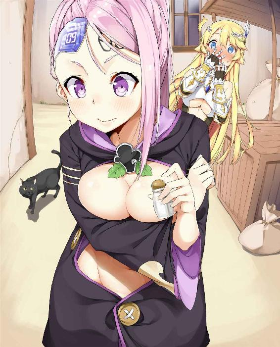

| 異世界にドラゴンを添えて (Atom Harako) | |
| CHIKOTO | |
| (2018) | |
chikoto
異世界に飛ばされた。
今日の放課後のことだ。スーパーに料理の練習で使う醤油を買いに立ち寄った、その後で......俺は飛ばされてしまったのだ。
......まさかこれがいわゆる「醤油買いに来ただけなんだけど」1ってやつか？
時間を少し巻き戻そう。四時間前、俺がまだ学校に残っていた時のことだ。
俺の名前は慕飛、十七歳の高二男子で、俺は退屈そうにシャーペンをノックしながら、じっとテスト用紙を睨み付けていた。
─塩の物理特性を選択しなさい:(A)液体となって通電する (B)氷と反応して冷却剤を形成する (C)......
テスト終了まで十分を残すのみとなっていたけれど、俺の答案用紙は真っ白のままだった。
そう、俺は一つも解答を書き込んではいなかったのだ。
俺は両手を頭の後ろに回し、同じ教室の中で慌ただしくペンを走らせている同級生たちを眺めた。
......つまんねぇな。
俺はため息を漏らすと、席から立ち上がり、真っ白の解答用紙をテスト監督官に提出した。
「こんな真っ白のままで出すのか？」教師はそういった。
「どうせ進学するつもりはありませんから」
「まあそうか、お前『若社長』だもんな」
「......ただの見習いですよ」
俺は通学カバンを取り上げると教室を出た。他の高校生と違っているところといえば、俺は高校卒業後、それ以上進学しないことが決まっている点だった。
親父の事業を受け継がないといけないからだ。
親父はかなり有名なコックで、あまりに有名すぎて、果ては自前のグルメ番組を持ちながら、同時に世界各地にレストランの支店を構えているほどだった。
そんな男の息子として、勉学なんかよりも、親父は実務経験の方をずっと重視していた。
小さい頃から現在に至るまで、学校が終わると、俺は親父の経営するレストランの厨房で、基礎訓練から、レストラン経営者としての目利きに至るまでを、学ばなければならない生活を送って来た。
「大学になんて進学してどうするんだ？ 大学を出てあれこれ学歴を切り貼りするのは、少しでも良い仕事を見付けるためだ。そこへいくとお前はもうその良い仕事ってやつが目の前に用意されているんだぞ。そんなお前が大学に何をしに行くっていうんだ？」親父はそんな風に言うんだ。
まあ......確かにそれで筋が通らないわけじゃない......
だけど親父の事業を継承すれば、俺はあの人と同じ人生を歩むことになってしまう。この業界は外から見れば華麗できらびやかなものに見えるかも知れないけれど、実際は飲食業に対する圧力はとんでもなく大きなもので、親父は子供のころの俺に関わる時間もまともに作れず、果てはお袋とも離婚し、外の女ともう一つ家庭を持ってしまっている始末なのだ。
親父みたいな人間にはなりたくなかった......
学校から帰る途中、カップルが体をこすり合わせるようにしてじゃれながら歩いているのを見ていると、悔しいという感情が湧いて来るのを抑えることができなかった。
もし彼女ができれば、高校最後の一年だって面白いものになるかも知れないのに。
俺の顔立ちは整っている方だ。身長だって同年代の男子の中では頭一つ突き抜けている。体格だってがっちりしている方だと言えるだろう。だけど残念なことに、得意と言えるようなスポーツもなく、女子生徒の大多数から支持を得る、なんてことは出来ていないのだった。
高校に進学してからは、何人か俺に対してそういう関係に発展しそうな好意を示してくれることもあったけれど、非常に遺憾なことに、彼女たちは揃って俺の好みのタイプではなかった。
俺は綺麗な女の子が好きなんだ......いや待ってくれ、ブーイングしなくてもいいだろ！ 男だったら誰だって綺麗な女の子の方が好きに決まっているじゃないか。
顔立ち以外にも、俺は一目惚れするような相手との出会いを求めているんだ。好みの食材に巡り合うみたいに、一口その味を感じた瞬間、「ああ、彼女だったんだ」っていう──そういう感覚が走るような出会いのことだ。
あるいは求めている水準が高すぎるせいで、今に至るまで俺には彼女ができたことがないのかも知れなかった。
大通りの角を曲がり、スーパーまでやって来た。
今日練習することになっている「燴蹄筋」2には醤油が必要だったけれど、手元の醤油は使い切っていたから、学校からの帰りにとりあえずの一ビンを買って帰ることにしたわけである。
俺はスーパーの中で醤油、酢とみりん、他にも臭みを消す用にしょうがを買うことにした。
こういった食材は親父の厨房に全て揃っているものばかりではあるけれど、俺はあの戦場みたいにギスギスした厨房で料理の練習なんてしたくなかったから、家に戻ってゆっくりとやることに決めていたんだ。
商品を選び代金を支払おうとしたけれど、レジは大きな人影によって塞がれてしまっていた。
そいつは俺とそう歳の変わらない、ヘッドホンを着けた、ダブダブのジャージを着た太った男だった。そいつの体はめちゃくちゃ大きくて、折り重なった贅肉がズボンから溢れ出し、数日は風呂に入っていないようなすっぱい匂いを漂わせていた。
なんて匂いだ！ こんな風に他人の目を気にしない態度、それに明らかに俺と同年代なのに学生服を着ていないところからして、こいつはいわゆるニートってやつに違いない！
ニートの手には今日発売のゲームソフトが握られていて、先にそいつがレジで精算を済ませるのを待つことにした。
できるだけ息をしないように努めながら、店員がニートの支払いを片付けるまで待ち、大急ぎで金を支払うと、酸っぱい匂いが充満する店内から逃げるように出た。
俺が店内から逃げ出した時、ニートはまだゆっくりと通りを歩いているところだった。
頭にヘッドホンを載せているせいで、通りの向こうからスピードの出ているトラックがそいつに向かって突っ込んで来ていることに、全く気付いていないようだった......
「危ない──！」
その時の俺は後先考えないまま、そいつに向かって飛び出していた。
......そうして異世界にやって来てしまったというわけだ。
頭を下げると、俺が今立っているのはクレーターのような巨大な窪みの真ん中で、内側の土は焼け焦げ、燃えた草の合間からは、まだ火花がちらちらと立ち上っていた。
おおおお！ これって、俺は隕石みたいに天から落ちて来たってことか？
すごい、聞いたこともないような登場の仕方だ！ この調子だと俺はこれから「天雷降生」とか「飛天火神」とかいう、他にちょっとないような尊称を受けることになるんじゃないか？
「ごほ、ごほごほ......」
俺がまさにライトノベルみたいな展開に陶酔していると、傍から突然咳き込む声が聞こえて来た。
え？ ええ？
俺がゆっくりと首を回すと、そこに見つけたのは......
さっき俺が助けてやったはずのニートが、クレーターの中で「大」の字になって横たわっている姿だった。
なんでお前まで一緒に転生して来てんだよ！ なんだこの一つ買ったらもう一つおまけしますみたいな流れは！ 普通アニメとかマンガだったら、主人公だけが転生して来るもんじゃないのか？
が、それでも飲食業のサービス精神が働き、俺はニートに近づくと、そいつを助け起こしてやることにした。
「大丈夫か？」
俺はニートを抱き起そうとしたけれど、そいつは重い上に臭くて、やっとのことで体を起こし、自分がクレーターの中に横たわっていたことに気付くと、俺と同じ感想を口にした。
「これって......異世界転生ってやつか？」
おっ、こいつもラノベやアニメを見てるお仲間だったのか、もしかすると俺たちはパーティを組んで一緒に冒険することになるのかも知れないな。
まさに俺がそんなことを考えていると、ニートは俺に対してひどくバカにするような視線を投げかけて来た。
「......なんで男なんかと一緒に転生して来たんだよ......」
なんだよ！ お前のこと無視しなかっただけ感謝されてもいいぐらいだろ？ もし俺がお前のこと助けてやらなかったら、今頃お前なんかとっくにトラックに轢かれて熟したカキみたいになってたとこなんだぜ！
俺の不満を完全に無視して、ニートは自分勝手にぶつぶつと小声で文句を呟いていた。
「......まぁいいか。どうせセオリー通りに進むなら、もう少しすれば美少女が登場するはずだからな......」
「そんな都合よくいくはずが......え？」
俺がそう突っ込みを入れ終わる前に、クレーターの外縁で動きがあった。
俺たちが同時に顔を上げると、一人の美少女が穴の外から頭を出して様子を伺っているのが見えた。
うそだろ、本当にそういう展開なのか！
美少女は中世ヨーロッパの貴族が着ていたようなコルセットとスカートが一体になった洋服姿で、服には幾重にも重ねられたレースと刺繍が施され、大きく開いた襟元からは、深い深い胸の谷間をあり得ないほどはっきりと露出させていた。
「私はこの集落の長、イザベラです」
イザベラは俺にも簡単に理解できる言語でそう自己紹介してみせた。ほん●くコンニャクとか９００分英単語聞き流しとかやらなくても異世界の住人たちの言葉が理解できるなんて、これも異世界転生モノの定番ってやつだよな！
イザベラの背後には、数十人ほどの質素な服装をした人々も集まっていた。もしイザベラが本当に「集落の長」なのだとしたら、あの人々は集落の住民ということになるんだろうか？ じゃあ郷民3とかでいいか。
「あなた達は二人とも『天選之子』なのでしょうか？」イザベラはそういった。
「......『天選之子』ってなんだ？」俺とニートは揃ってそう問い返した。
「『隕石』と一緒に天から降りて来られる『天選之子』は、不思議な魔法の力を備えていて、ドラゴンの爪より我らの集落の安全を守ってくださるのです」イザベラは答えた。
おおお！ ドラゴンだの魔法だのって、またまた異世界での冒険が始まったって感じがして来たぞ！
「そう、その『天選之子』っていうのは俺のことだ」
「そう、その『天選之子』っていうのは俺のことだ」
「......」
俺とニートは互いに視線を交わした。なんで人の真似してんだ！
「『天選之子』は一人だけです」
イザベラは手を打ち鳴らして合図すると、住民たちに水を張った盆を持って来させた。
「水に魔法をかければ、どちらが『天より祝福された』人か分かるでしょう」
「魔法をかける？ どうすればいいんだ？」
「私が知るはずないでしょう？ あなたが『天選之子』だというのなら、試してみたらいいんじゃないんですか？」
気のせいかも知れないけれど、イザベラは若干イライラしている感じだった。
まあそういうことなら......
俺はそれっぽく手を持ち上げ、掌を盆の水に向けた。
水面には少しも変化は見られなかった。
反応がないのも当たり前だ。魔法をかけるというのだから、まずは呪文を唱えないといけないんじゃないだろうか......
ばしゃっ！ 俺は水を被った。
「......」
振り返ってみると、ニートが太くて短い指を盆の水に入れているところだった。その直後、盆の水が噴水みたいに吹き上がったのだ！ 指を入れてみた感じ盆の深さは一、二センチといったところなのに、ニートが手を入れた瞬間にまるで消火栓が暴発するみたいに水が噴き出したのである！
「湧水の魔法だ！」「本当に天選之子だったんだ！」「神に感謝します！」
ニートの魔法を目にすると、集落の住民たちは次々に跪き始めた。
待て待て待て！ これって絶対なんかの間違いだろ？
あのピザ野郎が魔法を使えるってんなら、俺だってコツをまだ掴んでないってだけに違いないじゃないか！
「もう一つ持って来てくれ！」
俺はおかわりを要求し、住民に盆を持たせた。
今回は俺も慎重に盆に向き合い、少林寺拳法の型みたいにぐっと腰を低く落とし、五本の指を限界まで開くと、盆の水面に精神を集中させた。
「噴水よ出でよ！」
......水面には何の変化も現れなかった。
「えっ、水よ、噴水みたいに噴き出してくれ、ないか？」
......水面には全く何の反応もなかった。
ま、まさかここまで声を張り上げておいて全くなんにもナシかよ......
よくよく考えると、小説とかアニメの中に登場する魔法使いというのは、まず狂ったように長々と言葉を並べるものじゃないのか。
「水、水の元素の精霊よ......こた、俺の求めに応えて姿を現わしたまへ......」
ああああ！ 真昼間からこんなくっそ恥ずかしいセリフを吐かないといけないなんて！
「め、目の前のいず、泉の源から......水を噴き出したまへ！」
どう考えても今の俺は中●病患者だ......
俺は無理やりセリフを全て言い終わると、全神経を水面に注ぐようにして睨み付けた。
俺の一心の期待を受け、静まり返っていた盆の水面に、ゆっくりとわずかに波紋が発生し始めた！
せ、成功だ！ そう俺が内心で踊り出さんばかりに喜んでいた時だった......
「あっと、うっかり手が動いちまいました」郷民がそんなことをいった。
「邪魔するんじゃねぇぇぇぇ！」
そうこうしている内に、ニートによって全身びしょびしょになってしまっていたイザベラが口を開いた。
「よしみんな、『天選之子』がどっちか確定したから、彼を歓迎する準備に取り掛かるわよ......」
「うおおおお！」
集落の住民たちは歓声を上げながら、英雄を称えるようにしてニートを担ぎ上げ、小さな集落へと移動を始めてしまった！
「待ってくれ！ 行かないでくれ、俺を置いていかないで！」
俺は慌ててイザベラの服を引っ張った。
「俺はどうしたらいいんだ？ 俺もあいつと一緒に連れて行ってくれよ！」
イザベラは彼女の美貌とは全く不釣り合いな、嫌悪感剥き出しの表情を作った。
「は？ 私に言ってんの？ あんたって魔法も使えない一般人なんでしょ？ あそこの谷を越えてから山二つ登った先に街があるから、ま、そこまで行ったらマシな出会いでもあるんじゃないの......」
「山なんか登ってられるか、今さっきドラゴンが出るって言ってただろうが！」
俺は命がけでイザベラを掴み、彼女もまた必死で俺の手を振りほどこうとした。とんでもない事態になってしまったぞ！ 彼女の今の口ぶりだと明らかに俺のことを見捨てようって腹じゃないのか？ だけどここは異世界なんだ、何の武術も魔法も持たない俺なんてあっという間に死んでしまうじゃないか！
「俺を集落に置いてくれ！ 俺には得意なことがあるんだ、俺はコックなんだよ！ 料理の腕前だったら折り紙付きだから！」
俺は肺が破れんばかりにそう叫んだ。俺のその言葉を耳にすると、イザベラは虫けらでも見るような目になった。
「あんたがコックですってぇ......」
中国のネットスラングの一つ「打醤油」が元ネタになっている。直訳すると「醤油を買う」となるが、2008年ごろ当時の中国で話題となっていたゴシップ事件に関し街頭インタビューを行っていた広州テレビ局のスタッフに対し、インタビューを求められた通行人が「醤油を買いに来ただけだ、俺に何の関係があるんだ！」と返し、その使い勝手の良さから「自分に何の関係があるのか」「放っておいてくれ」というニュアンスの表現として急速に広まった。
⏎
牛筋、キノコ、ネギ、しょうが、豆苗を基本材料とし、酒、オイスターソースなどで味付けした中華料理。片栗粉でとろみをつけるなど酢豚と共通点が多い。
⏎
無教養な田舎者という意味を含み、転じて野次馬を指す。ここでは集落(郷)の住民と野次馬がかかった表現として使用されている。
⏎
１
この剣と魔法が支配する大陸には、様々な魔力を持った動植物が生息している。
その中で最も人々に恐れられているのが、前世紀から生存を続けている魔龍だ。
魔龍は村や都市に侵入し、勝手気ままに人間の命と財産を呑み込み、人々の生活を恐怖の中に突き落として来た。
けれどその一方で俺が転生して来たこの集落──「バニータ村」はとても安全だった。
「バニータ」というのは古代の言葉で、「祝福を受けた」という意味になるそうだ。
この小さな集落は山が連なってできた美しい谷の中に抱かれ、数百年来に渡ってドラゴンが姿を現わしたことがなく、モンスターの出現率も極めて低いため、人間にとっての楽園ともいえる土地だったわけである......
ただし俺を取り巻いているのは、これまで無かったほどの悲惨な状況だった──！
異世界に転生して来てから、俺は自分が誰からも見向きもされないようなごく普通の人間だということを発見していたのに、一方で一緒に転生して来たあのニートは、天から魔法の力を与えられた「天選之子」だった。
集落の守護者として、ニートは毎日のように集落の住民たちから供え物を受け、豪華で愉快な日々を送っているのだ。
こりゃどういう冗談だよ！ まさか「取柄が一つもないニート」っていうお約束の条件がなかったら、転生した先の異世界で勇者になれないっていうのか？ この世界は地に足を着けて苦労して働いている人間をどうしようっていうんだ！
せっかく転生して来たっていうのに、主人公は俺じゃないなんて、まさか俺は火鍋の肉に添えられるネギにしか過ぎないっていうのだろうか......
「おい！ 凡人！ ビールのおかわり持って来い！ 何度も呼ばせるなんてつんぼにでもなったのか、それとも野垂れ死にでもしてんのか？」
俺が振り向くと、ニートが何人かの粗暴そうな冒険者たちと一緒になって、俺にジョッキを振り回しているところだった。
死ぬほどイザベラに泣きついた末に、彼女はとうとうイヤイヤ俺を経営しているパブで働かせることにしてくれた。
美しい外見とは裏腹に、イザベラの個性は劣悪そのもので、いわゆる「ケチで短気」そのものといった商売人だった。四分の一だけ精霊の血を引いている彼女は、外見こそとても若く見えるものの、実際の年齢はすでに五十を過ぎていて、内側だけでいえば文字通りのオバサンなのだ。
イザベラの商売の手はこの集落全体に万遍なく広がっていて、銀行から、パブ、商店の経営まで一切の手抜かりがなく、彼女がこの集落において三十年に渡り長の座に座り続けているのも、頷ける状況だった。
彼女は考えられる限りの最低賃金で、俺を汚い上にボロボロのパブで馬車馬のようにこき使っていたのである。
けれど何も持たない俺には、ここにいるよりもマシな選択肢なんて、ありはしないのだった。
「早く酒を持って来い！」ニートは空になったジョッキでテーブルを叩きつけた。
「昼間っからそんなに酒を飲むなよ、そもそもお前まだ未成年だろ？」俺はジョッキを運びながらそういった。
「うるせぇ、魔法も使えない奴がごちゃごちゃと！」
ニートが指を弾くと、冒険者たちの持っていたジョッキが宙を舞い、俺は頭からビールを浴びることになった。
「はははははは──」冒険者たちが大笑いしてみせた。
「......」
こいつ......俺がお前のこと助けてやらなかったら、異世界に転生なんてそもそもできなかったんだからな！
俺は他に仕方なく空のジョッキを拾い集め、パブの裏口から出ると、ビールを注ぐためにビア樽の前にかざした。
ビア樽の栓を開いてから、俺はぼんやりと黄色いビールがジョッキを満たしていく様子を眺めた。
異世界に転生するっていうのはアニメでやっているような、あんな楽しい話じゃなかったんだ......家に帰りたい。
パブでの仕事で唯一の良かったことと言えば、冒険者たちのお喋りの中から「外の世界」の物語を盗み聞きできることだった。
もしこの小さな集落を出て世界を旅することができたら、俺なら不老不死の精霊とか、略奪で生計を立てている泥棒かささぎどもと出会ったり、小人たちの金鉱山を見に行ったりするだろう。俺は錬金術師が本当に黄金を錬成することができるのか見てみたいし、とんでもない武芸を持った剣士の技も見たいし、それに最もクールな「あの職業」──ドラゴンを葬る使命を胸に抱き、各地に残るドラゴンの痕跡を訪ね歩くドラゴンスレイヤーにも会ってみたかった。
けれど平和なこの集落とは違い、外の世界には非常に危険なモンスターたちがうようよしている。
何の魔法も武術も持たない俺に、本当にこの集落を出て行くような手段があるんだろうか？
俺はジョッキから手を放し、谷を囲んでいる山々の景色に目をやった。
パブは小高い丘の上に位置していて、この丘の上からは、夜を迎えようとしている静かな集落の様子が見てとれた。
農家の建物からは藍色がかった煙が窓の格子を抜けて吐き出され、それがゆっくりと空に向かって立ち上り、美しい夕暮れの中に溶け込んでいくのが見えた。
そう離れていない場所にいる牛の群れが、今まさに山の牧草地から低地へと戻って来ているところだった。カウベルの柔らかい音色が谷の間を、低く密に反響しているのを耳にすると、まるで誰かの囁きを聞いているかのようだ。
なんて平穏なんだ。
話に聞いたところでは、ここの集落はこの大陸の中で、最も安全な桃源郷のような場所だということらしい。
よく考えてみれば、俺はこの「初心者用の村」での安全な暮らしに、感謝しなければいけないぐらいじゃないのか？
俺は自嘲するように首を振ると、さらに遠くへと視線を移した。谷間に沈みゆく夕日が、さながら火焔のように真っ赤に......
......待てよ、赤すぎないか？
俺が目を凝らすと、谷間を舐めるようにして立ち上っているのは夕日の明かりではなく、大火災の火の手だった！
燃えているんだ！
山の麓にある町全体が火の海に呑み込まれ、激しい火柱が天まで届かんばかりに立ち上り、灰色の濃煙が谷間の四方八方へと拡散しつつあった。
なんであんなことに......こんなにあっという間に、あんな大火事になるなんて......
次の瞬間、その怪物がゆっくりと、火焔の中から飛び上がった。
それは漆黒の体を持つ、巨大なドラゴンだった。
そのドラゴンは爬虫類のような体を持ち、細くて長い首と尻尾を備えていた。そいつは黄金色に輝く一組の翼を広げ、火焔の中で羽ばたきをしてみせると、狂風によって燃えた町の残がいが、空一杯に舞い上がった。
ドラゴンは空中で半回転すると、羽ばたきしながら俺の方へと飛んで来た。
冗談じゃないぞ！ ここの集落は一番安全だったんじゃないのかよ？
俺は転がるようにして駆け出し、できる限りの速度でパブの中へと飛び込むと、大口を開けて叫んだ。
「ドラゴンが来た！ ドラゴンがこっちに向かってるぞ！」
その瞬間、パブで騒いでいた冒険者たちは静まり返った。
彼らは続々と怪訝な表情で俺のことを見詰めた。そうしてから──
「ははははは、ここはバニータだぜ！」
彼らは爆発するような笑い声をあげた。まるで俺が今しがた叫んだ内容が、くだらない冗談であるかのようだった。
けれど、彼らがひとしきり笑い終わらない内に、頭上で「ドン」という大きな音が響き渡った！
錆びついた吊りランプが激しく揺れ、梁に溜まっていた埃が舞い落ちて来た。
何かとんでもなく巨大なものが屋根にぶつかったんだ。
冒険者たちは一斉に厳粛な雰囲気に変り、互いに視線を交わし合ってから、最終的にその場にいた全員の視線がニートの元に集まった。
「て、天選之子よ、見て来ていただけませんか......」
「見て来るって、たかがモンスターだろ？」
ニートはひどく酔いが回っていた。テーブルを叩いて立ち上がると、ふらふらと体を揺らしながら戸口に向かった。その途中で転倒しそうになっていた。
「無理すんなよ！ あのドラゴンはめちゃくちゃデカいんだ！ 信じられないほどデカいんだぞ！」
俺は慌ててニートを引き留めようとしたけれど、予想だにせず、ニートは俺の手を振り払った。
「バカ、ドラゴン殺しは異世界転生の定番だろうが？」
「それはそうだけど、でも......」
俺が言い終わらない内に、ニートはぶつかるようにしてパブのドアを開け、そのまま建物の外へと出てしまった。
「来い、俺の勇者の道を邪魔しようとするドラゴンめ！ かかって来やが......」
ニートの言葉は半分までしか続かなかった。やつの厚ぼったい口は半開きになり、三角形の目が上に向かって吊り上がった。
俺はやつの視線の先を辿った。
あの黒いドラゴンはまさにパブの屋根の上に腰を下ろし、高い場所から俺たちのことを見下ろしていたのだ。
眩いばかりに輝く金色の翼を持ったそのドラゴンは、トラックよりもまだ大きかった。そいつは見たところめちゃくちゃ成長したイグアナといった感じだったけれど、首と尻尾はウワバミのように長く、背中には凸凹と大きさの不ぞろいな肉のコブが林立していた。
こんなに巨大な生物が生きて目の前に現れてしまったら、もはや恐怖という二文字でしか形容することはできないだろう。
平和な世界からやって来た俺たちは、巨大なドラゴンが発する存在感によって、徹底的に肝を潰されてしまった。。
俺たちが恐怖から腰を抜かしている間にも、ドラゴンは獰猛そうな鼻の穴から絶え間なく蒸気を噴き出し、糸のような火焔もそいつの牙の隙間からちらちらと顔を覗かせていた。
あいつは何を考えているんだ？ どっちを先に食おうって考えているんだろうか。
やつの目には、俺たちはただの弱っちい獲物だとしか映っていないのだろう。
時間がまるで停まってしまったみたいだった。ドラゴンのガラス玉のような緑色の眼球に、俺たちの歪んだシルエットが逆さまに映り込んでいた。
「ラ、ラノベだとち、ち、ち、チートなんだから、勝てるはずなんだよな......？」
ニートは恐怖からすでに酒が抜けてしまっていた。
「えっ、あ、そうだ、そのはずだけど......」
俺は後ずさり、また後ずさり、後ずさり続けて井戸の傍まで移動した。
「じゃ、じゃあ後のことはお前に任せるから......」
シャア──！ ドラゴンが形容しがたいような鋭い叫び声を上げ、続けてびっしりと牙が並んだ口を大きく開くと、ニートに向かって火炎を吐き出した。
「ぎゃああああ──！」
ニートはホラー映画の中でしか耳にできないような、肺が張り裂けんばかりの悲鳴を上げると、ドラゴンに向かって腕を伸ばした。
やつは確かに水を召喚してみせた。
けれどそれはごく微量な水柱で、ドラゴンの炎に対しては何の意味もなかった。
眩しいばかりのドラゴンの炎が水柱を打ち破り、ニートの全身を呑み込んだ。
俺は目を見開いて、目の前の恐ろしい光景を見詰めていた。
ニートはドラゴンによる透明な火の手に包まれながら、恐怖から口を大きく開け、俺の方へと歩いて来たのだ。
「やめろ......く......来るな......」
俺はそう呟いた。ニートは二歩ほど進んだだけで、前向きに倒れてしまった。
肉の焼ける匂いが鼻を突いた。
「あ......ああ......あ......」
俺は喉元から、不規則に震える嗚咽を漏らした。
次の瞬間、ドラゴンは俺に向かって飛び掛かって来た。俺は悲鳴を上げて後ろにさがり、井戸の低い縁に足を取られた。
そうしてバランスを崩し、頭を下にして井戸の中へと転がり落ちてしまったんだ。
終わった。体にかかる重さを失った瞬間、俺はそう考えることしかできなかった。
ここで意識を失ってしまい、それで死ぬことがなかったとしたら、最初からやり直しになるのだろうか。それとも元の世界に戻ってしまうのだろうか？
もし可能なら、俺は後者の展開の方が良かった。
薬の匂いが鼻を突いた。俺はどうも病院の中にいるようだ。
ああ、どうもこの感じだと、現実世界に戻って来たらしいな......
俺は思いっきり安心できる薬の匂いを吸い込み、目を開いた。
木造建築の薄暗い天井が視界に映った。
......違ったらしい。
俺は体を起こそうとしたけれど、少し体を動かしただけで、胸の下からへそ辺りにかけて激痛が走り、痛みから大声を上げた。
「あいたたたたた......」
「目が覚めたかね」
中年の皺だらけの顔が、俺の視界に現れた。
俺は記憶の中を探ってみた。たしかこの集落の医者のはずだった。
「う、えっと......」体に走るひどい痛みのせいで、俺は話をすることができなかった。
「君はドラゴンに噛まれたんだよ」医者は左胸からへそまでの位置を指さしてみせた。
「う、ああ......」いたたた、なんだってこんなに痛むんだ？
「君はまだ幸運だったんだぞ。あの後ドラゴンはパブの中に侵入して、中の連中をみんな平らげてしまったんだからな」
ドラゴン、火焔、悲鳴......鮮明な記憶が脳内に蘇って来た。
俺は最後に見たニートの光景を思い出した。
「う......じゃあ......天選之子は......」
記憶の中に残っていた肉の焼ける匂いが神経を刺激し、俺は反射的に吐き気に襲われ......つづけて、未だ収まらない激痛にも見舞われることになった。
「彼ならそこだよ」
俺が難儀して振り向くと、そう遠くない場所にあるベッドの上に、全身を包帯でぐるぐる巻きにされたニートが横たわっていた。
何重にも巻かれた包帯の下から、組織液と血が黄色くにじみ出ていた。
「ひどい火傷でね」医者はいった。「彼の下半身もあの調子さ」
その言葉は俺に、杭を直接心臓に打ち込まれたような衝撃を与えることになった。
これってアニメでよくみる異世界転生モノじゃないのか？
ここは最も安全な、初心者用の村じゃなかったのか？
ニートの惨状を目にすると、俺の精神はめちゃくちゃになってしまった......住み慣れた環境から離れた不安、パブの仕事での不満と仕打ち、もう少しで命を落としていたかも知れないということへの恐怖......この世界にやって来てから、積み重なり続けていたストレスが一気に爆発してしまったのだ。
俺はシーツの中に顔を埋め、家に帰りたいと喚き散らしながら、声が枯れてしまうまで泣いた。
俺が泣いている間、傍で寝かされているニートもまた、途切れ途切れに嗚咽を漏らしていた。
それからの数日間、俺は集落の病院で過ごすことになった。病院といっても、実際には大量の病床が並べられているだけの、病人を収容するための小屋に過ぎない場所だ。
俺が病院にいる間、イザベラは一度だけ俺の様子を見にやって来た。けれど彼女が俺を見る目つきは、病気を出した家畜をみる目つきそのものだった──彼女はただ、俺が一刻も早く回復して仕事に復帰できるかどうかということしか、考えていなかったのである。
医者とイザベラの会話から、俺はあの日集落を襲撃したドラゴンは、すでに逃げてしまったことを知った。谷間にあるのはここの集落一つきりで、ドラゴンはすでに人肉の味を覚えてしまっていた。再び攻撃を仕掛けてくる可能性は非常に高かった。
それで、集落は「ドラゴンスレイヤー」の出動を要請することになったのである。
２
「ドラゴンスレイヤー」の多くは強大な魔法を備えた魔法使いや、素晴らしい腕前を持った剣士であり、彼らはドラゴンの討伐を生業としている。
ドラゴンの体積が非常に大きなことから、多くのドラゴンスレイヤーたちは同盟を結んで団体で狩りをする。そういった団体のことは「狩猟団」という風に呼ばれていた。
そして「ドラゴンスレイヤー公会」というのが、この手の業者を専門とした仲介組織だった。ドラゴンによる被害を受けた人々は、最寄りの公会に連絡をとり、公会を通してドラゴンスレイヤーか狩猟団に、ドラゴンによる被害を解決してくれるようにと依頼するのだ。
けれど俺たちのいるこの小さな集落は、今回の襲撃事件の処理を公会に依頼しなかった。聞くところによると、イザベラが公会が徴収することになる雇い賃を、高すぎると判断したというのだ。大金を支払いたくないがために、彼女はその場しのぎで、伝書鳩を放ち、ドラゴン討伐の依頼を谷の外の街まで届けさせたのだった。
すでに状況がここまで切迫しているというのに、こんなにケチなやり方で本当に大丈夫なんだろうか？
俺はイザベラにそう問い質したかったものの、もし彼女に盾突くようなことをしてしまったら、俺は仕事を失ってしまうわけだ。
もし仕事を失ってしまったら、俺はこの異世界で生きていくことができなくなってしまう。
辛抱する以外になかった。俺はこの時になってようやく、自宅で経営者の倅として大事に扱われて来た自分が、どれだけ幸福だったかを意識することになった。
人は往々にして失ってしまってからその大切さを知り、後悔するものだ。悲惨な状況の中で、唯一喜ぶに値するものといえば、俺の傷の治りがかなり早かったことだった。
こういった消毒設備もなく、殺菌という概念もないし抗生物質も存在しない時代背景で、俺が感染症によって死んでしまわなかったことは、本当に奇跡という他なかった。
あるいはドラゴンの唾液の中には、ある種の細菌の繁殖を防ぐ成分が含まれていたのかも知れないけれど......もっともそんなのは俺の憶測に過ぎない。
俺の運はまあまあ良かったものの、傷口が塞がっていく過程では、ぞっとするような出来事も起こっていた。傷口周辺で死滅してしまった肉があまりに多く、そのせいで医者がウジ虫を使って、俺を「治療」することにしたのだ。ウジに死んでしまった肉の部分を食わせるというわけである。
ウジが傷口を這いまわる感触ときたら......いや、わざわざ振り返る必要はないだろう。
けれどこの古臭い治療法によって、一週間後には俺の傷もすっかり改善し、仕事に戻れるようになっていたのである。
病院を出て行くその日、俺はニートに別れを告げた。
「イザベラのところに戻って、働いてくるよ」
俺はニートにそう話した。やつはくぐもった音を発するだけだった。
密に巻かれた包帯の下では、やつの顔面は全て破壊されていて、頬や唇ですら動かすことができなくなっていた。
ニートはこうなる前こそ俺のことをいじめていたこともあったけれど、相手がこんな状態になってしまっているのを目にすると、俺もやつのことを恨み続けることはできなかった。
ニートはより大きな声を発したけれど、俺にはやつが何を言おうとしているのか分からなかった。
「姿勢を変えて欲しいのか？」
聞いた話だと、長い間病床で横たわっていると、床ずれを起こしてしまうらしい。俺は腰を屈め、ニートが両足を動かすのを手伝ってやろうとした。
そんな時、俺の目がシーツの間にきらっと光る物が挟まっているのを捉えた。
なんだ......？
俺がシーツの下を探り、目の前まで持って来ると、それは奇妙な形をした金貨だった。
集落で流通している金貨じゃなかった。集落で使用されている金貨は、表面に金貨を発行している国家と鋳造所の名前が刻印されている。けれど俺が手にしたその金貨は、黄金によって鋳造されたもののようではあったけれど、不規則な楕円形をしていて、金貨の両側が反り、ある種の「手作り」感があった。
集落の住民がニートにお供えしたものだろうか？
俺はニートを一瞥した。今のこいつの状況では、余分な金なんて持っていても仕方がないだろう。
俺は金貨をポケットに仕舞った。
「ホテルには人が沢山集まって来る。もしお前を魔法で治療することができる奴がやって来たら、この金貨を使ってお前を助けてやるよ」
俺はニートにそう保証してやった。それは俺が唯一してやれることだった。
パブがドラゴンによって破壊されてしまったので、俺はイザベラが経営しているホテルで新たに働くことになった。
ある日の午後、俺がホテルの厨房を掃除していると、外から騒ぐ声が聞こえて来た。
「狩猟団が来たぞ！」
その驚くべき知らせを耳にすると、俺はすぐさま通りに駆け出した。
大広場はすでに集まって来た人で一杯で、みんな狩猟団のいで立ちを一目見ようとしていた。人波の中でもみくちゃにされながら、やっとのことで最前列まで出ると、俺はそこで「狩猟団」の姿を目にした。
狩猟団は想像していたのとは違っていた。
俺はもともと、狩猟団とは軍隊みたいに、輝く剣と甲冑を装備し、その陣容は少しの乱れもなく整っているものだと考えていた。
けれど目の前に現れた狩猟団はだいたい三十人ほどで、メンバーたちは色んな地方からかき集められたみたいに、背の高い者や低い者、歳を食った者や若い者、痩せているやつと太っているやつ、様々な人間が混在しているのだ。
その中で最も目を引くのは、狩猟団のリーダーとして一団の先頭に立っている男だった。
男は見た感じ二十歳を過ぎたところで、整った利発そうな顔立ちに、葡萄酒色の髪を短く切りそろえ、すっきりとした目とがっちりとした輪郭を持つ下あごをしていた。鍛えられた健康的な肉体の上に、剛健そうな甲冑を着込み、その甲冑の表面には、戦闘によってできた傷跡が一杯に残されていた。
「ここの集落の代表者はどこか？」
男はそういった。鐘のように低くて荘厳な響きのする声だった。
人々は黙ったまま、イザベラの前までの道を開いた。
つづけて、男は凛然と一歩踏み出すと、集まっていた全員に対してこう宣言した。
「私は『面之華狩猟団』の団長、ピルジンである」
「おおおおお──！」その言葉を聞くと、みんなは非常に大きな歓声を上げた。
「みんな何をあんなに驚いてるんだ？」俺は傍で熱狂を見物している鍵屋にそう訊いた。
「『面之華』っていうのは教会直属のドラゴンスレイヤーなんだ。この辺境で最強の狩猟団って言われてるんだぜ」鍵屋はいった。「彼らが来たってことは、もうここの集落は安全ってことさ」
「しゅ、狩猟団のみなさまの到着を歓迎いたしますわ......」
イザベラはピルジンの気迫に気圧されている様子だった。
「我らはあなたがたの集落がドラゴンに襲われたという知らせを受け取ってから、昼夜を押して駆けつけました」ピルジンは背後に控えている狩猟団のメンバーを振り返った。「もし許していただけるようでしたら、私たちはこの集落に留まり、ドラゴンによる害を解決したいと考えております」
大規模な狩猟団の団長でありながら、彼の態度はごく親切で、少しも驕ったところがなかった。
「はい......それはもちろん構いません」イザベラは慌ててそう返事をしたものの、すぐに我慢できなくなってこう付け加えた。「ですがあなた達、そんなに沢山集まったって報酬が増えたりはしませんからね」
こんな事態になってまで値切り交渉をしようだなんて、俺が彼の立場だったら腹を立てて引き上げてしまっていたところだ。
けれど、ピルジンは反対に、爽やかに笑ってみせたのだった。
「もちろんです。我ら教団の教義は『民衆をドラゴンの害より救うこと』ですからね。ドラゴンを葬ることは我が天職ですから」
おおお、なんてカッコいい切り返しなんだ！
どのみちこの集落には、他にドラゴンを退治できる人間がいないのだから、彼はこの機会に報酬金額を吊り上げることだって、できたはずなのである......
俺はピルジンの善良さに、思わず唸ってしまった。
俺の考えに呼応したかのように、イザベラはずる賢い笑みを浮かべた。
「それは良かった。では契約成立ということで......」
「ちょっと待った！」鋭く歯切れの良い声がイザベラの言葉を遮った。「お兄様もお人が良すぎます。あなたもお兄様のことをそんな風に騙そうとしないで貰いたい！」
ピルジンの傍に目をやると、フードを被った小さな女の子が立っていた。彼女の体があまりに小柄だったせいで、今この瞬間まで誰も彼女の存在に気付いていなかったのだ。
女の子がフードを脱いで顔を見せると、精緻で可愛らしい顔立ちの、人形のような子だった。
彼女は見た感じ、集まっている群衆とは異なっているように見えた。彼女の頭髪は淡い緑色で、春の新芽のように柔軟な巻き毛が、彼女の小さく整った顔立ちを引き立てていたからだ。もしかすると彼女は小人か精霊の血を引いているのかも知れなかった。
「この子は妹弟子でね」自分の妹を紹介する時、ピルジンの目には自慢するような色が浮かんでいた。「史上最年少の一級錬金術師、ディルくんだ」
「錬金術師だったのか......」
「噂では石を金塊に変えてしまえるっていう、あの......」
人々が言葉を交わし合っている中で、ディルは繊細な人差し指を使って、イザベラの鼻先を指さした。
「お兄様はあなたに値上げ交渉こそしませんでしたが、あなたの示している報酬は少なすぎませんか？ 甲冑すら満足に変えない額ではないですか！ 私たちだってわざわざこんな小さな集落までやって来ているのですから、あなただって少しぐらい奮発してもいいはずでしょう！ こんなにケチなオバサン、初めて見ますよ！」
「オバサン......私がオバサンですって......」
ディルに一目で実年齢を言い当てられてしまったことで、イザベラはかなりショックを受けた様子だった。
「よしよし、ディル、お前も言い過ぎだぞ。気まずい空気になってしまうじゃないか」ピルジンは救世主のような笑みを浮かべ、タイミング良く二人の間に割って入ると、仲を取りもとうとした。「私としては別に不満はないのです。集落の予算に限りがあるのなら、報酬が変わらなくても仕方がありません。しかし......」
ピルジンは言葉を区切ると、異議を差し挟むのを許さないような目で、群衆を見渡した。
周囲の人々が彼に見詰められることで気まずい感じを味わったのを見定めると、ピルジンはゆったりとこう口を開いた。
「しかし、私たち狩猟団がこの集落に駐留する以上、いついかなる時もみなさんの安全を守護することになるのですから、集落のみなさんは私たちに無料で食事と宿を提供していただいても、良いのではないでしょうか？」
みんなは一斉にイザベラをみた。
「三......三十人も......もし毎日全員が銀貨一枚分の食料を食べるとして、三十人で一日銀貨三十枚、一週間で......うああああ──！ とんでもない額になるじゃない──！」イザベラは悲鳴を上げた。
「長よ、腹をくくってください！」
「私たちだって税を納めているはずでしょう？」
「教会直属の狩猟団だぞ、額面以上に働いてくれるはずじゃないか」
そのまま見ていられなくなった集落の住民たちが好き勝手に話を始め、人々の意見が自分たちに傾いて来たことをみるや、ピルジンは明らかに得意気になった。
「いいでしょう、みなさんもこう言っていることですし、長であるあなたもみなの意見に従って......」
「ドラゴンスレイヤーだ！ 別のドラゴンスレイヤーがやって来たぞ！」
その声を聞くと、みんなは揃って首を伸ばし、集落の入り口へと目を向けた。
白馬に乗った一人の騎士が、遠くからこちらに向かって駆けて来るところだった。
騎士はきらきらと輝く衣服と甲冑を身に纏いながら、雪のような白馬に跨っているせいで、駆けているその姿はまるで流れる雲のようだった。
騎士はさっと集落の門を潜ると、人々の前で手綱を引き、馬を停めた。
彼が目の前で停まってから、集落の住民たちはようやく、この騎士がかなり妙な手合いだということに気付いた。彼の全身は風一つ吹き込めないほど密に隠されていて、手元ですら手袋を履き、顔も薄い紗で覆われていて、その面立ちをはっきりと見ることができないのである。
まさかこの騎士もドラゴンによって噛まれたか、火傷を負わされたのだろうか？
俺は無意識に腹へと手を伸ばした。腹部の傷口はすでに塞がっていたけれど、見るに堪えない傷跡は残ったままだった。
意図的に顔を隠していること以外は、騎士はとても恰好が良かった。彼は美しい花柄が刻まれた、見た感じ軽くて堅牢そうな白い甲冑を着込んでいて、背中には複雑な紋様で飾られた大きな剣を担いでいた。
「ごほん......ここで......ドラゴンの襲撃があったと聞いたのだが？」
騎士はわざと低く押し殺した、不自然な声でそういった。
「現れたのは黒く、火を噴くドラゴンということだったが、ドラゴンの様子を見た者はいるか？ 黒くて、首が長くて、金色の翼を持った......あっ、それから赤い高温の火炎を放つ、そういうドラゴンではなかったか？」
「そういうので間違いないぞ」
俺が群衆の合間からそう答えると、みんなが揃ってこちらを振り向き、思わず顔が火照ってしまった。
「良かった、そのドラゴンの様子をはっきりと見たのか？」騎士は慌てて俺にそう質問してきた。
「うん、かなりはっきり見た」なんたって、俺はそのドラゴンに噛み付かれているわけだ。
「ドラゴンはこんな風に飛んでいたか？ 飛ぶと金色の翼が良く目立って、それからその翼を大きく広げて、とても大きな風が巻き起こって、ぶぅぅんという──こうだったか」
騎士が両腕を振り回して、ドラゴンが飛ぶ様子を真似てみせると、俺はもう一度頷いた。
「やったぞ！ 『銭龍』で間違いない！」騎士は興奮した様子で両腕を挙げた。「私もドラゴン討伐に参加する、私も加えてくれ」
「非常に残念なのだが、来るのが少し遅かったようだ。私たち面之華狩猟団が先にここでの仕事を請け負うことになったのでね」ピルジンがそう答えた。
「いやいやいやいやいや、まだ決まってないわよ！」イザベラが慌てて口を挟んだ。「私たちの集落の予算には限りがあるの。もしあんたの示す金額が私たちの納得いくものだったら、あんたにドラゴン討伐を任せることになるかも知れないわ！」
ブー──みんなは遠慮もなしに、イザベラにブーイングを起こした。
「そうか、あなた達は金がないのか......」騎士は少し考えてから、指を弾いた。「分かった、だったらこうしよう。私は金は受け取らない。しかしドラゴンを狩ったら、私は翼の方をいただく。この取引だったら悪くないだろう？」
「素晴らしい、だったらあんたに......」
「ダメだ！ 絶対にダメだ！ 値下げで競争しようだなんてやり方があくど過ぎるぞ！」ピルジンは慌てふためいた様子でいった。「貴様、揺すりで儲けようという『泥棒かささぎ』ではないのか？ みんな良く聞いてくれ、こいつは先に低い報酬金額で君たちを惹き付け、他のドラゴンスレイヤーとの契約を辞退させてから、何をするにしても金が必要だと言い張って、剣を一度振るだけでも金貨一枚から要求するつもりなんだ。君たちのことを太った羊ぐらいに考えているんだぞ......」
「本当に報酬の追加なんてない！」騎士は慌てて手を振った。「私はただドラゴンの翼が欲しいだけなんだ、他の物は興味ない、信じてくれ......あっ！」
騎士はうっかり、手に履いていた手袋を飛ばしてしまった。
手袋は空中で弧を描き、最後にばさりという音を立てて、面之華狩猟団の団員の頭上に落ちた。
「うあああ！ わざとじゃないんだ！」騎士は大急ぎで馬から降りると、自分の手袋を回収しに向かった。
騎士が馬から降りてみると、彼の体がとてもやせ細っていて、手袋をしていない手も異常に繊細で、長い指がまるで白ネギのようだということに気付いた。
「手袋を人に投げつけたということは、決闘を申し込んだという証拠だ」ピルジンは良く通る声でそういった。
「あわわ、しかし私は不注意で......」
「決闘というこの神聖な行為は、『不注意』などという言葉で片付けられるほど簡単なものではない。一旦始まってしまった以上は、その決闘で命を落としても構わないという覚悟で臨むものだ」ピルジンは剣の柄を握ったまま騎士を睨み付けた。「先に言っておくが、私は面之華狩猟団の騎士で......」
「分かった分かりました、それならそういうことでいいですから、じゃあちょっと伺いたいんですが、もし私が決闘で勝ったら、ドラゴン討伐に協力して貰えますか？」騎士は完全にピルジンのことを無視し、イザベラの方を向いていた。
「い......いいわよ」イザベラは小声でこう付け足した。「ただし報酬は少しだけよ」
「だったらいいでしょう」騎士は剣を抜き、切っ先をピルジンに向けた。「決闘といきましょう！」
「......本気で決闘する気なのか？」今度はピルジンが驚く番だった。「剣術に関しては、私はこれでも天下一なのだぞ。そんな私と決闘ということは、貴様は死ぬかも知れないということだぞ？ 本当に死ぬんだぞ？ 剣で喉を串刺しにされてしまったら、めちゃくちゃ苦しみながら死ぬことになるんだぞ？」
「私はもうあのドラゴンを探して一か月になるんだ。お腹が減ってぐるぐるとうるさいったら......御託はなしだ、とっととあなたも剣を抜け！」騎士の戦意は堅いようだった。
「な、なら致し方がない！」ピルジンはいった。「私は貴様の命を奪いたいわけではないからな、先に取り決めを結んでおこう。先に剣が相手に触れた方が、少しでも甲冑に触れただけでもその者の勝利としよう......これは貴様に対する最後の憐れみだ」
「分かった分かった好きにしてくれ、早く決闘しよう」
この騎士の決闘に対する興味のなさは、少し度が過ぎているんじゃないだろうか？
「おい、『サーカス』を出してくれ」
ピルジンが団員に合図すると、数秒後、金色の染料で染められた、これ以上ないぐらい華麗な長剣が登場した。
ピルジンはひどく勿体ぶった態度で、ゆっくりと鞘から剣を抜いた。
鋭利な刀身が陽光の元に晒されると、冷たい光をしんしんと放った。
「今にって後悔しても遅いぞ」彼は低い声で騎士を威嚇してみせた。
「私は後悔なんて......」騎士がその言葉を言い終わらない内に、ピルジンは剣を構え、騎士に向かって突進した！
「うあ！」ピルジンが突然攻撃して来るとは思っていなかったのか、騎士は驚いて剣を振り、寸でのところでその刺突を防いだ。
二振りの剣がぶつかり合い、藍色の火花が周囲に飛び散った。
最初の攻撃が決まらなかったのをみると、ピルジンは再度剣を振り、騎士の胸元に飛び掛かった。
今度は騎士も防御を整え、舞踏を思わせるような巧妙な足さばきで体を捻り、ほんの少しの距離を置きながら、迫りくる剣の刃を逃がしてしまった。
うまい！ 俺がそう思っている間にも、騎士は剣を構えてピルジンに斬りかかっていた。
たった二回の応酬で、勝負は決するかに思われた......
ジャン！ ピルジンが隠し持っていた短刀を咄嗟に取り出し、間一髪のところで襲い掛かって来た剣を受け止めた。それによって稼いだほんのコンマ数秒の間に、彼は後ろへ飛び退り、攻撃を避けたのだった。
「ふぅ......はぁ......」
なんとかその一撃を退けたものの、ピルジンが持っていた短刀は根元から折れ、彼もまた、もう少しで転倒してしまうところだった。
状況が自分に不利になったとみると、ピルジンは息を切らしながら騎士をしっかりと睨み付け、じりじりと距離を取り始めた。
騎士は剣を掲げ、切っ先をピルジンに定めたまま、一緒になって移動した。探るように絶え間なく剣を振るうことで、相手の体力と集中力を削ろうとしていた。
奇妙だったのは、騎士の体は細くて小さいのに、それでいて巨大な剣を軽々と、まるで自分の両手の延長のように振り回すことができているということだった。
「おい、あなたの剣がぶつかった時の音がどうも妙だったが、何か隠しているんじゃないだろうな？」騎士がピルジンにそう怒鳴った。
「隠しているさ......これをな！」
ピルジンが突然そう大声を張り上げた。騎士が驚いた一瞬の隙を狙い、騎士に飛び掛かって来た！
「猫騙しとは冗談が過ぎるぞ！」
騎士は防御の姿勢をとろうとしたけれど、ピルジンが振り上げたその剣は、おもちゃのように刀身の先が割れ、無数の鋭い金属片を騎士に向かって発射したのである。
あんな仕掛けのある剣を使うなんてルール違反じゃないのか？
俺の頭にそんな考えが閃いた、次の瞬間、偶然にも俺の方向へと弾かれた金属片が、俺の顔へ飛び込んで来た！
あぶない！ 頭の中でそう叫び声を上げた。それと同時に、眩しいような銀色の光が目の前を通り過ぎ、金属同士がぶつかる鋭い物音が耳元で響き渡った。
金属片が刺さることはなかった。
俺の視線が再び定まった時、騎士の剣が目の前にあり、金属片が俺に突き刺さるのを防いでくれていた。
「ふふ、危ないところだったな」騎士は笑ってそういった。「次に見物する時には、あまり前に出過ぎないことだ、危険だぞ」
「あんた......」
俺は騎士に礼を言おうとしたけれど、それとは逆に、視線は意外なものに釘付けにされてしまうことになった。
騎士が顔を隠すのに用いていた紗の薄布が、金属片によって切り裂かれてしまっていたのだ。
一陣の強い風が吹き、薄布が花びらのように舞い上がると、風の中で剥がれ落ちた。
その下から現れたのは、絶世の美女の顔だった。
彼女は金色の噴水のような長髪を持ち、貴族のように優美かつ優雅な顔立ちをしていた。皮膚は新雪のように清らかで白く、瞳はコバルトブルーで、その青さは小さな海洋のようだった。
「君は......」
俺は驚きのあまり何と言っていいのか分からなかった。これほどまでの高い剣技を有する騎士が、まさか一人の少女だったなんて。
夕暮れに差し掛かった時刻の柔らかな日の光が、全てを淡いバラ色に染め上げていた。銀白色の甲冑の照り返しの中で、少女は夢の世界で瞬く星のように......見る人を感動させる光を放っていた。
「......」
その場の雰囲気が、かなり微妙なものになっていた。さながら焼き上がったチキンを切り開いてみたら、中から一杯のイチゴショートケーキが出て来てしまった、みたいな感じだった。
「......貴様のベールが破れてしまったということは、この決闘は私の勝ちということだ」ピルジンはようやっとのことで少女の美貌から正気を取り戻すと、そういって沈黙を破った。「貴様は取り決めを守り、この集落を出て行くように」
「う......うむ」少女は頭を掻き、つづけて馬の背に跨った。
あれだけの美貌を持っているんだ。少女がもしこの場で自分の容姿を武器に、両目に涙を一杯に浮かべて、みんなにドラゴン討伐に参加させて欲しいと言ったら、この場で動揺しない男なんて一人もいなかったんじゃないだろうか？
けれど彼女は全くそういう行為に出る素振りも見せず、ただ喉元から「ふうう」「残念過ぎる」「もう少しで勝ったのに」「お腹減った」といったような悲鳴を漏らすだけで、意気消沈し頭を垂れながら行ってしまったのだった。
けれど彼女の美貌は、その後数日間に渡って集落の男どもの間で持ち切りとなった。
競争相手を排除したことで、面之華狩猟団は取り決めの通りにドラゴン討伐の任務を引き受け、集落に居を定めることになった。
彼らが集落で過ごすことになった最初の日、歓喜に湧いた集落の住民たちは歓迎会を催し、狩猟団と一緒になって深夜まで飲み食いしていた。
二日目、酔いが未だ抜けないピルジンと数名の狩猟団の団員たちは、谷の西側を探索し、午後になって集落に戻って来ると、西側の山の中に、ドラゴンを捕らえるための罠を建設すると宣言した。
３
俺は旅館の厨房からこっそりと、食堂にいる狩猟団の団員たちのことを盗み見ていた。
料理が得意ということで、旅館での仕事に引っ張り出されていた俺は、そのまま引き続き厨房を任されていたのだ。現代的に言うと、キッチン担当というわけだ。
けれど親父に普段から叩き込まれていた特訓の内容に比べると、この世界の料理手法は異様なまでに簡単で、実際、簡単すぎるにも程があるというレベルだった！ ここでの主食は千篇一律に粗末なライ麦パンで、野菜を乱切りにしたものは茹で、肉類はとにかく焼き、細かな調理は一切しないのだ。
こんな貧乏くさい食べ物で生活しているなんて、この世界の連中はなんて可哀そうなんだ！
けれどこれは俺にとってはチャンスだった。
幸運なことに、俺が仕事を任されていた旅館は、面之華狩猟団の宿舎になっているところだった。
もし俺が印象に残る料理を作ってみせたら、もしかするとコックの身分として、辺境随一の狩猟団と一緒に、この集落を出て行くことが可能かも知れないのである。
ひっきょう俺が唯一長けているものといえば、料理の腕ぐらいなわけだ。
俺には予感があった。もしこの目の前にある集落を出て行くチャンスを掴まなかったら、この先十年、二十年に渡って......俺はこの集落に留まり続け、客のために食事を運び続けることになるだろう。
もちろん明日にでも、再び襲撃して来たドラゴンに食われてしまう可能性だってある。どっちみちこの世界は、とにかく危険過ぎるんだ。
俺は頭を振り、ドラゴンに襲われた時の悲惨な光景を振り払った。
今はうじうじしている場合じゃない。運に見放され、転生して来る時だって何のチート能力も手に入らなかった以上、唯一のスキルをしっかり利用しないといけないんだ。
俺は見慣れた調味料が仕舞ってあるボロボロの箱を開けた。
通りでニートを助けるために飛び出した時、通学カバンもどこかにやってしまっていたせいで、俺と一緒にこっちに転生して来たのは、醤油、酢とみりんだけだった......
足りないだろ！ 桃太郎だって犬、キジとサルを連れてるんだから少なくとも肉類の食材(？)は揃ってるっていうのに、俺には調味料の瓶が三つだけかよ！
とは言いつつ、イヌとサル好きには悪いけど、俺ならケン〇ッキーの方がマシだが。
調味料以外には、ネギとしょうががあるだけだった。
俺はしょうがを手に取ってみた。そのしょうがは胎児そっくりで、もしこいつがマンドラゴラだったら、まだその叫び声を利用してドラゴンを追っ払うこともできたかも知れないけれど、残念なことにこいつは一切無反応な、ただのしょうがに過ぎないのだった。
手元にあるのはしょうがと調味料、厨房の中にあるのはパンを作るための小麦粉、付け合わせ用のキャベツと焼肉用の豚足。
これらの食材を利用して、食べる人にどんな「深い印象」を残すような料理が作れるんだろうか？
二日目の早朝、俺は昼食を積んだ馬車に乗って、罠の建設が続いている山腹まで移動した。
異世界に転生して来てから、俺が唯一学ぶことができていたのが乗馬だった。
ひっきょうこの世界には自動車というものがないので、離れた場所まで移動するためには、馬に頼るしかないのだ。
乗馬の技術は旅館のマネージャーに頼んで教えて貰ったものだった。馬に乗れるようになると、俺はマネージャーに馬車を担当させて欲しいと頼んだ。馬っていうのはとても大きな動物だけど、意外に温厚で人の考えをよく理解する。もしかすると俺は馬と交流を持つことによって、内心の不安が癒されているのかも知れなかった。
今日俺が運んでいるのは黒のライ麦パン、ハム、ビール、それから雑種の子犬だった。
子犬はもちろん食材じゃない。そりゃ俺としては空腹になった桃太郎だってキジを食った後に手を出すのは、次点でイヌだろうという気がするけれど......いやなんでずっと桃太郎を引きずってるんだ俺は！ もういいだろ桃太郎は！ とにかく、子犬を連れているのは山の中でモンスターに出くわすのを避けるためだ。イヌの感覚は人間よりも鋭敏だから、危険があればずっと早く察知してくれるというわけだ。
俺が視線を向けると、子犬は黒豆みたいな丸い瞳で、舌を出しながら懸命に俺に尻尾を振っていた。
......危険に遭遇してしまった時に、こんなに可愛らしい子犬を犠牲にしてしまうのも、可愛そうすぎる気もするけど。
モンスターそのものに遭遇しないに越したことはないよな。
馬車が森に入ると、一層警戒心を強めた。
秋の森の中では、トネリコがすでに黄色く色づき、地表に薄い落ち葉の層ができ始めていて、馬車の車輪の下でしゃかしゃかという音を立て、それが名前の分からない鳥のさえずりと合わさり、森の中で反響していた。
その間、特に異常は起こらなかった。
森を抜けると、俺は鉄製のクワや杵を手に、お喋りをしている複数の男たちの姿を見付けた。
「食い物が来たぞ！」
俺のことを見付けると、男たちはその場で馬車によじ登って来た。こいつらときたら食うことになると、雪山で二か月ぐらい遭難していた旅行者よりも性急なんだ。
混乱ぶりを前に、俺は急いで昨日作った特製の料理を手に馬車を飛び降り、罠の傍にあるテントに向けて走って行った。
罠の建設が始まってから、ピルジンは工事現場の傍に、自分用の快適に過ごせる空間を用意していたのだ。オイルキャンバスが張られたテントの下には、椅子とテーブル、それにマットレスまで整えられ、テーブルの上には更に花茶のティーポットまで支度してあった。
ピルジンは悠々と椅子に腰かけ、罠の設計図を検めているところだった。
俺は急いでいた足を一旦停め、数秒かけて自分を冷静にさせてから、力を込めて頭を振った。
ピルジンに好印象を与えることができるかどうかが、このチャンスにかかっているんだ。
「団長様、俺が作った特製の料理を食べていただけませんか！」
俺は前に踏み出すと、一息に袋の中身を開け、この世界ではまずお目にかかれない、丸い雪の塊のような料理を取り出してみせた。
「これはなんだ？」ピルジンは俺にそういった。
「これは『包子』と呼ばれる料理の一種です。一つお試しください、とても美味しいですよ」
ピルジンは包子を見ると、その丸々とした外見にかなり興味を惹かれた様子だった。
「手で食うのか？」
俺が何の食器も用意していないのに気づくと、ピルジンはごく自然に、パンを食べる時の要領で包子を手に取った。
彼が包子を取り上げた時、運んでいる最中の包装をかなり厳重にしていたおかげで、包子はまだ僅かに温かかった。
雪のように白い外皮を割ると、包子の中に詰め込まれていたキャベツと肉の餡が、食欲を刺激する香りを放った。
昨日の夜、厨房にある食材を点検してから、俺は包子を制作することに決めていた。
まず、パン用の酵母と小麦粉を使ってパン生地を用意し、生地が発酵するのを待ってから包子の皮を作った。
つづけて包子に詰める餡を準備した。元々付け合わせ用に仕込んでおいたキャベツをみじん切りにしてから、焼く予定だった豚肉の中から豚足を選んで肉を取り出し、醤油を加えて和えた。
豚足を選んだのはこのためだ。この部位は脂肪分も少なく甘みもあり、キャベツと抜群に合うんだ。
餡の最初の仕込みが終わると、俺が持って来たしょうがを摩り下ろし餡の中に混ぜ込む。こうすることで肉類の臭みと野菜の土気を消し、最後にネギを仕上げに加えることで、更に味に深みを持たせることができ、もっと美味しくなるのである。
餡を皮で包んでから、大小二つの鍋を火にかけ、大きい方の鍋には水を張り、包子を「蒸す」ことで、この料理は完成というわけだ。
包子が蒸し上がってから、自分で試食してみた。一口包子を食べると、少し歯ごたえのある包子の皮の淡い甘さが、新鮮なキャベツと肉でできた餡の鹹さと交わり、互いの味を抜群に引き立てていた。
ああ......これは故郷の味だ......
包子を口に含んだだけで、俺は眼から涙が溢れそうになった。たかが包子いっこのことなのに、ミシュランのレストランで料理を味わっているかのように感じられたのだった。
「おっ」目の前のピルジンは包子を口にすると、つづけて驚きの声を上げた。「こりゃ美味い。イザベラがお前に持たせたのか？」
「いやいやいや、それは俺が自分で作ったんです」
俺は慌ててそう言った。もちろんあんなケチ女に手柄を横取りなんてさせるつもりはなかった。俺はピルジンに良い印象を残さないといけないんだ。
「団長さまは昨日仰っていたでしょう、ずっとパンと豚肉ばっかりで、とっくに食べ飽きてしまっているって」
「私がそんなことを言ったか？」ピルジンは驚いたようだった。
「はい、昨日の夕食後にそう仰っていたのを聞いていましたよ」
道を一尺極めれば、魔は十尺高くなるというやつだろうか？ ピルジンはイザベラに狩猟団の食料を負担するようにと説得することに成功してはいたものの、ケチが骨の髄まで染み付いているイザベラもただでは済まさず、彼女は大量かつ低価格で仕入れる方法で、小麦粉、豚肉とキャベツを買い込み、旅館の従業員に対して、用意した食材以外の物を狩猟団に食わせるなと命令していたのだ。
「私も自分で言ったことを忘れていたのに......お前は良く気が付くんだな」
ピルジンは幾らか感動したようだった。
「俺はレストランで働いていたんです。客のことはいつも観察していましたから、自然と色々と気付くようになっているんですよ」
「ウチの連中もお前みたいに利発だったら良いんだがな」
ピルジンは二口で包子を平らげると、もう一つを手に取った。
やったぞ。ピルジンはどうも満足したようだ。俺のご機嫌取りの効果はすでに出ているらしい......
つづけて彼といくつか言葉を交わして、もっと俺に対する印象を深めてやろう。そう考え、俺は口を開いた。
「あの、俺、狩猟団の仕事にすごく興味があるんです。ドラゴン討伐に関する話を聞かせて貰えませんか？ 例えばドラゴンと対決した時のこととか......」
俺の親父も兵役に就いていた時の話をするのが好きだったのに、他でもないドラゴン狩りを生業にしている男である。ピルジンにドラゴンとの戦闘について質問すれば、この男は喜んで滔々と話し出すんじゃないだろうか？
「私たちはドラゴンとは戦わないよ」
「は？」
「お前も困った奴だな」ピルジンは俺の肩をバンバンと叩いた。「人間がどうやってドラゴンと渡り合うっていうんだ？ 鱗一枚ですら剣を弾いてしまうんだぞ。私たちは罠を掘っているだけさ」
ピルジンはテーブルの上の設計図を指さした。
「この罠の深さは大体十五フィートで、中には鋭い木の杭が一杯に仕掛けてある」ピルジンはそういった。「私の妹はドラゴンを引き寄せる魔薬を調合することができるんだ。そうやって私たちはドラゴンを罠の中に落とし、先に中の杭でドラゴンを弱らせてから、罠の中に向かって矢を放ってドラゴンを殺すのさ」
「......え？」
俺は突然、とても重要な問題に気付いた。
「木の杭で刺すだけでは......足りないのでは？」俺はそう疑問を口にした。「俺は実際にあのドラゴンを見ましたけど、あいつはめちゃくちゃデカいし、短い木の杭でもあいつの鱗を傷付けることはできるかも知れませんけど、もしドラゴンに致命傷を負わせたいんだったら、もっと鋭い何かを使った方がいいんじゃないですか？」
だいたいピルジンは今自分で、ドラゴンの鱗は剣だって弾き返してしまうって言ってなかったか？ それだったら、木の杭なんて何の効果もないはずじゃないか？
「う、そう......お前の言うことも一理ある」ピルジンは咳払いを一つすると、俺に見せていた設計図を片付けた。「もう少し練ってみよう」
俺のような門外漢ですら問題点に気付いてしまうのに、ピルジンがそれに気づかないなんて、彼も少し不注意が過ぎるんじゃないだろうか？
けれどこの集落を出るために、俺は絶対にピルジンのメンツを潰すようなことはできないのだ。これ以上追及するようなことはしない方がいいだろう。
辺境で最強の狩猟団なんだ。ピルジンにも他の連中より優れた部分があって然るべきだろう......そうだ、プロを信じる方がいい。
「ご苦労様です」俺はピルジンに対して深く腰を折った。「明日も美味しいものをお持ちします」
狩猟団に昼食を届け終わった頃には、俺の腹も空腹でぐるぐると音を立てていた。けれど運んで来た食料は全てあの粗暴な男どもに一掃されてしまっていたし、俺は空きっ腹を抱えたまま、馬車で戻るしかなかった。
早く集落に戻って食事がしたい......
馬車が森に入り、樹木が素早く後ろに向かって飛んでいくようになったところで、突然、馬車が「バキッ」という音を立て、車体全体が跳ね上がった。
何が起こったんだ？
俺は慌てて馬車を下り、驚いた馬をなだめると、馬車の状況を検査し始めた。
しばらく時間をかけてあちこち調べ上げた結果、俺は車輪に問題が発生していることに気付いた。
まったく、この木組みの車輪っては本当に役に立たない代物なんだからな！
その上この世界にはジャッキもないしスペアタイヤだってないんだぞ。どうやって車輪を交換しろっていうんだよ！
低血糖が俺の苛立ちを爆発させた、そんな時、ずっと俺の傍で転げ回っていた子犬が突然吠えながら、一目散に近くの茂みの中に突っ込んで行った。
「うろうろするんじゃない、戻って来るんだ！」
さっと緊張が走った。近くにモンスターが隠れているのではないかと思ったからだ。けれど子犬の吠える声はどんどん離れて行くだけで、どうも何かを追いかけている様子なのだった。
まさかウサギかキジでも見つけたんだろうか？
突然、俺の頭に「おかず」という言葉が浮かんだ。
こちらに転生して来る前の生活に比べると、こっちの世界ではずっと大したものを食べてなかったからな......
がっつり肉が食いたい！
俺は茂みを掻き分け、樹の根と岩石を飛び越え、子犬が吠えている方へと走った。
林の間にある開けた空間まで来ると、俺は毛を逆立てた子犬が、奇妙な形状をした生き物と睨み合っているところに出くわした。
それは淡い褐色をした小さなカメだった。
カメは拳一つぶんぐらいの大きさしかなかったけれど、そいつは狂暴なアナグマのようで、細かく鋭い牙が並んだ口を開き、子犬に向かって威嚇の唸りを上げているのだ。
そいつの甲羅の上には、ぼこぼことした黒いメノウのような光る物体がくっ付いていた。
ほ、本当にモンスターと遭遇してしまったんだ！
だけどこんだけ小さなカメだったら、そんなに危なくはないんじゃないだろうか？
カメが唸りを上げるのに合わせて、甲羅の上のメノウみたいなコブが絶え間なく明滅するにつれ、複雑かつ濃厚な香りが周囲に広がっていった。
この匂い、なぜだがすごく、すごく身に覚えあるぞ！
これはトリュフの匂いじゃないか！
トリュフはフォアグラ、キャビアと並び称される西洋料理の三大珍味の一つだ。地中に発生するキノコの仲間で、特殊な香気を発し、「食卓の黒ダイヤ」という呼び名も高い。
だけど、どうして目の前のカメがトリュフの香りなんてさせているんだ？
俺は匂いを嗅ぎつつ、カメのモンスターをみやった。
まさか甲羅の上のあのコブが、トリュフの一種なのだろうか？
どちらせよ、とにかくまず捕まえてみないと。
俺は空き地の一方からカメに向き合った。目の前に二つの敵が現れたことを察知すると、そのカメは「ウシュア──」という凄まじい悲鳴を上げ、四肢を振り回し、力任せに草むらの中へと潜り込んでしまった。
密生している草むらに一本線が盛り上がった。ただのカメのくせに、逃げ足は相当なものだ！
「追いかけるぞ！」
俺の命令を聞くと、子犬は放たれた矢のように草むらに飛び込み、俺もその後を走って追いかけ始めた。
森の中での追跡は障害物競争のようなもので、俺は凸凹と不ぞろいな岩石と、足を絡め取ろうとする樹の根を飛び越え、子犬の声がする方へと進んだ。
そう追いかけない内に、滔々と水が流れる音が森林の合間に聞こえて来た。森の中に小川が流れているのだ。
走り続けている内に、足元の石がどんどん滑りやすくなってきた。青緑色のコケでできた破れた絨毯が、まばらに周囲の木や石を覆っていた。
木立の向こうからぼちゃんという水音が聞こえて来た。俺が矢のように素早く前へと飛び出すと、カメが子犬を振り払い、転がるようにして川の中に飛び込んだところだった。
逃がすか！ 俺は後先を考えることなく、獲物を追って川に足を踏み入れた。
川は思ったよりも水深があり、踏み込んだ先で足が底に着かず、がっつりと水を飲むはめになった。
冷たい川の水の中に頭まで沈み込み、俺は全身の皮膚が粟立った......だけどそんな風にしていたのも一瞬のことだ。俺は流されながら、必死に水の中で腕を伸ばした！
堅い感触が掌にぶつかった。捕まえたんだ！
「ぶは！」俺は足で川底を蹴り、その勢いで頭を水面に出すと、掴んだ物体を確認した。
カメは真っ赤な目を見開き、四肢をばたつかせて、俺に口を大きく開けて唸り声を上げていた。
「ギシシシシシ──！」
俺は腕を伸ばし、カメを自分の体から遠ざけた。
威嚇に効果がないと知ると、カメは哀れっぽい、ううう、という声を上げ、抵抗するのを諦めたように、手足を甲羅の中に引っ込めてしまった。
まさかこうも簡単に屈服してしまうなんて......
冷たい水の中に浸かってしまっていたけれど、俺の全身は興奮で火照っていた。
生まれて初めてモンスターを捕まえたんだ！
内心から湧き起る嬉しさを抑え込むことができないまま、俺はさっきまで包子を仕舞っていた袋をいそいそと取り出し、カメをその中に放り込むと、袋の口を厳重に結んだ。
──とにかく、ちょっとは異世界での冒険って感じだったな。
俺は愉快な気持ちで水を跳ね上げ、川岸に向かった。
そんな時、突然現れた驚くべき光景に、俺はほとんど呼吸が止まってしまいそうになった。
そう離れていない場所で、少女が沐浴をしていたのだ。
秋の陽光の輝きの下で、清らかな谷川の水がきらきらと瞬いていた。
波が反射する光はさながら無数の舞い踊る星々のようで、その少女の美しい身体を際立たせていた。
瀑布に似た金色の髪が、彼女の繊細な肩から流れ、豊満な丸々とした胸を覆い、優雅で美しい腰のラインを撫でるように続いていた。
少女の皮膚は谷川の水で潤い、白皙の肌は透き通るかのようで、加えて精緻な顔立ち、素晴らしい体つきのせいで、神話に出て来る水辺の妖精を思わせるのに充分だった。
目の前のそんな光景は、実際あまりにも衝撃的過ぎて、俺は口をあんぐりと開けたまま、声もまともに発せなかった。
その少女はあの日、集落までやって来たドラゴンスレイヤーだった。
全く予想もしていなかった。まさかこんな状況で、もう一度彼女と出会うことになるなんて。
流れる光の中で、少女の深い藍色の大きな瞳が、俺の方へと向けられた。
俺たちの視線が、空中で交じり合った。
「......」
「......」
裸で沐浴をしている少女と、突然水中から姿を現わし、目を瞠っている俺。
なんてこった！ この状況、どう考えてもまずい展開になるやつじゃないか！
「あの、ちょっと今のこの状況について説明させて欲しいんだけど......」
「やああああああああああああああ──！」
「落ち着いてくれ、俺はほんとに覗きに来たわけじゃ......」
「やあああああ──！ いやああああああああああ──！」
「ごめん、俺は本当にわざと覗きに来たんじゃ......」
「うあぁ後ろ！ あなた、後ろ！」少女は俺を指さしながら叫んだ。「あなたの後ろに......」
荒々しい息遣いが、俺の後頭部に吹きかけられた。
背中にぞわっと一瞬で鳥肌が立ち、俺は少しずつ、ゆっくりと後ろを振り返った。
背後の岩の上に、長く鋭い嘴を持った怪鳥がとまっていたのだ。
「シャア！」怪鳥は大きく口を開け、俺の顔めがけて噛み付いて来た！
「伏せて！」
少女は間一髪のところで飛び掛かって来ると、俺を水中に押し倒した！
ごぼぼぼぼ──無水の気泡が水中で入り乱れ、舞い上がった泥で谷川が辺り一面黒く濁った。
少女は俺の腕を掴み、俺をより深い場所まで引っ張った。
息が続かなくなる！ 気泡が俺の口から溢れ出し、それよりも多くの水が肺に流れ込んだせいで、俺は咳き込み始めた。
生存本能から、俺は少女を振り払い、川底の岩を蹴ると、力一杯水面に躍り出た！
「ふぁ！」顔が水面から出ると、甘美な空気がすぐに肺を満たしてくれたけれど、怪鳥もそのチャンスを見逃さず、鋭い嘴を俺の眼球めがけて突き付けて来たのだ！
ドカッ！ くぐもった音がしたかと思うと、大きな石が横から飛び出し、怪鳥の腹に当たったのが見えた。
シャア──怪鳥は凄惨な声で叫ぶと、俺に対する攻撃を一旦やめ、濁った黄色い目を大きく開き、石を投げつけて来た少女に襲い掛かった。
「私の剣をとって！」
少女は俺にそう叫ぶと、川岸を指さした。彼女が全て言い終わらない内に、怪鳥が彼女に嘴を突き立て、彼女は咄嗟に身を翻してその攻撃を避けた。
「はやくとって来て！」
俺は手と足を同時に前に出しながら、歩くでもなく泳ぐでもなくといった具合にもがきながら岸部に上がった。
水を吸った服は異様に重たく、俺は苦労して石ばかりの河原を通り過ぎると、十字の剣を見付け、その場で鞘から剣を抜いた。
なんて重いんだ！
その十字剣はとてつもない重量で、そいつを持ち上げようとしただけで、腕の筋肉が悲鳴を上げ、今にも真っ二つに折れてしまうぞと言わんばかりに痛みのシグナルを発するほどだった。
「やああああ──！」
少女の鋭い叫び声が響き渡った。目の前であの怪鳥が少女に掴み掛ろうとしていたのだ！
余計なことを考えている場合じゃない！ こいつは剣かも知れないけど、要するに使い方は包丁とそう変わらないはずだろ？
俺はバシャッという水音を上げて川の中に進み、両腕に力を込めて剣を振り上げると、怪鳥目がけて突っ込んで行った！
重たい剣に重力が加わり、剣が重々しく怪鳥の腹部に突き立てられると、怪鳥は凄まじい叫び声を発した。
効果ありか？ 俺はもう一度体を捩るようにして剣を持ち上げ、怪鳥の喉元に刀身で斬り付けた。
二度目の攻撃で剣は正確に怪鳥の首に食い込み、怪鳥は暴れながら、まるで頭を失ってしまったハエみたいに、その場で何度かぐるぐるとのたうち回っていたけれど、最後にはその巨大な体を轟然と倒し、爪の生えた足をぎゅっと縮ませた。
し......死んだのか？
この反応、まるで鶏でも締めたみたいだな。
まあ「鶏」といってもこいつの場合はオオカミぐらいの大きさがあるわけだが......
怪鳥が死んでしまったことを確認すると、俺はそこでようやく少女に視線を移した。
怪鳥による追撃に晒され、必死に浅瀬まで逃げていたせいで、今の彼女は当たり前だけど、何も身に着けていない状態だった。
金色の長髪が天使の糸のごとく、彼女の穢れのない身体に纏わりつき、麗しい身体の曲線が露わになってしまっていた。
俺の視線は少女の平坦な腹から、重量感のある胸元へと移った。
......ピンク色だ。
それは俺がこれまで見て来た中で最も美しく、最も透明感のある、そして最も潤いのあるピンク色だった。
「えっ......えええええ？」
現在の状況を意識すると、少女は驚いて体を縮こませ、俺もまた顔を真っ赤にして視線を逸らした。
続けてかさかさという布地が擦れる物音が聞こえた。
しばらく時間を置いてから、俺はようやく振り返ることにした。
少女はすでに簡単な服を身に着け、湿った金髪は肩の上に垂らし、彼女をして水滴を抱いた若々しい花のように見せていた。
綺麗だ......俺は思わず胸の内でそう賛美の声を漏らした。
けれど、こんなタイミングで姿を見せた俺の好感度なんて、彼女の心の中ではもう無いも同然じゃないだろうか......
俺は唾を飲み込み、彼女に話しかけてみることにした。
「あの......俺......えっと......ここに出て来たのは絶対わざとなんかじゃなくて......」
「やった、これって『雉龍』じゃない、こいつの肉質ってとっても柔らかいのよね！」
「俺はほんとに君にちょっかいを出そうなんてつもりはこれっぽっちも......」
「今はちょうど『雉龍』の産卵期だし、もしかすると卵を持ってるかも！」
「とにかく、俺は絶対に前置きも何もなしにヤろうとするようなそういう男じゃないし......」
「はやく火を熾して焼いて食べましょう！」
......なんで会話が全く噛み合ってないんだ？
俺は腰を落とし、熱心に怪鳥の羽毛をむしっている少女をみた。
怪鳥の羽毛はかなり密に生えていて、少女はむしるのに相当てこずっているようだった。
「......あのさ、羽根をむしりたいんだったら、まず熱湯につけた方が楽だよ」俺はコックの立場から専門的な提案をしてみせた。「鍋みたいな道具って持ってないの？」
「一人の美食家として、旅行にはもちろん鍋も持って来てるわよ」少女はさっと振り返ると、森の中に向かって声を張り上げた。
「お～い先生、鍋を持って来てよ！」
「おう！」木立の合間から子供の声が聞こえて来た。「すぐ行くよ」
彼女には連れがいたのか、と俺がそう思った時、一匹の鍋を咥えた白馬が、森の中から歩いて出て来た。
「ほら、君の鍋だ」白馬はそういった。
「ありがとう」少女は鍋を受け取ると、俺にまた振り返った。「この鍋で使えるわよね......どうしたのその顔？」
「今ウマがしゃべったぞ！」
「そうね」
「そんな世間話するみたいな口調で返事しないでくれ！」
とその時、俺が腰に括りつけていた袋が動いた。
「それ何、食べられるの？」少女はもがいている袋を期待の目でみた。
......またマンガとかで良く見る古典的なセリフが出て来たもんだな。
俺は袋の口を開け、あのカメを少女にみせてやった。
「わっ！ 松露亀だ！ すごく珍しいんだよそれ！」少女はそう歓声をあげた。
「松露亀は肉食性のモンスターだね」俺の疑惑の表情をみて、白馬が冷静にそう説明してみせた。「そいつの甲羅にある黒い突起物から、トリュフの香りを振りまいて他の動物を誘き寄せ、そうやって引き寄せられて来た動物を松露亀が捕食するというわけさ。この地域にはこういったトラップを用いるタイプのモンスターが多いんだよ。松露亀は毎年一回甲羅を脱ぎ捨てるんだけど、脱ぎ捨てられた古い甲羅のトリュフがそのままにされると、冬を一度越してから糖化が起こって、トリュフチョコになるんだよ」
「えっと......白馬、さんは......モンスターに詳しいみたいですね？」
馬相手に話しかけるなんて、本気でどんな表情を作っていいのか全く見当も付かなかった。
「もちろんだよ」白馬は冷静にいった。「僕は常識ある馬だからね」
常識ある馬って一体全体どういうもののこと言ってんだよ！ ていうかお前自身がモンスターじゃねーのか！
「モンスターのことはいいじゃない、今私たちの手元にはトリュフと、肉と、鍋と食事道具が揃ってるんだから」少女は愉快そうに両手を合わせた。「火を熾しましょうよ......」
そういうことで、事態は奇妙な方向へと進むことになった。
少女に期待の眼差しで見詰められながら、俺は腕まくりをして怪鳥の処理を始めた。
まず毛を抜き、更に血抜きをして内蔵を取り除いてから、トリュフと一緒に塩で肉を処理する。
俺が下準備を全て終えた時には、少女はすでに火を熾し終わっていた。服を乾かすにしても肉を焼くにしても、火さえあればその両方を片付けることができるわけだ。
とにかく、俺たちは協力して怪鳥の肉を刺した串を長いトウヒの枝に渡し、火にかけた。
肉にしっかり火が通るのを待っている間、少女は自分のことをジークフリートという、ドラゴンスレイヤーだと紹介してくれた。
「私のことはフリートって呼んでくれたらいいよ～」
フリートか......すごく良い名前だ。特に「ト」っていう音を発する時に舌先が口の天井にくっつくところなんかが、彼女の名前をマジで可愛らしいものにさせている感じだった。
俺は彼女に、俺は別の世界からやって来た「天選之子」だということ、けれど俺には何の魔法の才能もなく、こちらに転生して来てからというもの、小さな集落のホテルでコックをしている、ということを明かした。
「へぇ、そうだったんだ」俺が雑用まがいのコックだと知ってからも、フリートの俺に対する態度に変化はなかった。「君って慕飛っていうんだね～良い名前じゃない、私、慕飛が肉を処理する手際、すごいと思うよ！ 私、料理人って好きなんだよね。だって私は世界中にいる全てのドラゴンを食べ歩くのが夢だからね！」
「ドラゴンって食べられるのか？」俺は驚いていった。
「もちろん食べられるよ！ これだってドラゴンなんだから」フリートは火にかけられている肉を指さしていった。
「これって鳥だろ？」
「厳密にいうと、これは鳥じゃなくて、『雉龍』って呼ばれているドラゴンの一種なんだよ」白馬がそういった。
「どう見たって鳥なのに、こいつがドラゴンの一種だなんてな！」
「ドラゴンには元々いろんな姿のやつがいるのよ、一番小さなドラゴンは手よりも小さいんだって」
フリートが指を伸ばしてそう話す様子は、とても可愛らしいものだった。
そういえば、怪鳥の羽根を毟っている時、羽毛の下にごく細かな鱗が見えていたことを思い出した。
「生物学的にいうと、鳥類はドラゴンが進化したものだからね」白馬が真面目な調子でそう説明した。
「えええ？ こっちの世界にも生物学の概念があるのか？」
そう言われてみると、この「雉龍」の外見は、生物図鑑に載っている始祖鳥にそっくりだった。
「雉龍は分類上は鳥じゃなくて小型のドラゴンでね。基本的には、極度に人間のことを怖がるタイプのドラゴンなんだけど」白馬はそう続けた。「今回みたいに自分から人間を攻撃して来るなんて事例、僕は初めて聞いたな」
「何かこいつを狂暴にさせる原因でもあったのかしらね？」フリートはそう推測してみせた。
俺たちは沈黙に陥った。白馬も言葉を返さず、俺は元より門外漢であり、口を挟むこともできなかった。
パチ、と燃える枝から火花が飛び、赤い光る点が夕暮れの森の中を漂っていく様子は、ことさら目を惹く光景だった。
トウヒの樹皮が放つ爽やかな香りが、煙に乗って広がっていた。フリートは両手で膝頭を抱え、焚火の前に座りながら、一心不乱に肉が焼ける様子を見詰めていた。
彼女の繊細な色白の顔が火に照らされ、赤く艶やかに彩られていた。
油が火の中に落ちてジュッという音がするたびに、彼女は唾を飲み込み、ひどく腹を空かせている様子を見せた。
食べ物のこととなると、彼女は裸を他人に見られたことすら忘れてしまうらしい......
とにかく、さっき起こったあの気まずい状況を、彼女に思い出させるわけにはいかない！
まずは美味しい料理を彼女に振舞って、頃合いを見計らって謝るのがいいだろう。
さっき「雉龍」を処理している時、俺はドラゴンの腹の中に、まだ殻の柔らかい卵が残されていることに気付いていた。
西洋料理の中では、生卵やライスの中に混ぜ込むことで、トリュフの香気を引き出すことができるとされている。
トリュフの香りを簡単に、かつしっかりと味わいたいなら、オムレツにするのがベストの選択だろう。
そこで、俺は松露亀の甲羅から取り外したトリュフを砕き、雉龍の卵に加え、トリュフのオムレツをこしらえたのだった。
「肉が焼ける前に、先にこれを食べてみてよ」
俺が手にしている小さい鉄鍋からは熱気が立ち上り、火の通り具合の絶妙な黄色いオムレツの中には、砕いたトリュフが点々と散りばめられていた。
「おおお！ すごく美味そうじゃない！」
フリートはフォークを取り上げ、俺と一緒に、柔らかなオムレツを口に運んだ。
トリュフの香気が卵を伴い、口の中をゆっくりと喉の奥へと滑り、最後に鼻腔一杯に広がった。
「ふああああ！ これすっごく美味いじゃない！」フリートは食べながらそう讃嘆してみせた。
「えっと......白馬も食べるか？」俺はオムレツを食べながら、白馬が傍にいることを思い出した。
「僕は馬だよ」白馬は不思議そうにいった。「オムレツを食べてる馬を見たことがあるのかい？」
なるほど本物の馬であって、モンスターとかではないらしい。
そういうことだったら、白馬の腹の方は気にすることなく、フリートに専念していればそれでいいわけだ。
俺たちはそれからまたしばらく、火にかけられた肉がだいたい焼け、皮にも焦げが付き、秋の落葉のような金色に色づくまで待った。
異世界の生物を調理した経験がないため、俺は鶏肉を調理する時の方法で料理するしかなかった。
俺のとった方法はこうだ。まずトリュフを薄切りにして、「鶏」の皮の下に味付けとして挟み込み、そうやって下ごしらえした「鶏」を火で焼いていく。
全体にトリュフが仕込まれた鶏は、まるで華麗な黒の礼服を身にまとったようになる。このためこの調理方法は「禮服烤雞」(英Truffled Braised Chicken 法Poulet en Demi-Deuil 鶏のトリュフ重ね焼き)と呼ばれているのだ。
まあ今回のは「限りなく鶏に近いドラゴン」をグリルにしているわけだが......
俺は焼いた肉を焚火から下ろし、鍋の中で切り分け、その内の骨付きの部分をフリートに渡した。
焼いている中で、薄く塩を振っておいた肉が縮まり、皮の下にたっぷり仕込んでおいたトリュフのおかげで、香ばしく焼けた肉の繊維一本一本にまで、トリュフの華麗な香りが染み渡っていた。
一口噛み締めると、パリパリに焼けた皮が、火の通った肉と絶妙な組み合わせになってくれていた。それにトリュフの濃厚な香りが口一杯に広がり、そのあまりに鮮やかな味のハーモニーに、自分の舌まで一緒に飲み込んでしまいそうだった。
俺たちは声も発しないままどんどん食べ続け、しばらくしない内に、雉龍まるまる一匹の大半を平らげてしまっていた。
「ふあ......がっつり食べたわ......」
ご馳走を食べ終えると、フリートは口の端についた油を拭き、腹を撫でながら感慨深げにそういった。
「こんな美味いものはしばらく食べてなかったからね......」
雉龍の半分も平らげてしまっているとはいっても、彼女のお腹は依然として平らなままだった。これぞ美少女を美少女たらしめている奇跡といったところだろう。
「今日は野外で調理したからできることに限度があったけど、働いてるホテルの厨房だったら、これにまだレモンと香草を挟んで、バターで炒めた玉ねぎを添えてもっと美味くできてたよ」俺はいった。
「あ、それか薄く切ったジャガイモ、パプリカやズッキーニを一緒に焼いたら、肉から染み出た香りの良い油がからまって、肉と交互に食べると最高に美味いのよね」フリートもそう提案してみせた。
「そうそうそう、それから肉の上にクルトンをまぶして、塩とその場で砕いた黒コショウを振りかけるんだ」
「うんうん、そうやってがっつり食べてから、チョコレートプディングで甘さを添えるのよ。サクサクに焼いたケーキに、生バターを載せて食べると本当に完璧なのよね」
「そう、完璧だよな......」
「完璧よね......」
俺たちは満足気にため息を漏らしてから、天空を見上げた。
満腹になるまで食べてしまうと、雑然と生い茂った樹の枝によって切り取られた空模様も、それだけで美しい抽象画のように感じられるのだった。
「あ、そうだ」フリートは突然俺に向き直った。「あなたたちの集落ってもうドラゴンを捕まえたの？」
「まだだよ」
俺はフリートに罠のことを話した。話を聞き終わると、フリートは眉を寄せた。
「罠で銭龍を仕留めようっていうのはリスクが大きすぎるわ」フリートはそういった。「銭龍は飛ぶことができるし、力だって相当ある。罠に落とすことができたとしても、そこから出て来てしまうのは時間の問題よ。それにあいつは火を噴くこともできるし、火を噴くタイプのドラゴンを仕留めようとする時には、狩猟団の中に水を操ることのできる魔法使いがいなくちゃ」
「水の魔法......なんて、効果ないだろ？」
俺はニートの惨状を思い起こしていた。
「慕飛さ、君、集落に戻った後で、私の代わりに狩猟団の人に声をかけておいてくれないかな。もし彼らが水系の魔法使いを必要としているなら、私は手伝えるから」
ということはフリートは魔法が使えるってことなのか？ ピルジンとの決闘の時の印象から、彼女のことは剣士だとばかり思っていたのだが。
「うん、代わりに訊いておくよ」
「よしよし」フリートは愉快そうにいった。「時間も遅いし、森の中にはモンスターも沢山いるわ。私が君を集落の近くまで送っていくけど？」
フリートは手に一連の呪文のような文字を書き付けた。文字を全て書き終えた瞬間、その文字列が彼女の手の上で光を放ち、続けて彼女は常人では満足に手に取ることもできないあの大剣を、楽々と持ち上げたのだった。
どうもあれ自体も何かの魔法らしい。
「そうだ、君って治療魔法で火傷を治療したりできないかな？」俺はニートのことを思い出してそういった。
「火傷？」フリートは少し考えを巡らせた。「得意分野ってわけじゃないわね」
そういうものかも知れない。異世界の理屈でいえば、治療系の白魔法に長けているのは、たぶんガンダルフみたいなああいうリーダーキャラなんじゃないだろうか？
フリートのように綺麗で可愛らしい女騎士といったら、たいていは高い武術を誇るものの、強敵と勝負すると服を破かれたりして、主人公の助けを待つことになるとか、そういうタイプなのでは？
そんな風に想像するのは失礼だけど、俺はアニメの中で何度も見て積み重ねて来た印象で、目の前のフリートのことをそう断じてしまっていたのだった。
それに俺は嘘を吐いていた。
集落に戻った後も、俺は彼女の伝言をピルジンに伝えるつもりはなかった。
あのドラゴンの威力を目の当たりにしてしまっていた俺は、フリートの美しい顔が火傷を負い、ニートみたいな悲惨なことになってしまうのが嫌だったから、彼女をドラゴンの問題から遠ざけておきたかったのである。
俺はそんなことを考えながら、フリートと一緒に森の中をゆっくりと歩いた。
風がさわさわと木立の合間を抜け、揺れる枝葉がまわる緑の影を落とした。
森の端を歩いていくと、あの集落の光景が目に入った。
「さよなら」フリートは足を停めた。「私は集落には入れないから、狩猟団への問い合わせのこと、忘れないでね。あの人たちが私の手助けを必要としているかどうか」
「待ってよ......山の上じゃ危険過ぎないか？ 君みたいな女の子が一人で、もし他のモンスターに襲われたらどうするんだよ？」
「はぁ？ 私はドラゴンを捕まえようとしてるんだよ」
フリートは当たり前みたいにそういった。
「ダメだダメだ、あのドラゴンは君一人でなんとかできる代物じゃないって！」
「ははは、みんなそう言うのよ」
フリートは続けて何か言おうとしたようだったけれど、彼女は首を振った後、俺に微笑みかけただけだった。
「一緒に集落に行こう。俺はホテルで働いてるんだ、マネージャーを説得して、安い金額で部屋を借りることだって......」
「必要ない。私は谷川の傍にある大きな樫の根元に野営してるから、あそこだったら安全だよ」
俺は他の口実も使って彼女を山から下りるよう説得し、口を酸っぱくして食い下がったけれど、彼女はどうしても山に留まるといってきかなかった。
とうとう、どうやっても彼女を説得することができなくなり、俺は一人で山を下りるしかなくなってしまった。
「谷川で俺のこと助けてくれてありがとう、今日は楽しかったよ」
「どうってことないわよ、慕飛の料理だってすごく美味かったからね！」
俺はもう一度フリートに礼を言ってから、そのまま山を下りていった。
微風が吹き、山裾の葡萄園に、柔らかな波が起こった。
しばらく歩いてから、俺が振り向くと、フリートは山の上で俺に手を振っていた。
彼女の金色の美しい髪が風の中で舞い、草屑が空中に吹き上げられ、緑色の粉雪が降っているかのようだった。
麓まで下りてから、俺が再び振り向くと、フリートはすでに姿を消していた。
全ては夢の中の出来事みたいだった。
４
夜になってから、雨が降り出した。
俺は旅館に戻った後で、イザベラによってこっぴどく叱り付けられていた。
俺が雉龍の襲撃を受けていた時、子犬が一足先に集落へと戻っていたのだ。集落の人たちは子犬に着いて山に入り、そこで俺の壊れた馬車と馬がそのまま放り出されているのを発見し、俺が不測の事態に巻き込まれてしまったことを知ったのだった。
その後俺が何事も無かったかのように戻って来たものだから、イザベラは怒りのあまり脳卒中を起こしてしまいそうになっていた。
そして例によって、俺はひどい大目玉を食らい、晩飯抜きの刑に処せられてしまったのである。
だけど俺は山の中で美味い食事にありつけていたのだから、晩飯がなくても何の問題もなかった。
夜中に俺一人だけが厨房に取り残され、罰として全ての食器を洗うようにと命じられた。イザベラはこの罰を向こう一週間続けると言い放ち、ひどい重労働を課せられることになったのだけれど、その割に俺は非常に愉快な気持ちだった。
その原因はもちろん、フリートと出会えたからだ。
フリートは不可思議なほどの美貌を持っているだけではなく、剣術と魔法だって使える。
彼女の銀白色の甲冑と装備品からして、きっと貴族の生まれとかじゃないだろうか？
それなのに、そんな先天的な条件に恵まれていながら、フリートは少しも偉ぶるところがなく、全てにおいて優し気な雰囲気を放ち、個性だって善良なのだ。
こんな天使みたいな女の子がいるなんてのも、やっぱり異世界に転生して来てこそのものなんだろうなぁ！
フリートの唯一奇妙な点は胃袋の方が異様にデカいということだけれど、料理人としては、むしろよく食べる女の子の方が好感が持てた。
彼女は谷川の傍の木の下で野営するって言ってたな......
俺は明日、狩猟団に持っていくように準備してある食材に目をやった。その内容といったら相変わらず豚肉、パンとキャベツばかりだった。
深夜で他に人がいないこの隙を利用して、こっそり包子を作って、明日はフリートにも届けてやろう！
翌日の正午、俺は昨日と同じように馬車に乗って山に入り、狩猟団に食事を届けに向かった。
数日間に渡る工事により、罠はとっくに出来上がり、狩猟団のメンバーたちは掘った穴の上に、薄い木材を渡し、更にその上から偽装用の草を被せていた。
今や罠全体は「井」の字型に、パン生地がかけられたアップルパイのようになっていた。
俺が罠の端まで近づき、材木の隙間から底を見下ろしてみると、鋭い木の杭が、さながら剣山みたいにびっしりと植え付けられているのが分かった。
これ以外にも罠の上方には、丸太で作った磔台のようなものが設置されていて、狩猟団のメンバーが言うにはドラゴンを誘い出す餌をひっかける場所だという話だった。
「何を使ってドラゴンを誘き出すんだ？」俺はそう訊いた。
「魔法の薬を塗った動物の死骸らしいぜ」
狩猟団のメンバーがそう答えた時、ピルジンが罠の傍を通りかかり、俺は慌てて彼に駆け寄った。「すごい罠が出来上がったみたいですね、さすがあなたの設計ということだけはある！」
「ああ、うん」
けれどピルジンの反応は打って変わって冷淡なもので、どうも何かに焦り、困惑させられている様子だった。
忙しいんだろうか？ 俺はそう思ったけれど、別に気を悪くしたりはしなかった。後でフリートに包子を届けてやることができるからだ。
フリートが美味しそうに食べている時の笑顔を想像すると、俺は心が躍った。
狩猟団に食事を届け終わってから、俺は山の中へと馬車を移動させ、見つかりづらい場所に停めた。
今回は子犬は連れて来ていなかった。また子犬だけが集落に戻るようなことがあったら、俺が山の中でこそこそ何かやっていることがばれてしまうからだ。
馬をしっかり括った後、俺は森の中へと入った。昨日は一晩雨が降り、林の中は落ち葉がいっそう厚く降り積もっていて、俺の足が濡れた泥を踏み抜くと、湿っぽいきつい匂いが鼻腔を刺激した。
俺は包子が入った袋を抱え、ごつごつとした石を乗り越えると、谷川の岸辺へと出た。
巨大な倒木が川を横切り、流れる谷川の水が日の光の下できらきらと輝いていた。
すぐに、大きな樫の灰緑色の樹冠が目の前に現れた。
フリートは大きな樫の根元で野営しているといっていた。俺は足を速めてその樹に近づき、樹皮のまだら模様、根本に生えている灰白色のキノコの数を数えることができるほどの距離まで近づいた時には、言葉が舌先で凝り固まってしまっていた。「美味いものを持って来たんだ」「これは俺が作ったんだぜ、食べてみてくれよ」、どんな風にフリートに話しかけたらいいんだ？
そう考えると、俺は足を停めた。今の自分が笑えて来た。
俺が今抱えているこの気持ちは、まるっきり好きな女の子のために弁当をこしらえて来たみたいだったからだ。
気おくれし過ぎだ。俺は樫の樹の後ろで自分の肩を力を込めて叩き、いつも通りやれるように気持ちを落ち着かせた。
つづけて、深呼吸を一つ済ませ、大股に踏み出すと、樫の樹の日が当たっている面に出た。
「フリート、俺......」
心臓が鷲掴みにされたみたいになった。
目の前には何もなかった。
フリートはそこにはいなかった。
どうなってるんだ、彼女は昨日はっきりと、樫の樹の根元で野営しているって言ってたはずじゃないか？ 俺が探す樹を間違えたのか？
それから、俺は狂ったように周囲をくまなく探してまわった。
けれど、キャンプをしていたような痕跡は、全く見付けられなかった。
とうとう俺は元の場所に戻り、脱力したように樹の根に腰を下ろした。
周りはこれ以上ないぐらい静かで、陽光が地上を照らし、そのあまりの眩しさに目が痛んだ。
フリートは俺に嘘を吐いたんだ。彼女は樹のところで野営なんてしていなかった。彼女はきっとあのドラゴンを探しに行ったんだ。
俺は魂が抜けてしまったように、その場でしばらく座り込んでいたけれど、無理やり気持ちを振り絞り、その足で馬車を停めてあった場所に向かった。
俺が元の場所に戻り、草むらを掻き分けてみると、驚くべき光景が目に飛び込んで来た。
血だ。
括ってあったはずの馬が消え失せ、泥土と草の上には、馬が何か巨大な生き物によって引きずられてできた血痕だけが残されていた。
「これって......」
氷のように冷たい恐怖が、腰の辺りから這い上がって来た。
ドラゴンが、ついさっきこの場所を通ったんだ。
ドラゴンが再び集落の近くに現れたという知らせは、集落の全ての人々を恐怖に陥れた。
馬車がドラゴンに襲撃されたことに気付くと、俺は罠が建設されている場所まで走り、狩猟団の連中が馬車を集落まで戻すのに手を貸してくれた。みんなが馬車の上に残されていた目を覆いたくなるような血のり、それに堅固に作られていたはずの馬車がめちゃくちゃにされてしまっている惨状を目にした。
単独でドラゴンを探しに向かったフリートは、まさかこの馬車と同じ運命を辿っているんじゃ......
俺はそれ以上考えることができなかった。
その日の夜、俺は昨日から引き続いて罰を言い渡され、厨房で食器を洗うことになった。
今の俺にはすでに、昨日のような愉快な気持ちはなくなってしまっていた。一旦そうして気持ちが沈んでしまうと、労働にも余計な力が必要になるのだ。
ひどく面倒で、ひどく疲れてもいたし、それにフリートの安否がとても心配だった。
一度言葉を交わしただけではあったけれど、俺の心はすでにフリートから離れられなくなってしまっていた。俺はずっと彼女のことばかり考え続けていて、何も手につかず、気持ちの方も余計に憂鬱になって行くのだ。
そうやって俺が夜中まで働き、ようやく全ての食器を洗い終えた頃だった......
ぱん！
厨房の天井板から突然大きな物音が伝わって来た。
「えっ......なんだよ......」
俺が知る限り、厨房の真上は空き部屋のはずだ。
あれだけ大きな物音がしたということは、誰かが部屋の中に侵入したということを意味している。
余計なことには関わり合いになりたくなかったけれど、今日の昼、俺はすでに一両の馬車と馬一頭を台無しにしてしまっているわけだ。
俺がイザベラに話したのは、馬車を停めて用を足しに行ったところで、ドラゴンがやって来た、という内容だった。けれどイザベラが俺の説明に対して示していた態度は、まるっきり「金を生むことのできる馬車と馬が台無しになってしまうぐらいだったら、お前こそドラゴンに食われてしまえば良かったのに」といった感じだった......彼女はそういう冷血な女なのである。
もし俺が当番をしている時に、また厄介事が発生してしまったら、イザベラは今度こそ俺のことを殺すかも知れない。
......様子を見に行くしかないか。
俺は嫌々ランプを手に階段を上がり、真っ暗な廊下を抜け、物音がした部屋のドアの前までやって来た。
部屋の中からは絶え間なくごそごそと物音がしていた。
何か......中にいるのか？
けれど事ここに至ってしまっては、他の選択肢はなかった......
まだら模様が浮き上がっている黄銅のドアの取っ手を見ながら、俺は口元を噛み締め、ゆっくり、ゆっくりと手を伸ばして......
力一杯ドアをノックした！
もちろんまずノックしないといけないだろ！ 俺はノックするぞ！ ホラー映画だとまずアレだ、怪しい物音を耳にしてバカ正直にドアの前までやって来た奴は、決まってモンスターや殺人鬼に殺されてしまうんだ。どこの誰が真っ先にドアを開けるバカになんてなりたいと思うんだ？ そもそもここは危険に満ちた異世界なんだぞ！ 俺はノックする！ モンスターだろうが盗人だろうが何だろうが構うもんか、ノックの音が聞こえたんならとっとと窓から出て行ってくれ！ 俺はノックさせて貰うからな！ 中から出て行かなかったとしても、俺はホテルにいる全ての人間が目を覚ますほどの勢いでノックし続けてやる、そんでそれから他の連中にドアを開けさせてやるぞ！ 俺の命を取ろうったってそうはいくか、俺はノックする！ ノックだ！ ノックするったらノックするんだよ！
あまりに絶え間なくノックされていることに嫌気が差したみたいに、ドアが突然ぎぃーという音を立てて開き、その隙間から金色の目が覗いた。
「うるさいな──！ 誰なのさ！」
刺々しい声がした。相手は小さな女の子だった。
モンスターでもないし殺人鬼でもないのか？
「えっと......俺は下の階で当番やってるコックで、大きな物音が聞こえたから様子を見に来たんだけど......」
「コック？ ちょうどすっごくお腹が減ってたのよ、何か食べるものない？」
夜中に狂ったように幼女のいる部屋のドアをノックしていたわけだから、感覚的にはすでに「おまわりさんこの人です！」的な、家族に対して申し訳ないレベルの変態度に達してしまっていたわけである。贖罪のためにも、俺は下の階に戻ると、元々フリートのために用意しておいた包子を持って来た。
「ぱ、包子でもいいか？」
ぎぃー─とドアがまた少し開き、ドアの隙間から真っ白な両腕が伸び、包子をつかみ取っていった。
むしゃむしゃむしゃ......むしゃむしゃむしゃ......むしゃむしゃむしゃ......
「おいしいおいしい」小さな手がまた伸びて来た。「もう一個」
「ないよ、今の一個しかないんだ」
他の包子は俺が食べてしまっていた。
「ないの？」小さな手の主人がそう叫び、空中で腕を振り回した。「なによなによなによ！ 嘘でしょ！ きっと他にもあるはずだわ！」
「本当にないんだって！」
「そういうのいいから！ 私があんたの作った料理を食べるっていうのはあんたにとって光栄なことなのよ、とっとと出しなさいよ！」
「だから本当にないんだってば......」
「......」
相手は口を噤むと、しばらくしてからこう吐き出した。「ふん、ないならないで、自分でもう一つ錬成するだけよ」
どんどんどんどん、と床板の上を走り回る足音が聞こえて来た。
ごほごぼごぼ──液体が沸騰する音も聞こえた。
一体何をやってるんだ？ 俺は半分開いていたドアを押し開け、中の様子を覗いてみた。
部屋の中に見えたのは小柄な、白磁の人形のように綺麗な女の子の姿だった。彼女は金属とガラス製の器具が山積みになっている中で、小さな鍋を使って紫色のネバついた液体を煮詰めていた。
そうだ、俺はこの女の子を見たことがあるじゃないか。彼女はピルジンの妹、錬金術師のディルだ。
たぶんこの部屋がずっと空き部屋だったから、彼女はこの奇妙な道具をここに運び込んで実験をしていたってことじゃないのか？
その時、傍の小さな鍋がごぼごぼという音を立て、同時に刺激の強い匂いを発し始めた。
「おいおい......何かソースでも作ってるのか？」
俺は小鍋を見ながらいった。このおかしな紫色、まさかテーブルビートでも入れたんじゃ？
「ふふ、無知な民衆にはやっぱり分からないようね」ディルは得意げにいった。「これは魔法と科学が結合した、この世で最高の夢の技術──錬金術なのよ！」
「つまりそれって、この鍋の液体が黄金に変わるってことか？」
「ちがうちがう、チンケなコックね、私は包子を錬成しているところなの。あんたが私に包子を譲らないからよ」ディルは機器の一端を指さした。何も乗っていない皿が両端についた天秤があった。「包子がそこにあるのよ」
「皿の上には何もないけど？」
「バカ！ じっくり見なさいよ！」
俺は眼を揉み、もう一度天秤の両端を見詰めた。
「......やっぱり何もないみたいなんだが？」
まさか魔法を使える人間だけが見ることのできる、透明な包子なのだろうか？
「あるでしょ、あるじゃん、ここ！」ディルは片方の皿を指さしていった。そう言われてみるとようやく、皿の上に非常に小さな白い粒が載っていることに気付いた。
「ゴミが載ってるな」
「それは私の口の端に付いてた包子の欠片よ」ディルはそういって力強く指を一本立てた。「錬金術は黄金を錬成する以外にも、残がいを元の状態に戻すことだって可能なのよ」
つづけて、彼女はコートの内側から、奇妙な光沢をもった、紫色の粉末が詰められた小瓶を取り出した。
「じゃじゃじゃん！ これぞ錬金術の最高傑作──還原粉よ。この粉末があれば、包子を数百個から錬成して、ぺたんこな少女の胸に詰めてボインにすることだって可能というわけよ！」
......包子の使い道ってそういうのじゃないだろ？
「錬金術師の奇跡をその目にとくと焼き付けるがいい！ 包子を持たないコックよ！」ディルは瓶の蓋を開けると、得意満々で振り回した。「こうして、還原粉を元に戻したい物体の上にふりかけるだけで、後は自然に......」
ぱん！ 紫色の爆発と煙がディルを飲み込んだ。
「......」
煙が消えてみると、彼女の緑色の髪がカリフラワーのようになってしまっていた。
「完全に失敗してんじゃねーか！」
厨房まで聞こえてた物音ってこれかよ！ こいつ一体何回爆破起こしてんだ？
「失敗してないし！ 常識のないやつね！ 物質は爆発による燃焼作用によって、化学変化を起こして別の物体に転換されるんだから！」ディルは天秤の皿の上に出現した物体を指さした。「出たじゃない！ 何もなかった場所に、これが......」
「......ショートケーキだな」
「ショートケーキじゃないの、やった！ 私ショートケーキ大好き！」
「そんなリアクションで誤魔化せると思うなよ！ お前今包子錬成するって言ってただろうが？」
「うっさい！ ショートケーキと包子なんて大して違わないでしょうが！」
「全世界の粉物職人とパティシエに謝れ！ お前の錬金術は完全に失敗したんだろ？」
「きっと星の巡りあわせの関係よ、分かるかしら、月と星が同時に光を放つのは、暗黒がその勢力を伸ばすことを予兆しているのよ」
「月と星ってだいたい同時に光ってるもんだろ！ お前その理屈だったら『外のドラゴンが跋扈している世界では、六十秒ごとに、一分が経過しています』って言ってるのと同じじゃねーか！」
「あはは、そ、そうかしら？ あー分かった！ きっと暗黒精霊が包子をショートケーキに変えてしまったのよ」
「そんな都合よくショートケーキを持った暗黒精霊が通りかかるか！ うそっぱちじゃないか！」
「と、とにかく今回はちょっとした不注意から失敗したに過ぎないから、次はきっと成功するわ！ きっと......なによその表情は？」ディルは腹を立てて頬を膨らませた。「元に戻したい物があるんだったら出しなさいよ、元に戻してみせてやるから！」
「......本当か？」俺はちょっと言葉に詰まった。
「本当よ、何を戻して貰いたいの？」
「......本当になんでも元に戻せるのか？」
「当たり前でしょ！ この私は科学の街における有史以来の、最年少の一級錬金術師なのよ、この私が戻るって言ったら戻るのよ！」
「だったら......人の火傷も『還原』して、火傷のない状態にすることもできるのか？」俺はいった。「俺には友達が......友達って言ってもいいけど、火傷した奴がいるんだ」
「だめだめだめ！ 怪我したとこの匂いとか私ダメだから！」ディルは鋭く叫ぶとそう拒絶した。
「お願いだ、あいつを助けてやってくれよ。本当に可哀そうなことになってんだよ。元々ピンピンしてたのに、ドラゴンに火傷を負わされてからはベッドに寝たきりになって、自分で体を動かすこともできないんだ......」
「ドラゴン？ そのドラゴンって『銭龍』のこと？」ディルは突然目を輝かせた。
「そうそう、あの時に火傷したんだ。怪我の具合がひどくて、もしお前が助けてくれなかったら......」
「待って待って、まずちょっと教えて欲しいんだけど」
ディルは唐突に俺に近づいて来ると、異常なほど鮮やかな金色の瞳で俺の顔を覗き込んだ。
「ドラゴンはそいつのこと、噛んだの？」
「えっと......あの時は俺も気絶してしまって、はっきり覚えてないんだ」俺は正直にそういった。「だけどドラゴンに噛まれてる可能性はあると思う」
俺もまたドラゴンに噛み付かれていたんだ。井戸の中に転落してしまったせいで、ドラゴンの牙が掠る程度で済んでいたに過ぎない。
「ふむ、もしそいつからドラゴンの唾液を採取することができるんだったら......」
ディルは顎の先をいじりながら、何事か考えを巡らせていた。
「だけど私は怪我の匂いとかダメだし......だけどドラゴンの唾液を採取できるんだったら......でも怪我の匂いが......だけど唾液がもし手に入るのなら......」
彼女は絶え間なくそんな風に繰り返し、その場で狂ったように行ったり来たりをしていた。その動きがだんだん、だんだんと速まり......彼女がそのまま爆発してしまうのではないかと俺が不安に感じた頃になって、彼女は突然足を停めた。
「よし、一緒にそいつを見に行きましょう」
俺はディルを連れてホテルを出ると、病院に向かった。
現在の時刻はすでに深夜の頃で、まっくらな通りには人影は全く見当たらず、冷たくいつもとは違う異質な雰囲気があった。
それに加えて、日中ドラゴンが馬を攫っていってしまうという惨状を見たこともあり、俺は胸がざわつくのを抑えることができなかった。
「あのさ......なんでそんなに『ドラゴンの唾液』とかいうのが必要なんだ？」
俺は話題を探してディルにそう話しかけた。
「バカ！ なんでそんなバカみたいな質問が出て来るわけ？ もちろんドラゴンを誘き出すために決まってるじゃない」
「悪いんだけど、俺には『ドラゴンの唾液』と『ドラゴンを誘き出す』ってことの二つが、どう関係するのか本気で分からないんだけど......」
「バッカね！ 死ぬほどのバカだわ！ お兄様が罠を作ってたでしょ？」
「ああ、うん」今日の朝にその罠が完成しているのを見てきたところだ。
「罠が完成しただけではダメなのよ。ドラゴンを誘い出して罠に落とす必要があるの。そのために餌が必要なんだけど、私じゃどうやってもドラゴンを誘き出すための魔薬を錬成することができなかったから......お兄様はもう今にもヤケを起こしてしまいそうになってんの！ 私が作った薬はブタだろうがニワトリだろうが、羊の死骸だろうが塗った途端にショートケーキに変わっちゃって......笑うな！ それ以上笑ったらあんたもショートケーキにするから！」
この幼女は一体何専門の錬金術師なんだ？ 錬金術師じゃなくてショートケーキの申し子とかじゃないのか？
俺は必死に笑い出すのを堪えた。
「ぷ、ぷぷ、だ、だったらどうして『ドラゴンの唾液』を探してるんだよ？」
「ドラゴンの唾液からは、ドラゴンだけが嗅ぎつけることのできる特殊な匂いが出てるの。『ここに食える物があるぞ』っていうね」ディルはいった。「あんたがさっき言ってた友達は火傷を負ったんでしょう？ もしそいつの傷口からドラゴンの唾液の成分を採取することができたら、ほんの少しでもいいのよ、餌の上にそれを塗り付けるだけで、トラゴンを罠の中に誘い込むことができるの」
ああ、そういうことなのか。勉強になるな。
病院に到着し、物音に気を付けてドアを開けてみると、病室の中は真っ暗で、濃密な薬品と傷口から発する甘ったるい匂いが鼻をついた。
医者は病人と一緒に寝起きしていないから、今病室の中にいるのはニート一人だけだった。
ニートは俺が前に見た時と同じ格好のまま、全身を包帯に巻かれていた。
「あいつはあそこのベッドの上だ」俺は小さい声でディルにそういった。
「うえ......」ディルは気持ち悪そうな声を上げると、フードから霧吹きを取り出した。
「なんだそれ？ ショートケーキにすんなよ」
「バカは黙ってなさいよ。この瓶の中には水晶草から抽出した成分が入ってるの。私が今からこれをあいつの傷に吹きかけるから、もしあいつの体にドラゴンの唾液が残っていれば、少し時間をおいて光を当てると、ドラゴンの唾液の部分が発光するはずだわ」
「異世界冒険ものなのに、なんだってそういうとこだけCSIの法医鑑定法みたいなのが出て来るんだよ！ 今からそんな物持ち出してきて本当に大丈夫なんだろうな！」
「......どうしたのよ、一体何を言ってるわけ？」
「なんでもない、ただちょっと故郷のこと思い出しただけだ......」
つづけて、ディルはニートの病床に近づいていった。俺たちの話声で目を覚ましてしまったのか、ニートは絶え間なくもごもごと声を発していたけれど、俺たちにはニートが何を言っているのか聞き取ることができなかった。
俺はディルが薬をニートの体に吹きかけるのを眺めていたけれど、すぐに鼻を刺激する匂いが病室に充満した。
「ひどい匂いだな......」俺は鼻をつまんでいった。
「我慢しなさい、すぐに蝋燭つけるから」
ディルはどうやったのか、傍のテーブルにあった蝋燭に火を灯した。
彼女は慎重に蝋燭を手に取り、ニートの全身を上から下まで徹底的に検査してみたけれど、収穫は全くなかった。
「まったく、ドラゴンに噛まれてなかっただなんて、深夜にとんだ無駄骨だわ......」
ディルがそう文句を言いながら振り返り、俺のことを目に留めた瞬間、彼女の表情が突然、非常な驚愕に包まれた。
「あんた......」
「え、お、俺がどうかしたのか......？」俺は彼女の視線の先を追い、頭を伏せた。
藍色の光が、俺の服の下から透けて見えていた。
「あんたねぇ！ ドラゴンに噛まれてたの、あんたじゃないの！」
ディルは俺の服を掴み、つま先立ちになると、おぼつかない手で俺の服を脱がし始めた。
「えええ、え？ 何してるんだ？ ちょって待ってくれよ......俺の怪我はもうとっくに治ってるだろ？」
「この大間抜け！ あんたドラゴンに噛まれたところがどんな風になるか分かってんの？」
ディルの冷たい小さな手が俺の胸元に押し付けられ、つづけて力一杯に俺の傷跡を揉み始め、一陣の奇妙な感覚が俺の足元から這い上がって来るのを感じた。
「は、う......く、くすぐるなよ！」
どうして俺の人生は幼女に服を脱がされて撫でまわされるようなとこまで転落してんだ！
「間違いないわ！ 本当に『ドラゴンのキス』じゃないの！ なんてこと！ まさかこんな間近に見れるだなんて......」
ディルの口調は、どことなく......興奮？ しているようだった。
彼女は震える両手で、ローブの中から別の霧吹きを取り出した。
「また何かの検査薬かよ、頼むからあちこち撫でまわすのは......」
次の瞬間、ディルは取り出した霧吹きを構え、俺の顔めがけて薬を噴き付けた！
「わあああ！ いてぇ！」
刺激のある薬が眼に入り、俺は反射的に両目を覆った。けれど焼け付くような両目の痛みよりも、ずっと強烈な感覚が沸き上がって来たのだ。
それは濃厚な眠気の感覚だった。
「これは......なんなんだ......」
俺は耐えられずにその場に蹲り、両目を覆っていた手も力を失って垂れ下がった。
「これはごく普通の睡眠薬よ～」
朦朧とする意識の中で、ディルのそんな声だけが木霊していた。
５
匂いがする。
夜露に濡れた湿った土の匂い、それに草木の匂いが鼻一杯に広がっていた。
俺が目を開けると、夜の森の光景が目に映った。
けれど目の前のその光景は、上下が逆さまだった。
頭がとても重く、首筋が奇妙な力で引っ張られている感じだ。俺はしばらく時間を費やしてから、自分が逆さまに吊し上げられていること、そしてディルとピルジンがそう離れていない場所にいることにも気づいた。
「お兄様、お兄様、目を覚ましたようです」
俺が二人のことを見詰めているのに気づくと、ディルが慌ててピルジンの服の端を引っ張った。
「おお、想像していたよりも目覚めるのが早かったな。どうもあの睡眠薬の効果はそう長くは続かないらしい」
「ま、まさかお兄様は私の錬金術師としての能力を疑っておられるのですか......」
「どうしてそんなはずがあるんだ？ ディルはいつでも最高だったじゃないか！」
「へへ、お兄様大好きです～」
「お前ら何じゃれてんだ！ とっとと下ろせ！」俺は二人に向かってそう怒鳴った。
「何バカなことを言っているんだ？」ピルジンはいった。「君は『ドラゴンのキス』を持つ人間だ、『天選之子』よりもずっと稀少なんだぞ！」
「何を言っているのか全く分からねぇよ、『ドラゴンのキス』って一体なんなんだ！」
「キス」と言うからには、聞いた感じ多少なりとも色っぽい単語のようではあったけれど、俺は嫌な予感しかしていなかった。
「ここの集落は長いことドラゴンの害に見舞われて来なかったせいで、住んでる連中はみんな羊みたいにバカになってしまっているようね。なんにも分からないんだから、ふふ」ディルはいった。「もし私がイザベラだったら、あんたなんか真っ先に集落から追い出すけど、幸運なことに集落にはこの事について知ってる人間はいなかったから、あんたを手に入れることができたわけよ......」
一陣の冷たい風が吹き、俺はくしゃみをした。そうしてようやく俺の上半身から服が剥ぎ取られていることに気付いた。
今の今までひどい混乱と緊張に見舞われていたせいで、服を着ていないことに気付けなかったんだ。
「寒いな！ お前ら、俺の服を脱がしてどうしようってんだ！」
「どうせお前はすぐに死ぬんだ、憐れみに一つ教えてやろう」ピルジンがそう答えた。「傷口にドラゴンの唾液が付着して塞がると、その部分が『ドラゴンのキス』になるんだ。体に『ドラゴンのキス』を持っている人間は、ドラゴンに選ばれた餌として、ドラゴンにしか嗅ぎ分けることのできない匂いを放ち続け、一生ドラゴンに追われる羽目になるのさ」
「つまり......お前ら、まさか......」
俺はとうとう、この兄妹がやろうとしていることを理解した！ こいつらは俺をドラゴンを誘き出すための餌にしようとしているのである！
どうりで地面の黒っぽい草に見覚えがあるわけだ。俺はまさにドラゴン用の罠の真上に吊り下げられていたというわけだ。
「冗談じゃないぞ、早く下ろせ！」
俺は力を振り絞って暴れたけれど、そんなことをしたところで、逆さ吊りにされている身体は釣り鐘のように左右に揺れるばかりで、俺一人が眩暈をひどくするだけだった。
「どうせ遅かれ早かれドラゴンに食われてしまうんだ、みんなの幸せのために犠牲になってくれたらどうなんだ」
ピルジンはそういって肩を竦めてみせた。
「待てよ！ お前らは俺にこんなことできないはずだろ！ 面之華は教会直属のドラゴンの狩猟団じゃないのか？この前言ってたじゃないか、お前たちの教義はドラゴンの爪から大衆を救うことだって。ドラゴンを討伐するために俺の生命を犠牲にするって時点で信仰に対する重大な違反だろうが！」
俺がそう叫ぶのを耳にすると、ピルジンとディルは互いに視線を交わし、おかしな笑みを浮かべた。
「へへへ、ほんとに騙されてますよ......」
「ここの集落の人間は実に愚かだな......」
兄妹はひとしきりけらけらと笑ってから、いたずらするみたいな表情を俺に向けた。
「どのみちお前は死ぬわけだ」ピルジンはいった。
「だったら教えてやってもいいですね」ディルがそう続けた。
「よく考えてもみろ、天下第一の狩猟団にこんな小さな集落に関わってるヒマがあると思うのか？」
「彼らなら今頃、辺境でドラゴン討伐でもしてるんじゃないの？」
「......お前ら......一体何者なんだ？」
「私たちはもちろん『泥棒かささぎ』さ」ピルジンがくすくすと笑った。
パブで人が話しているのを聞いたことがあった。「泥棒かささぎ」というのはこの大陸で最も卑劣、かつ手に負えない連中のことで、詐欺師の片棒を担いだり、強盗ややくざ者とつるんで秘密組織を結成し、目印として銀のスプーンを咥えたカササギのマークを使っているという話だった。「泥棒かささぎ」に入る人間というのは、揃って普通の盗賊などではなく、みな不可思議な術や武芸を身に着けていて、非常に狡猾であり、大陸を渡り歩きながら、次々に人を騙してはそれを飯の種にし、大金を巻き上げているのだ。
「あの年増が代金をケチってドラゴンスレイヤー公会に依頼を持っていかなかったおかげで、私たちにお鉢が回って来たというわけよ」ディルは小悪魔のような笑みを浮かべた。
「ウソだろ、それじゃ筋が通らないじゃないか！」俺は叫んだ。「お前たちはこの集落に来てタダで飲み食いできればそれでいいはずだろ、どうして罠を建設する手間なんてかける必要があるんだ？ それじゃどう考えても割に合わないだろ？ 冗談でも言ってるつもりなのか？」
俺はかなりのところ、この兄妹が冗談を言っているだけであってくれと願っていたのだった。
「ふむ、吊り下げられているわりには、まだ頭が働いているようだな」
ピルジンは顎を撫でると、彼はそれまでの話の流れにはそぐわない質問を口にした。
「お前、『銭龍』がどうしてこの名前で呼ばれているのか知ってるか？」
「は......？」
発音がどことなく中国の皇帝の名前に似ている点以外は、俺にはその理由なんて見当も付かなかった。
その時、遠くの森の中からガサガサという騒ぎが聞こえて来た。
どうも大きな動物が、今まさに地上を移動しているかのような物音だった。
「来るぞ、銭龍のお出ましだ」
ピルジンのその口調は、どうやら非常に......興奮しているようだった。感情が高ぶり始めた彼は、話す速度も早まっていった。
「ドラゴンに噛まれる前に、あいつの金色の翼も見ているだろう？」
這いずり回る物音がどんどん大きくなっていた。草木が折れる音、岩石が砕かれるばりばりという音を立てながら、俺の方へと移動しているのだ。
恐怖がコンクリートのように、俺の体をガチガチに固めてしまっていた。
「頼む、俺を放してくれ......」
「あの金色の翼に生えている鱗は、普通の代物じゃないんだ。あの鱗は一旦ドラゴンの体から剥がれ落ちると、その場で金貨に変化するんだよ」
ピルジンの言葉は俺にとっては馬耳東風といったところで、まるで何かの専門用語をぶつぶつと耳元で囁かれているような気がした。
「だからあいつは銭龍って呼ばれているんだ......金を運んでくるドラゴンさ......」
ニートのベッドに落ちていたあの金貨、短い木の杭ばかりでドラゴンを傷付けるだけの罠......全てが脳内で組み合わり、信じたくもない恐ろしい結論を導き出した。
「......お前たちはそもそもドラゴンを討伐する気なんてなかったんだ......そうなんだな......」俺は震えながらそういった。
答えはなかった。
俺は苦労して眼球を下に向けたけれど、すでに人影はなかった。
「ピルジン？ ディル？」
漆黒の草地は静かで、声一つしなかった。
いつの間にやら、あの巨大な生き物が移動する物音も消え失せていた。
さらさらさら──冷たい夜風が吹き、風に乗って僅かに生臭い匂いが運ばれて来た。
......俺は一人で、真っ暗な森の中で吊り下げられているんだ。
眩暈がせり上がって来るのも構わず、俺は腹部に力を込め、体を折り曲げると、腕を伸ばして足元でくくられている縄の結び目に指先を引っ掛けようとした。その動きのせいで、両足を縛っていた縄に更に重みが加わり、軋みを立てた。
結び目、結び目だ、指先がかかればそれで逃げることができるかも知れないんだ......俺は力一杯体を折り曲げ、腹筋がそのまま溶けてしまいそうなほど力んだけれど、結び目にはまだ届かなかった。
限界まで力を振り絞ったところで、俺はそれ以上力み続けることができなくなり、腹部から力を抜くと、全身が空中でぶらぶらと揺れるに任せた。
まったくお笑いぐさだ。これじゃまるで屠殺場で殺されるのを待っているブタじゃないか......と、まだ笑ってもいない内に、俺の表情は凍り付いた。
一対の目玉を見付けたのだ。
その巨大な目玉は鮮やかな緑色をしていて、丸い眼球は俺の頭よりもまだ大きかった。
頭皮にぶわっと鳥肌が立った。あのドラゴンが俺のすぐ傍にいるんだ。
どうやってここまで来たのか分からなかった。もしかすると俺があまりに暴れていたせいで、ドラゴンが近づいて来る音が聞こえなかったのかも知れない。
今や俺は、ドラゴンと見つめ合っているのだった。
俺はドラゴンの口の上にある、突き出た黒いコブの一つ一つを見分けることができた。つづけて、その黒いコブが蠢き始め、濃密な血生臭さを放つ深紅の大きな口が開かれると、俺を目がけて猛然と噛み付いて来たのだ！
「ああああ──！」
俺はすさまじい悲鳴を上げ、どこにそんな力が残っていたのか、全力でドラゴンの口とは反対方向へと体を振るった。鋭い牙がずらりと並んだ上下の顎は、そのまま俺の眼の前で合わさった。ドラゴンは何もない宙を噛み、俺を一口で始末することはできなかったわけだ。けれど俺がまだ息を吐かない内に、最高点まで振り切っていた俺の体は、振り子の原理でドラゴンの口元目がけて戻ろうとしていた！
いやあああ！ 俺は口を広げながら、自分でも何を叫んでいるのか分からなかった。クソったれな縄はがっちりと俺の両足を縛り付けたまま、俺をドラゴンの口へと運ぼうとしていた。
巨大な口の中がはっきりと見えた。中には血に濡れた牙が一杯に並んでいて、牙の隙間には血の滴る何のものかも分からない肉が引っ掛かっていた。
俺が正にそうしてドラゴンの口に飛び込もうという時、開かれていた巨大な口が前へと傾き、俺の体のすぐ脇を通り過ぎた。俺の背中はごつごつとしたドラゴンの顔に引っ掛かれ、卵が石にぶつかったような状態となった俺は、一陣の鈍い痛みを感じた。
ドラゴンが罠を踏み抜いてしまったんだ。やつの上半身は、前足ごと罠の中へと滑り落ちてしまったのである。
ドラゴンは猛烈に翼を動かし、風圧によって姿勢を持ち直そうとしていたようだったけれど、やつの体重があまりに重いせいで、罠の口を塞いでいた木材がめりめりという音を立てて崩れ落ち、瞬きする間に、ドラゴンは全身が罠の中、ぎっしりと植え付けてあった杭の中へと落下してしまった。
巨大なドラゴンが罠の中で暴れ回ると、あの無数の杭が最大の効果を発揮し、金色のドラゴンの鱗が噴き出す血と共に剥がれ落ちることになった。視界一杯に舞い散る黄金の鱗が俺の顔を打ち、見渡す限り金色の光で満たされることになったけれど、命までもが落ちようかという時に、金貨で頬を打たれようが、俺は喜ぶ気分にはなれなかった。
「シャア──」痛みからドラゴンが恐ろしい叫び声を上げた。その声といったら何万台というミキサーが一斉に故障を起こしてしまったかのようで、ドラゴンが吠えるだけで風が舞い起こり、俺はとても目を開けていられる状況ではなかった。
とっくに耳がダメになってしまっているはずだった。が、状況はまだ最悪というほどには至っておらず、ドラゴンの咆哮に合わせて、灼熱の吐息が俺の体の傍を通り過ぎ、そのあまりの熱に俺の足の感覚がマヒしてしまった。つづけて、ドラゴンが吐いた炎の息が俺を吊し上げていた十字架に燃え移り、一瞬で真っ黒な炭になってしまったかと思うと、俺を縛っていた縄が音を立てて千切れたのである！
唯一の支えを失ってしまった俺は、頭を下にして、杭が密集している罠の底へと落ちていった！
「あああああああ──！」
本能から、落下しながらも手足を振り回していた俺は、なんとか罠の縁にしがみ付くことができた。俺は藁にもすがる気持ちで、必死に穴の縁の乾いた土に爪を立てた。爪が指の肉から離れる鋭い痛みにも構わず、腰を曲げ、足を持ち上げ、同時に罠の側面に植え付けられていた杭を足場にして、ようやっとのことで自分の体を地面まで引っ張り上げた。
「ふぅ......はぁ......はぁ......」
地面まで這い上がって来た時、俺は満身創痍の状態で、びっしょりと汗で濡れたところに泥土がまとわりついていた。
「うう......ふぅ......」
めちゃくちゃ痛い。全身が痛かった。目の前の草地には火の手が上がっていたし、俺はもがくようにして這い上がりながら、このまま森の中まで逃げ込むことができれば、或いは死ななくても済むかも知れない、と考えていた......
どん。
俺よりも遥かに大きな黒い爪が、俺の行く手を遮った。
俺は息を荒げ、少しずつ頭を持ち上げた。
頭上には藍色の夜空と、それに......ドラゴンの頭があった。
ドラゴンもまた俺のことを見下ろしていた。
は......はは......なんで気付かなかったんだ......俺が罠から這い出すことができるんだったら、あのデカいドラゴンだってとっくに罠を抜け出しているはずじゃないか......
目の前のドラゴンもまた全身から血を流していたけれど、何枚か鱗を落としてしまったに過ぎず、その程度の傷ではドラゴンをいらだたせるぐらいの効果しかなかった。
そいつは毒のありそうな緑色の瞳で、じっと目の前にいる俺から目を離そうとしなかった。
逃げられない。
この巨大なドラゴンの前では、俺なんか木の板に釘で打ち付けられた蛾のようなものだった。
この逃れられない苦しみを受け続けるぐらいだったら、いっそ一口に噛み切られてしまった方がマシかも知れない。
俺にはもう気力が残っていなかった。
動くこともできず、逃げることもしない。
俺は眼を見開きながら、巨大なドラゴンの頭が俯き、俺に向かって噛み付いて来るのを見詰めた。
時間の流れが突然緩慢になってしまったようで、全てが曖昧模糊とし、俺の視野の中に映っているのは、獰猛かつ巨大なドラゴンの口だけだった。
俺はこれまで
考えたこともなかった。まさか、
異世界で孤独に死んでくことになるなんて──
俺は眼を閉じ、体が引き裂かれる痛みを待ち構えた。
けれどドラゴンはいつまで経っても俺に噛み付いて来なかった。
「グアアアアア──！」
そしてすぐに、ドラゴンの鼓膜を破らんばかりの悲鳴が響き渡った。
俺が目を開くと、ドラゴンが崩れるようにして倒れ込むのが目に映った。
やつの体には、紫色の血で染まった傷口が無数に作られていた。
何が起こったんだ？
金色。
ごうごうと燃える火焔の中で、少女が長い髪をたなびかせながら、金色の瞳を輝かせていた。
複雑な紋様が刻まれた大剣を手に、白馬に跨ったフリートが俺の眼の前に姿を現わしたのだ。
「はやく逃げろ」と「助けてくれ」という二つの言葉が同時に俺の喉元までせり上がり、俺はぼんやりとフリートを見詰めていることしかできなかった。彼女の美しい顔が火炎に照らし出され、これ以上ないほど華麗に映った。
幻覚のようでさえあるその美しさは、夢の中でしか目にすることの叶わないような光景だった。
「とうとう見付けたぞ！」突然現れたフリートは俺のことを無視し、ずっとドラゴンのことを睨み付けていた。「おとなしく私に食われろ！ 美味そうなやつめ！」
言い終えるや、彼女は剣を構え、白馬を駆ってドラゴンに向かって突進を始めた。
ドラゴンは威嚇するように咆哮を上げ、頭をもたげると、フリートに向かって天地を覆うようなすさまじい火炎を吹き付けた。
けれどフリートは少しも退却するような素振りは見せず、馬をドラゴンに向かって走らせながら、同時に不思議な旋律を口ずさんだ。
その旋律に伴い、ごく小さな銀白色の氷の結晶が彼女の周りを旋回し始め、彼女の剣の切っ先に光の球となって凝集していった。光球はどんどんその大きさを増し、ドラゴンの火炎が襲い掛かって来た瞬間、彼女が剣を振るうと、光球が前へと飛び出し、正面から火炎と衝突した。その途端に火炎が真っ二つに寸断され、そのまままっすぐに炎を引き裂いてしまった！
予想だにせず火炎が切り裂かれてしまうと、ドラゴンは首を伸ばし、フリートに噛み付こうとした。
だがフリートが手綱を引くと、白馬がドラゴンの口の下を一閃し、その動き一つで攻撃を避けたばかりか、そのままドラゴンの無防備な首の下へと滑り込んでしまったのだ。
フリートは剣の柄を握りしめ、流れるような仕草で大剣を起こし、銀色の光が閃いたかと思った次の瞬間、ドラゴンの首元に深い切り口が生まれ、紫色の血液が迸った。
首を深く切り裂かれ、ドラゴンは天が震えるような声を上げると、翼を波打たせて天空へと逃げた。ドラゴンはそうやって飛翔しながら、フリートに向かって火炎を吐き出し、翼が生み出す気流が火炎を巻き上げ、暴虐的な火の雨を降らせた。
それでも火の大雨はフリートを少しも傷つけることはできなかった。彼女がすでに唱えていた魔法の呪文によって、彼女の体には氷の結界が展開され、燃え盛る火炎は結界によって防がれ、煙に変えられてしまうのだ。
「追うわよ！」フリートがそう叫ぶと、白馬は四肢を踏ん張って前へと駆け出した。けれどこの時点でドラゴンは天空へと舞い上がっていて、全身を漆黒の鱗に覆われていたそいつは、まるで夜空の中へと溶け込もうとしているかのようにみえた。
遅すぎるんだ。馬一匹だけでは、天空へと逃げて行くドラゴンを追いかけるなんてできるはずがない。
次の瞬間、白馬の鞍の両側が拡張し、鞍の下から、二枚の純白の翼が顔を覗かせた。白馬は細く長い一組の翼を拍動させ、俊敏なタカのように、フリートを背に乗せたまま天空に向かって上昇し、素晴らしい速度でドラゴンに追いすがったのだった。
「美味い獲物に手にかかったぞ！」
フリートは剣を翻すと、容赦なくドラゴンの翼を斬り落とした。
ドラゴンが山脈を鳴動させるような悲鳴を上げた。翼を切断された巨体がバランスを失い、錐もみしながら地面へと墜落し始めた！
「もう一度！」フリートが叫び、白馬は高貴さを感じさせる翼を畳むと、ドラゴンにあわせて急降下した。
重力が打ち消されるような速度の中で、フリートは大剣を振り上げ、ドラゴンの首めがけて一気に振り下ろした！
銀色の刃が重力に従い、ドラゴンの体の傍に一筋の銀の軌跡を描いた。
ドラゴンは旋回しながら墜落し、削り落とされた鱗があられのように剥がれ落ちて行くと、次々に地上に広がる火炎の中に飛び込み、細長い緑色の硝煙を立ち昇らせた。
とうとう、凄まじい音と共に、ドラゴンの巨躯が地面に衝突し、あらゆる物を震わせた。天と地が揺れ動く中で、ドラゴンが死に際の深紅の火炎を口から迸らせた。
タン、と馬蹄が軽々と地面を叩いた。
「へへ......」
白馬に跨ったフリートは、美しい瞳を伏せ、地上に横たわるドラゴンの死体を注視していた。
水系魔法の結界が、彼女の周りを縦横無尽に脈動している様子は、銀色の膜がメッキされているような美しさだった。
紫色をしたドラゴンの血が彼女の剣の先端から滴り落ち、まるで異質な色をした花がその花弁を広げるようにして、地面に染み込み、そんな奇妙な美しさをもつ、現実とは思えない光景を目にしていると......俺が瞬きをし、また瞬きをする内に、視線がぼんやりと定まらなくなり、視界は鮮やかな色に満ちた霧に包まれていった。
目を覚ました時、俺は自分が罠の傍に横たえられていることに気付いた。
頭上は漆黒一色で、まだ夜中の時刻だった。どうも俺はさほど長い間気を失っていたわけではないらしかった。
傍の草地は燃え続けていたけれど、火の周囲は誰がそうしたのか、低い土手で囲まれていて、火の手が森の中へ移らないようにしてあった。
燃えているエリアの中に焚火が積み上げてあった。夜中の森の中はかなり冷え込む。この焚火のおかげで、気を失っていた俺は凍え死なずに済んだというわけだ。
俺は上半身を起こしてから、ようやくマントが一枚、体に被せられていることに気付いた。美しい刺繍が施されたマントで、まだほのかに持ち主の香りが残っていた。
これはフリートのものだろうか？
フリートのことを思うと、彼は慌てて立ち上がったけれど、周囲に人影はなかった。
「フリート？ フリート？」
俺は喉をいっぱいに広げて何度かそう叫んでみたけれど、湿っぽく暗い森の中からは、正体の分からない物音が聞こえてくるだけだった。
右をみても左をみても、俺は物音の正体を見つけ出すことができず、胸の内が気味悪さにざわついた。
そうして周囲に注意を向けてみれば、燃え上がる火が放つ光以外、森の中は真っ暗で、光がやっと届く端には巨大なドラゴンの死骸が横たわり、紫色のドラゴンの血が草地にちょっとした水たまりを作っているのだった。
血の匂いをさせていたら、狼のような動物を引き寄せてしまうんじゃないか？
俺は不安になり、枝に火を移して松明の代用を作り、夜の森の中を抜けて集落に戻るべきか考え始めた。
けれどフリートは焚火を準備し、俺のためにマントを残してくれたわけだ。彼女はきっと戻って来るはずだった。
俺が焚火の傍に腰を下ろてからもしばらく、ガサガサという奇妙な物音は続いていた。そうしてからようやく、俺はその物音が罠の底から聞こえて来ることに気付いたのだった。
俺が罠の端まで移動して中を覗き込んでみると、フリートが罠の底にいるのがみえた！
フリートは鍋を手に持ちながら、罠の底で身軽にあっちに行ったりこっちに行ったりと跳ね回りながら、杭の間に落ちている金色の鱗を集めていた。
きらきらと光る金色の鱗を目にすると、俺は妙な予感に襲われた。この前、集落がドラゴンスレイヤーを募集した時、フリートもまた銭龍を討伐するために姿を現わした。彼女は俺に銭龍の外見について質問し、相当積極的にドラゴン討伐を手伝いたいと申し出ていたのである。
......彼女もまさか、「泥棒かささぎ」なのでは？
そう考えると、フリートの美しい外観が、突然危険なもののように映った。
銭龍が落としたあれだけの金貨が手に入れば、間違いなく相当な儲けになるはずだ。
これだけの莫大な財宝を前にして、この現場に遭遇した唯一の目撃者は俺だけなんだ。フリートはそんな俺を見逃したりするだろうか......
筋金入りの守銭奴であるイザベラ、詐欺師のピルジンとディル......この世界の人間は、揃って信頼なんてできる相手じゃなかった。
俺は考えれば考えるほど不安が募ったけれど、その時にはすでにフリートは鍋を金貨で一杯にして、地上へと這い上がって来ていた。
「おっ、慕飛、思ってたよりも目が覚めるのが早かったね」
フリートは俺を認めると、つづけて、彼女の視線が素早く周囲に走った。
俺は彼女の視線が、近くに横たえてあった大剣に向かったのを見逃さなかった。
「......君は夜明けまで寝ているものだとばかり思っていたんだけどな」
フリートはそう言いながら、剣の方へと歩いて行った。
どういう意味だ？ 俺が予想よりも早く目を覚ましてしまったから、俺を始末しないわけにはいかなくなったってことか？
俺はいてもたってもいられなくなったけれど、体の方はまるで根が生えてしまったみたいにピクリとも動かなかった。もしかすると必死に罠の中から逃げ出した時に、力を使い果たしてしまっていたのかも知れなかった。
俺はフリートが剣の傍まで近づき、俺に背を向けたまましゃがみ込むのを見詰めていた。
彼女がこちらを見ていない間に逃げ出すべきじゃないのか？ けれどこの真っ暗な森の中で、俺みたいなごく普通の人間にどれだけ逃げられる？
考えれば考えるだけ、ある種の自暴自棄的な感情が俺の心を蝕んでいった。
何をしても無駄だ。フリートは今さっきたった一人でドラゴンを仕留めてしまったじゃないか。ドラゴン相手にすら勝ち目のなかった俺が、どうして彼女から逃げ切れるっていうんだ。
仮に殺されることになるんだとしても、死に際でこんな絶世の美女の手にかかるんだとしたら、そう悪い話でもないじゃないか。
俺は全てを投げ出してしまった目で、フリートが立ち上がって俺の方へ戻って来るのを眺めていた。けれど彼女の手には剣はなく、持っているのは......草の束？。
「大丈夫？ もし傷口が痛むんだったら、この薬草を擦り込めばいいよ、よく効くから」
「やく......薬草？」俺はその草の束をみていった。「どうやって使うんだ？」
「もちろん口の中でよくしがんでから、傷口につけるんだよ」フリートはいった。「実はさっきも君の怪我に薬をつけておいたんだよ。君は全身傷だらけだったし、炎症でも起こったらまずいからね」
フリートは俺の腕を指さしてそういった。フリートにそう指摘されてやっと、体中の小さな傷の上に、緑色の軟膏のようなものが塗られていることに気付いた。
......なんてこった、フリートは心を尽くして俺のことを治療してくれていたのに、俺はそんな彼女のことを、俺を殺すつもりなんじゃないかと疑っていたってことか。
まったく小人の心を以て君子の腹を探るというやつだ......俺は自分が恥ずかしくてたまらなかった。
気が緩んでしまうと、傷口が痛み始めた。その時になって俺は、服の下の怪我にまで、全て薬が塗られていることに気付いた。
待てよ、俺の尻にも内ももにも怪我があるんだ、それでいてちゃんと薬が塗られているのである。
と、いうことはまさか......
熱いものが顔から耳まで広がった。
「なんで黙ってるの？」フリートがあっけらかんとした顔で俺にそう問いかけた。
「な、なんでもない......と、とにかく、本当にありがとう......」
「なんてことないよ。外の世界では助け合いが基本だからね」
フリートはそういって手を振り、続けて金貨が一杯に入った鍋を掴むと、焚火の傍まで歩いていった。
もしかして焚火の火にかざして、金貨の出来を調べるんだろうか？
まさに俺がそう考えていると、フリートは支柱を取り出し、鍋を金貨ごと火にかけてしまった！
「な、なにやってるんだ？」
「ああ、油を取り出してるのよ」火に照らし出されたフリートの顔は赤く染まっていた。どうも興奮している様子だった。
「油？」
「そう、見てみて」
フリートが俺を呼び、俺たちは一緒になって鍋の近くにしゃがみ込んだ。鍋の中で熱せられている金色の鱗を見詰めていると、丸い端が巻き上がり、見た感じプリングルスのような形状になり始めた。
さらに温度が上がるにあわせて、鱗はゆっくりと縮み、米粒ほどの大きさになったところで、それが蝋のように溶け、最後に黄金色をした液体になってしまったのである。
「銭龍の鱗はこうして溶かすことで、『銭龍の油』を取り出すことができるのさ。世界で最も純度の高い揚げ油なんだよ。香りがとても良いだけじゃなくて、何回揚げ物に使っても、油が黒ずむことがないし、発がん性物質だって生み出さないんだ。より素晴らしいのは、銭龍の油を使って揚げた料理はノンカロリーだから、どれだけ食べても太らないし、丸々一月三食揚げ物生活でもなんら問題ないんだよ」
俺たちの背後にいつのまに白馬が現れたのかはともかく、この油の効能は信じがたいものだった！ もし現実世界でそんな話を聞いても、俺はきっとアム●ェイのコマーシャルだと思っていたはずだけど、異世界での話ならそういうこともあるのかも知れない。
「だけど、鍋一杯分の鱗があったのに、これっぽっちの油しかとれないんだな......」
俺は鍋の底を見てそういった。これだけでは、目玉焼きを焼くのにだって足りないぐらいだろう。
「もう少し鱗を集めましょう、私は罠の底に行って探して来るから、慕飛はドラゴンの体から鱗をはがして来て。先生は鍋と火をみててね」
全員の仕事を指示すると、フリートは意気揚々と再び罠の中に入って行った。
「......」俺は無言であの巨大なドラゴンを見詰めた。
ドラゴンだろうが魚だろうが、鱗をとる方法なら多分そう変わらないはずだよな？
俺は罠の中から探し出して来た杭を使って、鱗を剥がし始めた。ドラゴンの体に生えている鱗は魚のそれよりも簡単に剥がれ、枯れ木にくっついている木の葉のように、一回の動作でかなりの量が剥がれ落ちた。
「それは邪霊樹の杭だね。ドラゴンの鱗が最も苦手とするものだよ」
白馬がそう説明してくれた。どうやらピルジンは罠の設計を早い段階からしっかり構想していたらしかった。やつはそもそもドラゴンを討伐して集落の住民たちを救うつもりなどなく、価値のあるこの鱗を集めようとしていただけだったのだ。そう考えると、俺は思わずピルジンを呪う言葉を口にしないわけにはいかなかった。
ドラゴンの鱗を剥がすのは難しい仕事ではなかったものの、ドラゴンはとにかく大きくて、俺は時間をかけてようやくドラゴンの左足の鱗を剥がすことができた。
フリートは罠の中の鱗を全て拾い終わってから、俺の仕事を手伝いに来てくれた。
俺たち二人と白馬一頭はそれからかなりの時間を費やし、ドラゴンの鱗をあらかた収集し尽くし、全部で大鍋一杯の油になった。
鍋を一杯に満たしている透き通った油を前にすると、俺たちはかなりの達成感を覚えた。年寄りは商売の話をする時、たまに「儲けたいなら油と水をくすねろ」というけれど、黄金が直接油になってしまうところを見るのは、これが初めてだった。
「やったわね、これだけあったら揚げ物ができるわよ！」フリートは俺にいった。「何か揚げ物できる食材、持ってない？」
「ないな......」
俺はドラゴンを誘き出す餌として縛られていただけだし、当然ながら荷物なんて何も持っていなかった。と、俺が傍の巨大なドラゴンの死骸に視線を向けると、鱗が剥がされた部分から、深い紫色の肉が見えていた。
「これだけ大きいドラゴンなんだから、肉も食えるんじゃないかな？」
「銭龍の肉が食べられるなんて聞いたことがないけど、たぶん毒はないはずだから、試してみる価値はあるかも知れないね」
白馬はドラゴンの肉の匂いを嗅ぐと、長い馬面でうんうんと二回頷いてみせた。
以前に食べたことのある「雉龍」も大丈夫だったんだ。俺とフリートは作業を始め、ドラゴンの肉と翼の一部を切り取った。
俺たちが正にそうやってドラゴンの肉を揚げようとしていた時、外の森の中から突然、人の声が聞こえて来た。
一人のものではなく、何人かの異なった声が混ざり合い、その中にはいくつか聞いたことのある声も混ざっていた。
「『泥棒かささぎ』の連中だ！」俺はいった。「あいつら、俺を罠の上に吊るしてドラゴンを誘き出したんだ。そうしてから自分たちは離れた場所に隠れて、今になってドラゴンの鱗を拾いに戻って来たんだよ」
俺はそう話しながら、気持ちの方はとても落ち着いていた。互いの力関係がはっきりしていたからだ。泥棒かささぎはドラゴンとは敢えて戦おうとはしなかったけれど、フリートは一人でドラゴン一頭を倒してしまったのである。どう考えたってこちらの戦力の方が勝っているし、泥棒かささぎを恐れる必要などなかった。
けれど予想だにせず、俺の話を耳にすると、フリートは手早く切り取ったドラゴンの肉を包み、その肉に保存のため氷の魔法を施した。そうしてからドラゴンの油を防水加工した羊皮の水筒の中に移し、最後にそれらの荷物を白馬の鞍の側面にあるバッグの中に仕舞い込んだのだった。
「はやく逃げましょう」
「どうして逃げる必要があるんだよ？ 君はあいつらよりもずっと凄いじゃないか、俺が保証するよ」
俺がそういうと、フリートは俺に僅かに微笑んでみせた。
「人間と戦うのはドラゴンと戦うよりも厄介なの」
俺がその言葉の意味を飲み込めていない内に、フリートは白馬の背に飛び乗り、俺に向けて手を伸ばした。
「ほら、座って」
人声はすでに樹木の向かいにまで迫っていて、これ以上の余裕はなかった。俺はとりあえず考えるのは後回しにしてフリートの手を掴むと、馬の背へと登った。そうしてから、白馬の背中が鳥と同じように白い羽毛で覆われていることに気付いた。
「ああ、想像してたより重いな。どうせ女の子じゃないんだし、文句を言ったって構わないだろうけど」
白馬が体を揺り動かすと、俺はバランスを崩し、転げ落ちてしまいそうになった。
「気を付けてよ！ 落ちたら冗談じゃ済まないから、しっかり私に掴まってて」フリートはいった。
「いや......えっと......」
俺はフリートの後姿を見た。視線を下げると、彼女の細いウエストが目に留まった。
唯一掴むことができる場所って言ったら、ここしかないような......
「ご、ごめん」俺は緊張しながら手を伸ばし、フリートの腰に腕を回した。
少女特有の香りが顔に迫り、服を通して彼女の体温が伝わって来ると、ゾクゾクする感覚が背筋を這い上がって来た。
「しっかり座っててね、飛ぶよ～」
フリートが手綱を引くと、白馬が疾走を始め、周囲の景色が素早く後方へと流れ、曖昧になっていった。
白馬はどんどん、どんどん速く駆け続け、とあるタイミングで、膝を曲げて跳躍し、二つの真っ白な翼を広げた。
奇妙な浮遊感が、体の下から伝わって来た。
草地が足元から離れた。白馬がその一組の翼を打つと、空中で柔らかな弧を描きながら、藍色の天空へと向かって飛び上がった。
ひんやりとした風が耳元を掠め、ある程度の高度まで飛翔すると、俺はそれまで生活していた集落の全景を目にすることができた。ドラゴンによって破壊されてしまった家々の屋根は、まるで黒い花の芯のようで、無数の小さな赤レンガの家が密集している様子は、さながら花弁で埋め尽くされているようにみえた。
俺たちは上昇を続け、足元の密林と連なる山脈も、やがて緑色の一面の海原のようになっていった。
秋の足が樹海の中を掻き分け、褐色がかった黄色と深い緑の波を巻き起こしていた。
高度に対する恐怖心から、俺はつよくフリートにしがみ付いた。俺たちは上昇を続け、密に連なる雲を突き抜けたところで、風が氷のように冷たくなったけれど、日の光は反対により強く炙るようになった。
更に遠くでは、光の束が雲を切り裂き、想像することも難しいような広大な景色を照らし出していた。
さらに遠く、もっと遠く、ほとんど何があるのか見えないほど遠くでは、地表に巨大な紺碧の湖が広がり、高く聳える剥き出しの岩の上に、美しい城が、朦朧としたうす紫色の霧の中で鎮座しているのがみえた。
あれこそが物語の舞台だ。
今、これまでの俺では遥かに手の届かなかった世界が、目の前に広がっていた。
俺が手を伸ばすと、世界は小さく、とても小さく映り、すっぽりと震える手の内に収まってしまいそうに感じた。
「綺麗でしょ、この景色」
フリートが振り返ると、彼女の声が高空の風に運ばれてどこかに流れて行ってしまったけれど、彼女の美しい口の形が、俺にその意図を伝えてくれた。
彼女の顔が秋の日の下で、まるで開いた花弁のように朗らかに映った。
天空はどこもかしこも藍色で溢れ返っていて、金色の長い髪がその中を遊ぶ光景は、あまりに鮮やかで、目を刺すほどだった。
「世界ってとても大きいのよ......だから私は世界中にある不思議なことを見て、世界中の美味しいものを食べたいの」
そういうと、彼女は恥ずかしそうに言葉を切った。その顔には恥ずかしさと同時に堅い意志を感じさせるえくぼができていた。
「ねぇ、私と一緒に冒険に行かない？」
俺の異世界での冒険は、こうして始まったのだった。
１
「あの......フリートさ、俺たちってこれからどこに行くんだ？」
俺は山道を歩きながら、頭を上げ、白馬に乗ったまま前を行くフリートを見上げた。
ついさっき、俺の異世界での冒険は正式に始まることになった。
けれど集落の外の世界に関しては、俺は全くの門外漢なわけだ。
「そうね、まずはドラゴンスレイヤー公会に立ち寄って情報を更新しないと」フリートは地図に顔を埋めながらそういった。「ここから一番近い公会は......ちょっと待ってよ......十キロ先ぐらいかな」
「ずいぶん遠いな！」俺はそういうと地図をひったくった。「西に行けば三キロの地点に公会があるじゃないか！ 東へ五キロ行った地点にだってあるだろ？」
「だめだめ、絶対遠い方の公会の方がいいんだって」
フリートは地図を指さしてみせた。十キロ地点にある公会のマークの上には、星型のマークが描き込まれていた。
俺が知る限り、地図の上にこういうマークが描き込まれているっていうことは、それはつまり......
「この星って......宝物でもあるってことなのか？」
おおおお！ とうとう冒険って感じがしてきた！ これから俺たちはあちこちでモンスターを倒しながらお宝を集めて回るってわけだな？
「違うよ、これは食べ逃したらダメな美味しいものがあるって意味！」
フリートは地図をひっくり返した。その地図のタイトル部分には「大陸で必ず食べるべき１００のレストラン大収集★」と書かれていた。
......どうして異世界に来てまでそんなミシュランガイドみたいな代物があるんだよ！
俺たちが山の中を徒歩で移動している間、目に映るのは全て連綿と連なる山脈だけだった。
ついさっき白馬に跨って空を飛んでいる時、俺はこの辺の地形の大体を目にしていた。この山間部はかなりの面積に広がっていて、谷間を出てからも、最低でもいくつもの山を飛び越えなければ、外の平原には出ることができないようなのだ。
白馬の体力では俺たち二人を乗せたまま山脈を越えることはできず、さらにフリートが立ち寄ると主張したドラゴンスレイヤー公会がこの辺の山あいにあるということもあり、俺たちはこうして山の中を歩いているというわけだ。
そうして半日ほど山の中を歩いたことで、俺は一つの結論を下していた。道を歩いていくというのは、そもそもかなり体力を消耗してしまう行為である、ということだ。
ゲームをやっている時には、マップ上でマウスを動かしてやるだけで目的地に移動することができたけれど、実際にその道のりを歩いて移動するというのは、魔王を倒すよりもずっと疲れるんだ(もっともまだ魔王を倒した経験はないけど)。
それに山道は街中の舗装された道路を歩いているのとは、全く事情が異なっていた。急峻な道は俺の集中力を消耗させ、石と樹の根に足をとられるばかりか、ぼろぼろの仕事用の靴しか履いていなかったせいで、あっという間に俺の足の裏は水膨れだらけとなり、その有様ときたら悲惨なんてレベルじゃなかった。
俺がそれ以上歩き続けることができないことを知ると、フリートは白馬の背を降り、代わりに俺を白馬の背に跨らせると、自分が前に出て白馬を曳き始めた。
道理からいえば、俺がフリートの冒険に着いて来ているのだから、当たり前だが彼女のお付きのはずなのに、彼女は上下関係を曲げてまで馬を曳き、俺のことを気付かってくれているのだった。
「街に着いたら靴を買ってあげるからね」
俺の視線に気づくと、フリートは振り返って俺にそう微笑みかけてくれた。
彼女は本当に優しい女の子なんだ。
異世界に転生して来てから、俺はこれまでのボンボンじみた生活が、親父の名声ゆえに尊重されていた結果であったこと、また同時にそれは当たり前のように得られるものではないということに、気付かされていた。
そういった経験をした後で、フリートが俺を大切にしてくれていることに、俺は心から感激していたのだ。
俺たちは森林を抜け、視野の良好な開けた場所に出た。その場所からだと、目の前にある、山肌に食い込むようにして立っている小さな山城を、はっきり見渡すことができた。その山城は両端が狭く中央が厚く広がっていて、まるで一つの巨大な目が、深い灰緑色の木々の間から、俺たちのことを睨み付けているようだった。
「あそこが私たちが向かっている『鹽之眼』だよ」フリートが山城を指さしていった。
「鹽の......眼？」
「慕飛の生まれた国って海の近くなの？」
「ああ、周囲が海に囲まれた島国だけど」
「もし周りが海だったら塩には事欠かないけど、ここみたいに内陸だと、商隊が運んで来てくれる塩に頼る以外ないの。塩っていうのは生活に絶対に必要な物だからね。私たちが向かっている『鹽之眼』は、この山間部における唯一の塩の運搬路で、この何日もかけて越えないといけない山の中で、商隊に休息を与えてくれる場所なんだよ」
こんな山の中を何日も歩き通すことができるなんて、異世界の住人たちの体力は本当に侮れないな。
更に歩くこと、午後の時分になってから、俺たちはとうとう鹽之眼に到着した。
鹽之眼は遠くからみると山城のようだったけれど、近づいてみると一本の大きな「通り」で、この地区の中心が、拓かれた山の上にある塩の運搬路なのだった。
ここ一体の山間部では平坦な場所を確保することが難しく、その一方でこの場所を訪れる人の数が多いことから、住民たちは塩の運搬路の上下にそれぞれ商隊が利用することのできるレストランや旅館を経営していた。
道の両側に店が一杯に並んでしまうと、後からやって来た人々が更に道の上下に建物を作り、また道の両端となると、ドラゴンを防ぐための設備が邪魔となって建物を建設することができないため、この地区はゆっくりと中間部分が分厚く、その両側がすぼんだような恰好になってしまっていたのだ。
俺たちがやって来たのは、この街道の東側にあるドラゴンスレイヤー公会だった。公会はどっしりとした印象の円形の建物で、接近してみると、俺は建物の周囲をぐるっと二周してしまえるほどの人の列ができていることに気付いた。
「わぁ......こんなにドラゴンの害で困ってる人がいるのか、依頼に来たやつらが建物の外まで並んでるじゃないか」
俺がそういうと、白馬がバカにするような笑い声を立てた。
「バカだな、あの人たちは食べ物を買うために並んでいるんだよ。看板が目に入らないのかい？」
馬にバカにされてしまった！
俺が白馬の視線を辿り、大きな看板の字を読んでみると、そこには「祖父が命と引き換えに作り出す美食！ 千年に一度の不思議なパンの実！ 鹽之眼に来たら一度は食べるべき夢の一品が毎日限定発売中！」とあった。
ああ......マジで食い物のために並んでたんだ......
そうして注意してみると、店の方からやって来る旅人たちは、揃って菠蘿麵包とほぼ同じぐらいの大きさ、見た目をしたキャラメル色のお菓子を手にしていた。
「フリート、もしかして食べたいんじゃ......」
俺が首を回してみると、フリートは影も形もなかった。
「フリート？ え？ フリートは？」
「彼女だったら列に並んでるよ！」
俺たちが看板の字を眺めている間に、フリートはすでに列に加わってメニュー表を読み込んでいたのだ。動きが素早過ぎる！
俺と白馬がフリートの傍にいくと、列の対応をしていた店員が俺に羊皮紙でできたメニュー表を渡し、先に欲しい味と数量を決めておくようにと言った......ていうかこのシステムって台北東区に軒を連ねてるスイーツの店のやり方じゃねーか、なんで異世界に来てまで台湾のやり方で列作ってんだ俺は！
「あのさ......フリート、やっとドラゴンスレイヤー公会まで来たってのに、先に食い物買うのに並んでるけど、こんなことしてて本当に大丈夫なのか？」
「いや、でも任務は勝手にどっかに行ったりしないけど、食べ物は売り切れちゃうから」
フリートは「毎日数量限定」という売り文句を指さしていった。
「私はラズベリー味とチョコ味のパンがいいなぁ、慕飛はどの味が食べたいの？」
「俺は......えっと......バター味かな？」
「はいはい～あの、私たちでパンの実三十個お願いします。ラズベリー、チョコとバターそれぞれ十個ずつで」フリートが店員にそう声をかけた。
「あなた達二人だけなのに、三十個も買うんですか？」店員は眉を寄せて俺とフリートをみた。「失礼ですけど、あなた達で食べる用ですか？」
「それは......」フリートは幾らか気まずそうにしているように見えた。女の子に食べる量のことを聞き出すのはご法度だろう。そう思った俺は慌てて店員にこう言葉を返した。
「もちろん俺たちで食べるんだよ」そう言っておきながら男子としての気概が少し足らないような気がした。これでも綺麗なフリートの代弁をしているわけである。俺はもう一言付け加えた。「何か問題でもあるかな？」
「いやいやいや、別にお二人を批難しているわけじゃないんです」店員はメニュー表の下に書かれた警告文を指さした。「ここに書いてありますけど、ここのパンの製造方法はいくらか特殊でして、もし購入していただいてから、二十四時間以上食べないで放置していると、強烈な毒を生成するんです。それで買った後はすぐに食べきって貰わないといけないことになっているんですよ」
へぇ、それって一部の高級レストランでお持ち帰りのサービスをしていない、みたいなのとそっくりだな......日付を跨いでしまうとコックの傑作が損なわれてしまうからとか、そういう話なわけだ。俺はフリートに振り返った。
「だったら少し量を減らそうか......」
「大丈夫だよ、三十個買ったってすぐに食べきるから！」
「一個があのサイズなのにどうやって食べきるつもりだよ！」パンっつっても砲丸ぐらいあるぞ！
「それは......口でだけど」フリートは顔を掻いていた。「もし慕飛が食べきれないんだったら、私が手伝ってあげてもいいんだけど」
「俺がじゃなくて君が食べきれないんじゃないかって心配してんの！」
最終的にフリートは二十個のパンを注文し、店員は注文を検めると、再度俺たちにちゃんと食べきるようにと念押しをした。もし食べきれなかった場合は、パンを粉々に砕いた上で、魔法廃棄物の回収に出してくれというのだ......と、いうかこの世界にも資源回収という概念があったんだな。
そのまま本格的に列に並び始めてみると、特にすることもなく、悶々と心の底からスマホをいじりたい気持ちになったものの、残念なことにスマホまでは一緒に転生して来ていなかった。
ヒマを持て余した状況の中で、俺は後ろに並んでいた商人の何人かとお喋りをすることになった。
そのお喋りというと、最近泥棒かささぎがどこからか大量の塩を仕入れ、低価格を売りに市場に食い込み、塩市場を混乱に陥れるせいで、彼らの商売に打撃を与えている、といったような内容だった。
「あの泥棒かささぎの連中はきっと、山で塩を運んでいた商隊を襲ったんだよ。だからあんなに塩を抱えてるんだ」
「ここの山も物騒だよなぁ。ドラゴンはいるし泥棒かささぎはいるし、生きた心地がしないよ......」
何人かの商人が憤懣やるかたない、といった口調で話をしていた。泥棒かささぎといえば俺だって腹の立つ思いをしていた。幸いフリートに助けられたものの、ピルジンとディルのアホ兄妹のせいで、もう少しでドラゴンに食われてしまうところだったのだ。
「よぉ、お嬢ちゃん、三日ほど前に商隊がドラゴンに襲撃された話、知ってるか？」
そんな時、一人の武骨そうな面立ちをした、ドラゴンスレイヤーの装備に身を包んだおっさんが俺たちにそう水を向けて来た。
おっさんはテンの毛皮でできたベストとブーツを着込んでいたから、とりあえずおっさんのことは「テンのおっさん」とでも呼ぶことにしよう。てっきりテンのおっさんは俺に話しかけて来たのかと思ったけれど、すぐにフリートに話しかけたのだと気づいた。
たぶん列に並んでいるのも退屈だし、綺麗な女の子とおしゃべりでもして時間を潰すのも悪くない、とでも思ったんだろう......テンのおっさんのツラの皮の厚さも相当なもんである！
「おおお！ この近くでドラゴンが出たの？」
フリートはあっという間に食い付いてしまった。少し警戒心が足らないんじゃないだろうか？
面白い気分ではなかったけれど、俺もドラゴンの害に関しては知りたいところでもあったし、抗議の声は挙げなかった。
「俺が聞いたのは、被害を受けた商隊が、峡谷で『魔鬼龍』に出くわしちまったって話さ。その商隊は小さいやつじゃなくて、岩塩と布類を二十数人の人間と五両の馬車で運んでいたらしいから、相当な大商隊ってことになるだろうな」
「そんなに大きな商隊が山に入るんだったら、普通は公会を通してドラゴンスレイヤーに護衛を依頼するものじゃない？ なんだってそんな、ちゃっかり費用を浮かせようとした挙句、ドラゴンスレイヤーを雇わずに厄介事に巻き込まれるような真似をしちゃったわけ？」
前の列の、損をしたってぼやいていた商人たちも、話に加わって来た。
「いやいやいや、雇ってはいたんだよ、雇っていたのはランキングでも上位のドラゴンスレイヤーだ。だけど相手は魔鬼龍だからね。商隊が鹽之眼を出て、何里か進んで峡谷の入り口にかかっている吊り橋に来たところで、そのドラゴンが姿を現わしやがったんだ。聞いた話じゃそのドラゴンは銀白色で、大きさは大体三階建ての家ぐらいのデカさだったらしい。そいつがお化けみたいに突然商隊の前に現れたかと思うと、驚いた馬が暴れ出して、前に進むこともできず、引き返すこともできないでいる内に、ぜーんぶ橋の下に落ちてしまったんだ。とんでもない損害さ」
その話を聞くと、俺は馬が水餃子みたいに、ブクブクと峡谷の底へと沈んで行く光景を思い描いた。
「待ってよ、ドラゴンが突然現れるなんてことあるはずないでしょ？」フリートはいった。「今あなたはそのドラゴンが三階建ての家ぐらいあったって言ったけど、そんなに大きなドラゴンが飛んで来たんだとしたら、翼が巻き起こす風の音だってはっきり聞こえたはずじゃない。それにそいつが現れたのは峡谷の吊り橋の上でしょ、吊り橋みたいな独立した場所で、どう考えたってドラゴンスレイヤーに気付かれないまま突然出現するなんてこと不可能だわ」
フリートの意見を聞くと、テンのオッサンと商人たちは顔を見合わせた。
「さぁ、分からんね。俺が聞いた話じゃそうなってたのさ。それにもっと奇妙なのはその後なんだぜ」テンのおっさんはいった。「ドラゴンを発見した後、ドラゴンスレイヤーはすぐに討伐にかかったんだ。だけど、そこで何が起こったと思う？ そのドラゴンは魔鬼の化身だったのさ。火器や魔法を使ってもそのドラゴンを傷付けることもできず、一滴だってドラゴンの血が流れることはなかったんだ......最後には商隊はドラゴンに全滅させられて、後から追い着いて来た連中は、前の奴らが残らずやられているのを見付けて、肝を潰して戻って来たってわけさ。そのせいでここ数日は鹽之眼の人間は誰も山には入ろうとしないし、みんなソワソワしてんだよ」
「じゃあ......ドラゴンはそいつらを食べてしまったのか？」
俺は集落での状況を思い起こしていた。もし人間は美味い上に簡単に捕まえることができる、ということをドラゴンが学んでしまったら、再び人間が集まっている場所まで狩りにやって来る可能性が高い。つまりこの場所は危険だってことになるんだ。
「ドラゴンは連中を食わなかったよ」テンのおっさんはそういって肩を竦めてみせた。「橋の下に落ちた死体は水蟲に食われて穴だらけになってたらしいが、ドラゴンに噛まれた痕は見つからなかったんだと」
「単純に殺戮を好むドラゴンってこと......？」フリートは眉を顰めた。
「お嬢ちゃんもドラゴンスレイヤーかい？ あのドラゴンは邪悪過ぎるよ、女の子が一人で手向かいするようなことはしない方がいいね」商人たちはそういった。
「やだな、私はただ美味しい物を買いに来ただけだよ。ドラゴン狩りなんて......美味しいのかなそのドラゴンって？」
フリートがそういうと、彼女は絶対そのドラゴンを狩りに行くだろうな、という予感がした。
列が移動するに従い、俺たちが店の入り口までやって来ると、今しがた聞いた話よりももっと奇妙な光景が、目の前に広がっていた。
それというのも、このスイーツの店の中には何の設備もなく、ただ一本の大きな樹が生えているだけだったのである！
この店が売っているのはパンの実だというから、俺はてっきり店の中には薪の山、何袋分かの小麦粉や大きな焼き窯があるものだとばかり思っていたのに、そんな物はどこにもないのだ！ 全くないのである！ この店の中にはなんにもなく、とにかく店舗の中央に大きな樹が生えているだけなんだ。
その樹は円形の幹と枝を持っていて、浅い緑色の葉を広げ、高さは平屋建てぐらい、こんもりとした見た目は中々愛嬌があった。
店員たちが何人か樹の周りを取り囲んでいるけど、邪教の儀式か何かか？
良く見ると、店員たちはそれぞれ柄杓、木の桶を手にしていて、その桶の中にはチョコレートソース、ストロベリーピューレやカスタードバターのような液体が入っていた。
「チョコレート味お願いします！」
接客を担当していた店員がそう声を張り上げると、つづけて、桶を持っていた店員がチョコレートソースを、樹の根元に掘られた穴の中に流し込んだ。
チョコレートソースが流し込まれると、樹がごぼこぼという音を立て、枝の先にぐいぐいと数十個のパンの実が成った。
実が成長するのを待ってから、店員たちはハシゴを使って樹に登り、清潔な布でくるむと、実をちぎって列に並んでいる客たちに売り渡した。
へええええ！ これはすごいな！
樹の根元に注がれるソースが違うと、異なる味の実が成るわけだ。この樹に実ができる様子を眺めているだけで、もう目と口が丸くさせられてしまうのだ。
「おおおお！ この樹面白いね！」フリートは驚いてそう叫んだ。
「すごいでしょう、これは私の祖父が命と引き換えに手に入れた魔法のパンの樹なんですよ」
傍で話を聞いていた店長風の若い男が、そうフリートに話しかけて来た。フリートがあまりに綺麗なせいで、どこに行ってもこうやってすぐに話しかけられてしまうのだ。
だけど、この店長、これが祖父が命と引き換えにした美食だってことは、彼の祖父はもう......
俺が視線を移すと、年寄りがピンピンしながらソースを樹の根元に長し込んでいた。
「死んでないじゃないか！ 根も葉もないことを看板に書くな！」
「私は祖父が死んだなんて一言も言っていませんんん！ 祖父はただ山の中で遭難した時に偶然この樹の種子を発見しただけですからあ！ パン二十個で五十銀貨まいどありがとうございますう！」
「高すぎるわ！」
荷物入れの中からフリートの財布を取り出し、支払いを済ませてしまうと、フリートの財布はほとんど空っぽになってしまった。
あれだけ長い列を待って購入したパンが、とうとう食べられるわけだ。フリートは公会の中にある商談用の大テーブルで、座ってゆっくりこのグルメを味わおうと言った。
動物はドラゴンスレイヤー公会の建物に入れないため、白馬を建物の外で待たせ、俺は重たいパンの包みを担いで、フリートと一緒に公会の中へと入っていった。
公会の中は出入りする人で相当な熱気に包まれていた。公会の中を行きかうドラゴンスレイヤーたちは、俺が想像していたよりもずっと精悍な目つきをした、経験豊富そうな大男たちばかりだった。彼らは豪快な声で互いにお喋りをしたり情報交換をしたりすることで、公会の中に活気を振りまいていた。
公会の中央に、映画の中で国王が客をもてなすシーンで登場するような、超広大なテーブルがあった。幸いそのテーブルはドラゴンスレイヤーたちで一杯だった。でなけりゃこのむくつけき大男たちの合間でスイーツをもしゃもしゃ食うことになっていたわけである。さすがにそんなツラの皮の厚さは持ち合わせていなかった。
室内の一番奥に、長い木製のカウンターがあり、ドラゴン討伐の依頼を申請する場所として利用されているようだった。カウンターの上には二枚の金色の大きな壁が設置されていて、その一つには「任務難易度ランキング」、もう一方には「ドラゴンスレイヤー実力ランキング」と表記されていた。
俺が任務ランクに目をやると、第一位の最も困難な任務として、こういうことが書いてあった。
任務名称:姫の救出
難易度総合ランク:★★★★★
任務地点:黒色大陸西方「鳳凰要塞」
任務詳細:ヴォータン帝国の第一公主が一年前、魔龍によって攫われ行方不明になり、現在に至るまで消息不明である。情報によると、現在この魔龍は鳳凰要塞一帯を縄張りにしているということである。一国の公主に関わる事であり、我こそはというドラゴンスレイヤー各位は、鳳凰要塞にて宿営し救出任務にあたってもらいたい。
任務報酬:３６００金貨、および帝国爵位。
魔龍に攫われたお姫様を救出って、本物の冒険って感じがするな......
俺は視線をもう一方の壁に、ドラゴンスレイヤーたちの実力ランクへと移動させた。上位二名はどちらも教会直属の麺之華狩猟団の人間で、団長の「レフティ」と副団長の「無涙の鷹」だった。
以前、他人の口からこの狩猟団の名前を聞いた時から、俺はずっと「面」之華だと思っていたのだけれど、実際は「麺」之華が正しい書き方のようだった。堂々たる天下随一の狩猟団が、どうしてこんなイタリアンレストランみたいな名前を名乗ってるんだ？
けど実力ランクなんてものがあるんだったら、フリートは一体何位になっているんだろう？
たった一人でドラゴン一頭を倒してしまうぐらいだから、どう考えたってフリートの実力は相当なもののはずだよな？
俺は第一位から順番に目を通し、三十位、四十位と続けてから......二百位に至るまでフリートの名前が見当たらず、どうも妙だな、と気付いた。
「慕飛、慕飛、テーブルが空いたから座ろうよ！」
なに込んでる時間帯のファストフードショップで席を確保してる女子みたいなこと言ってんだ！
「これ見終わるまで待ってくれよ......あれ？」
何位まで見たんだったけ？ もう一回頭から数えなおしかよ？
「はやくはやく！ 私座ってるからね！」
フリートはそういうと走って行ってしまった。俺としてもさっきのパンの実を早く食べたかったけれど、すでにこのランキングを調べるのに時間を使ってしまっているわけだし、フリートの名前がこのまま見つからないというのも釈然としないというか......そうだ！ だったらいっそのこと、最下位から逆に探して行けばいいか。
そう考えると、俺はやり方を変え、視線をランキングの一番下へと持って行った。
第９８７位、ジークフリート。
「......」
なんで最下位に収まってんだよおおおお！
フリートがドラゴンを倒したのを見た時は、俺は完全に彼女のことを類まれなドラゴン狩りの達人だと思っていたのに、あれだけの実力を持っていても、ドラゴンスレイヤーの列に加わるのがやっとってことなのか。どうも本当に俺はこの異世界についてなんにも知らないみたいだな......
俺は待合場所みたいなところでフリートを見付けた。そこでは全てのテーブルでおっさんたちが厳粛な面持ちで商談を進めていたけれど、フリートは傷一つないカッチカチのツラの厚さで椅子を確保し、喜び勇んでパンの実が入った包みを開いていた。
「慕飛、慕飛！ ここ座って！」
フリートが満面の笑顔で俺を呼び寄せ、同時にパンの実を一つ俺に手渡した。
「ここで食べてさ......本当に問題ないのか？」
俺は周囲を観察してみたけれど、俺たちガキ二人を気にしている人間はいないようだった。
手の中のパンの実からはずっと上質なバターの濃厚な香りが立ち上っていて、俺は思わず唾を呑んだ......もう関係ない、とにかく食べるしかないだろう。
俺は顔を伏せ、さながら授業中に隠れて早弁をする学生みたいに、手元のパンの実を一口齧った。
パンの実の表面はキャラメルみたいな褐色で、ケーキに盛り付けられたバターみたいな細かい模様が見えた。植物の果実ということではあるけれど、手に持ってみると、オーブンから取り出したばかりのクッキーみたいに温もりがあった。
一口齧ってみただけで、すぐにチョコレートのほろ苦く甘い味わいが味蕾を刺激した。
果実の中にはチョコレートソースが一杯に詰まっていて、それは俺がこれまで食べたことのあるどの高級チョコレートよりも、濃厚かつしっとりとした舌ざわりで、芳醇なチョコの味わいの中に、淡いバター、ナッツとクッキーの香りが交わり、その複雑な香りがまとわりつくように、それでいて決して甘ったるくはなく、飲み下してみるとさながら、冷え込む日に熱いココアを口にした時のような心地のよさをもたらすのだった。
「め、めちゃくちゃ美味いな！」
「そうでしょそうでしょ、別の味も試してみる？」
フリートはまた俺にラズベリー味のパンの実を手渡してくれた。こっちのパンの実の味は、今食べたばかりのチョコ味とは全く違うものだった。ラズベリー味のパンの実を齧ると、果実の中から透き通ったソースが滲みだし、そのソースが口の中へと流れ込むと、果肉がごろごろと混ざっていることに気付いた。
俺が試しにその果肉を噛み潰してみると、果汁が口一杯に爆発する感覚を味わうことになった！ ブルーベリー、ラズベリー、キイチゴ、レモンといった新鮮な果汁の滋味が口一杯に広がり、フルーツの華麗かつ爆発的な香気が次々に嗅覚を支配していく感じは、端的にいって交響曲そのものだった。
「うおおおお！」
俺は感動のあまり讃嘆の声を上げた。フリートはそんな俺の様子を見るやまた一つバター味のパンの実を寄こし、俺はこんな調子で彼女の食事に付き合っていたら、あっという間にデブになってしまうのは時間の問題だろう、と思った。
バター味のパンの実はまた溢れんばかりに、軽やかで優し気な香りを放っていた。注意深く味わってみると非常に繊細な甘みがあり、それがまるで伴奏のように、素晴らしい味わいの調べが低く静かに流れているのだ。
異世界でこんな素晴らしい味を堪能できるだなんて、ほんとに生きててよかったぜ！
俺がそんなことを思いながらもう一口、パンの実を齧ろうとしていると、怒りに満ちた声が俺を邪魔してきた。
「お前ら二人とも、一体どれだけ食えば気がすむんだ？」
俺とフリートが一緒になって頭を上げると、テーブルに集まっていた十数人の大男たちが俺たちのことを見詰めていた。
「えっと......どういう状況でしょうか？」俺は恐る恐るそう訊いてみた。
「任務の入札をやってるところだよ、決まってんだろ？」一番前に座っていた公会のスタッフが目を剥いた。「ガキども、飯を食うんだったら外に出てやってくれよ。ここはドラゴンスレイヤーだけが座れるテーブルだぞ」
「う、あの......わらひもどらごんふれーやーなんひすけど」フリートが口一杯に食い物を入れたままそういった。
「お前何位だ？ とっとと答えないか！」
「第９８７位のジークフリート」
公会のスタッフが首を曲げた。目を向けたのはさっき列に並んでいた時にお喋りしていた、あの商人たちだった。
「９８７位じゃ弱すぎるよ。私は２００位以内のドラゴンスレイヤーを雇いたいんだ」商人の一人がそういった。
つづけて何人かのドラゴンスレイヤーだという大男たちが名乗りを上げた。俺も少し時間をかけてからようやく気付くことができたのだけれど、今のこの状況というのは山に入る準備をしている商隊が、彼らを守ってくれるドラゴンスレイヤーを募集しているところなのだ。
入札が滞りなく進められているところを見るに、この制度はすでに長く運用されて来たもののようで、集まっている全員にはっきりとした目的があった。商隊がドラゴンスレイヤーのランクを基準に雇うかどうかの決定権を持っているだけではなく、ドラゴンスレイヤーも商隊に対して報酬について交渉することができ、双方が合意すると、ドラゴンスレイヤー公会のスタッフが立会人となり、雇用契約が成立となるのだ。
その後、フリートも何度かこの入札に参加してみたものの、彼女のランクがあまりにも後ろの方にあること、加えて彼女の可愛らしい姿のせいで、誰もフリートに商隊の警護を頼む奴はいなかった。
とうとう、テーブルに集まっていたドラゴンスレイヤー全員が解散し、残っているのはフリート一人だけとなった。
フリートの沈んだ後姿を見ると、俺はそのまま黙っているわけにもいかない気持ちになった。
「あのさ......フリート、気にすることないって......」
「大丈夫！ ここにはグルメを楽しみに来ただけだから、他のことは適当でいいし！」
フリートは大口を開けて手元のパンの実を食べていた。今しがた黙っていたのは口の中に物が詰まっていただけだったのかよ！
それだけ楽観的でいられるのは結構なことだけど、俺はさっき彼女の財布が空っぽになっているのを見たところなのだ。本当にこんな調子で大丈夫なのだろうか？
つづけてフリートの驚くべき胃袋によって、買い込んだパンの実があらかた平らげられ、最後に残った一個は夜食にするというので、俺はその一個を荷物の中に片付けることにした。
ちゃんと今晩中に食べるように覚えておかないといけないな、でないとこれだけ美味しい果実が勿体ないし、と俺はその時そう思っていた。
何の仕事も得られなかった俺たちは、公会の建物を出ると、そのまま白馬のところに合流するつもりだった。
そうして門から出たところで、俺たちは、誰かが方々の人間に声を掛けまくっているのを見付けたのだ。
「お願いします！ お願いですから私の依頼を引き受けてくださいまし！ 今は持ち合わせこそありませんが、目的地に到着したらきっと報酬はお支払いしますので、阿麺！」
そう話しているのは一台のロボットだった。
そう、ロボットだ。
２
俺、は確かに異世界に転生して来たはずだった。
けれど今俺の眼の前に姿を現わしたのは、ロボットだった。
ロボットの外見はだいたい十六、七歳の少女で、体つきは華奢で百四十センチ前後、図案が刺繍されたローブを着込んでいて、体形は目で見て分からなかった。
俺が彼女のことをロボットだと判断したのは、彼女の頭部が実際、かなり奇妙だったからだ。
その少女は薄紫色の頭髪を頭の右側で束ねていて、そうしているだけなら活発そうなポニーテールといった感じで何も問題なかったのだけれど、頭の右側に大問題があったのである。彼女の右の頭の前、四分の一に頭髪がなく、その頭髪がなくなっている部分が透明になっていて、俺はその透明な頭蓋を通して、彼女の灰色の大脳を覗くことができたのだ。その上、大脳の表面では光が絶え間なく点滅していたのである。
左側から見ると、少女は間違いなく普通の美少女なのだけれど、右側から見ると、その少女は大脳が丸見えになってしまっている奇妙なやつ、といった具合に、このロボットはちぐはぐな姿をしているのだった。
だいたい異世界に転生して来たっていうのに、こんな場所でロボットに遭遇するなんておかしいにも程があるだろ！
まあその少女の透明な頭蓋にはアラビア数字で「０９」と刻印されていたし、彼女の体つきは小柄でもあったから、「九ちゃん」とでも呼ぶことにしよう。
九ちゃんは公会の門のところで、絶え間なく行き交うドラゴンスレイヤーに声をかけ、山越えをするのに自分を護衛してくれないかと頼み込んでいるのだった。
けれど相手が報酬について質問すると、彼女は自分には今持ち合わせがなく、目的地まで送り届けてくれたら、その場に支払う人間がいるから、と答えていたのだ。
当たり前だけど、そんなことを言う九ちゃんを相手にしてくれる人間はいなかった。この手の「商品が届いたら支払う」なんていうやり方、ネット通販ですら成立が難しいというのに、誰が報酬が得られるかどうかも分からないまま、命を危険に晒してまで山に着いて行くというのか......待って、フリートなんでそっち行くの、早く戻って来て！
「へへぇ、君の頭変わってるね。撫でてもいいかな？」
フリートが近づいて行ったのはあの頭を触るためだったのか、ほんとに物好きなんだから！
「な、撫でる？」
突然そんなことを言われて、九ちゃんは驚き、表情を強張らせると、足先から頭のてっぺんまでフリートに視線を走らせた。
「その銀色の甲冑......あなた、ドラゴンスレイヤーですか、阿麺？」
「そうだよ」九ちゃんの同意を得られていない内に、フリートはその場でさっと腕を伸ばすと、彼女の頭に触ってしまった。「この子の頭すごい不思議な感じがするよ！ 慕飛もはやくこっち着て触ってみなよ！」
「え？ は？ そんなことしていいのか？」俺も駆け寄ると九ちゃんの頭を触ってみた。彼女の頭の透明な部分は予想だにせず金属のように冷たく、それでいてフランネルみたいに柔軟だった。本当に不思議な材質だ。目から鱗って感じだな。
「あなたたち......う......」九ちゃんは俺たちの行動に目と口を丸くさせていたけれど、彼女はすぐに表情を改めると、両手を腰に添えて厳しい目つきで俺たちを睨んだ。「私の頭を撫でた以上は、私の任務を引き受けてくださるんでしょうね！ 麺の神に誓ってください！ 阿麺！」
麺の神ってまたなんだそりゃ？
「いいよ、どうせ私たちも山にドラゴン狩りに行くつもりだったし」
フリートはあっさりとそう答えてしまった。彼女は絶対あのドラゴンを食うつもりなんだ。テンのおっさんが情報を提供した時から、俺には予感があったのだった。
「は？ そんなにあっさり？」九ちゃんですら虚を突かれた感じだったけれど、彼女はすぐに自分の中で納得をつけるみたいに、あの何とかとかいう神様に向かって祈りを捧げた。「やはり麺の神が救いの使者を送り届けてくださったのですね、阿麺！ 麺の神に感謝します！ ああ麺の神よ！」
「えっとさ......今回の任務は俺たちが引き受けることになったわけだし、任務の詳細について説明してくれないかな？」俺は九ちゃんにそういった。それで、俺たちはまたあの大きなテーブルへと戻って来たのだった。
「まず、私は一般的な塩の商人ではありません。麺神教が作り出した機械、『護塩使』なのです、阿麺」
九ちゃんのそんな第一声は俺をノックアウトさせてしまった。そもそもからして彼女が何か言う度に最後にくっ付けている「阿麺」とかいう言葉も意味不明だけど、たったこれだけの説明に詰め込まれて来た情報量が、ちょっと俺には多すぎるのだった！
「待って待って、一つ一つ片づけて行きたいんだけど、まず『麺神教』が何なのか教えてくれる？」
「え？ 慕飛知らないの？」
その質問にはフリートもかなり驚いている様子だった。どうも「麺神教」というのはこの世界では誰もが知っている存在らしい。
「俺はここの大陸についてはほとんど何も知らないんだ、悪いけど俺にも分かるように説明してくれないかな」
「あなたも『麺之華』狩猟団の名前は聞いたことがありますよね、阿麺？」九ちゃんはそう尋ねた。
「うんうん、その話は俺がいた集落で聞いたよ。『麺之華』は教会直属のドラゴン討伐団で、辺境で最強の狩猟団なんだろ？」
「そうです、私と麺之華狩猟団は同じ宗教である『麺神教』の構成員で、この宗教の正式名称は『塩味イタリア麺神教』といって、私たちの神とはイタリア麺であり、同時に私の仕事である『護塩使』というのは教会の有する聖塩を護送することなのです。ひっきょう私たちは塩味イタリア麺の信奉者ですからね、阿麺」
「......」
俺はどこから突っ込みを入れていいのか狙いが定まらなかった。
うん......
ふむ......
そう......
どうしてお前らの神様がイタリア麺なんだよ！ 地上最強の狩猟団が一皿のイタリア麺を一緒になって崇め奉るって恥ずかしくないのか？ だいたいイタリア麺って言ったらクリームもトマトもバジルソースだってあるってのに、なんでお前ら揃って塩系に偏ってんだ！ 世の中の真面目にソース作ってるコックに謝れ！
「あの......慕飛さ、顔色が悪いみたいなんだけど」フリートがいった。
その後、九ちゃんは誠意を表明するため、彼女が護送しているという「聖塩」を俺たちに見せてくれた。それは小さなガラス瓶の中に収められていて、淡く藍灰色を帯びた塩の結晶だった。
俺は親父から聞いたことがあるけれど、ユダヤ教や近東地区の宗教の中では、塩は聖なる物だと考えられているそうだ。塩は邪悪なものを寄せ付けない以外にも、ユダヤ人にとっては、塩の持つ「風味が不変である」という特性から、約束事の象徴となっているのである。
もし気に入った女の子にバラ岩塩を、こんなカッコいいエピソードと一緒にプレゼントすることができたら、これは全く以てギラギラするほどイケメンかつロマンチックにも程があると思っていたので、ずっとこの話を覚えていたのだけれど、まさか異世界の人間たちも塩を聖なるものとして考えているとは思ってもみなかった。
「山を越えたところに、街が現在建設中の新しい教会があるんです。それで教会は私に、その新しい教会に安置される宝物として、『聖塩』を送り届けるようにと命じられたのです、阿麺」
というとこれはヨーロッパの教会が聖遺物を安置したり、東方の仏教寺院に仏舎利が納められたりするのと同じってことだろうか？ 彼らの信仰している神がイタリア麺である点を除けば、宗教はどこに行っても似たようなことをやっているというわけだ。はははは、はは。
だけど、ここは異世界なんだぞ。どうしてイタリア麺なんて呼び名があるんだ？
「イタリア」って地球上にある一国家の名前だろ？
それにこの世界は明らかに科学技術が未発達なのに、人型のロボットなんていう、こんな高度な科学的存在があるなんて。
まさか......
俺は何かに思い至りそうになった。
「ですので私は命を賭して聖塩を守護しなければならないのです、阿麺」
九ちゃんはそういって俺の考えを遮った。
俺たちに塩を見せてしまうと、九ちゃんは何の躊躇もなく服をローブを捲りあげ、俺たちに胸元を露出された。
......そう、おっぱいで間違いない。
九ちゃんはロボットではあるけど、彼女の体は完全に人間のそれで、白皙の胸元には、美しい円形をした胸があった。

「わあああ！ お前なにしてんだ？」
目の前に現れた光景があまりに衝撃的だったせいで、俺は思わずそう大声を上げてしまった。
「......」俺だけでなく、フリートも驚きで言葉が出てこないようだった。
俗に謝る時にはおっぱいを見せろとは言うけれど、こんな風に何の警戒心も持たずに胸を露出するなんて、それはさすがに......
しかし胸を露わにさせるだけでは足らず、九ちゃんは俺に向かって腰を曲げると、美しい胸の谷間を俺の前で余すところなく見せつけて来たのである。
「おま......ちょっと......」
まさに俺がどうしようもなくなっていた時、九ちゃんは自分の乳首をちょこっと押した。
......そうして、彼女の胸が弾けるようにして開いたのだった。
相当に猟奇的な光景だった。九ちゃんの左胸が外に向かって跳ねるように開くと、彼女は大事そうに聖塩の入った瓶を胸の中に入れ、再び胸を閉じてしまうと、軽い調子で顔を上げた。
「よし、では山に向かいましょうか......あなたたち、その表情は一体何なのですか？ 阿麺」
「なんでもない......」俺はいった。九ちゃんの胸には収納機能がついていたのか。どうりで結構な大きさがあるわけだ(？)
「今はもう午後だし、山に入ったらすぐに暗くなっちゃうよ」フリートが空の色を見ながらそういった。「明日、改めて山に入ろうよ。今日はまず慕飛の服と装備を買わないといけないし」
「だけど......俺は金なんて持ってないよ。集落から逃げ出す時に何も持って来なかったから」俺はそういった。
「大丈夫だよ、とりあえず私の金を使えばいいし」フリートは頼もしいことを言ってくれたけれど、すぐに気まずい空気になった。
「えっと......フリートさ、君の財布って空っぽじゃなかったっけ。さっきパンの実を買った時に......」
「え？ 全部なくなっちゃったの？」
俺たちは九ちゃんを見た。
「私を見ないでください、私は報酬の先払いなんてできませんよ。私の財布は泥棒かささぎに盗まれてしまっているんですから」九ちゃんは慌てて手を振ってみせた。「二週間ほど前にここで兄妹に出会ったんですけど、彼らが何もない場所からショートケーキを取り出す魔術を私に見せてくれたんです。それを見終わった時には財布は影も形もありませんでした、阿麺」
なんかすごい因縁を感じる泥棒かささぎだな......
「そういうことだったら、先生が持ってる荷物の中にいくらか入ってるから、ギリギリ足りると思うよ」
俺たちはとりあえず白馬に相談してみることにしたけれど、フリートが財布を空にしてしまったことを耳にすると、白馬は鼻を鳴らして文句をつけた。
「だから金を使うには節度を持たないとダメだって言ってるじゃないか。以前のように目に付いた物を手あたり次第に買うなんてことはできないんだよ。それが嫌だったらちゃんと任務を受けて、もう倒したドラゴンを食べるなんてしないことだね！」
白馬が口をきいたをみるや、九ちゃんは驚きのあまり色を失ってしまった。
「う、ウマが話すんですか？ これは魔物ですよ、麺神教よゆで汁で邪魔を清め給え、阿麺......」
「誰が魔物だって？ 君たちの方こそ魔物じゃないか！」
白馬がすぐさまそう罵り返すと、九ちゃんは驚いて俺の背後に隠れた。一方は人語を話すウマでもう一方もやっぱり口を利くロボットって、どう見てもお前ら両方魔物だろうが？
それから、俺たちは鹽之眼にある商店をぶらぶら覗いて回ることにした。さすがは塩の商人たちが足をとめる商業の街というだけあって、ここにある店はどれも旅館とレストランを兼ね、その合間合間に旅行に必要な道具を売る店が並んでいるのだった。
俺たちは見た感じ中々良い雰囲気の裁縫店を見付けた。小さな店の窓から展示されている綺麗な皮製の甲冑や、戦闘時にも用いることのできるキュロットといった精密な仕上がりの織物品を眺めることができた。
フリートはすぐさまその綺麗な衣服に惹き付けられ、俺を店の中へと引っ張って行ったけれど、手持ちではとても購入できないと分かると、揃ってすごすごと店を出るしかなかった。
「オーダーメイドの服は高すぎるわ、出来合いのを見に行かない？」
フリートはそういった。異世界には大量生産されている衣服がないというのは、実際とても不便な話だった。そうじゃなかったら鹽之眼の賑わい具合からいって、ここの商店街にはマク〇ナルド、ス●ーバックス、セブンイレ〇ンの三位一体が店舗を構えているはずだし、海外の流行ブランドであるユ●クロとかH〇Mとかも眺めて回ったりできるはずなのだ。
それから俺たちは何件か店を見てまわったけれど、どこも高いものばかりだった。たぶんここが山にある街のために、輸送コストが高くついてしまうのだろう。フリートも物の値段が平地の五割から六割は高くなっているといっていた。
まさかこのままこの破れた靴で山に入ることになるのでは......そう考えると、水膨れができた足がじくじくと痛んで来た。
あちこち覗いている内に、俺はふと目を向けた旅館の軒下で、商品を並べているお婆さんを見付けた。
お婆さんは花柄の頭巾を頭に被っていて、恰好だけでいえば地球上のジプシーと呼ばれている人々にそっくりだった。彼女は大きな絨毯を広げた上に座り、その傍には上着、キュロット、靴、ネックレスのおまもり、匕首に似た小型の武器、皮製の袋が並んでいて......扱っている商品の種類は雑多で、まるで誰かが帰宅してから風呂に入りたくなり、その場で身に着けている物を全て絨毯の上に脱ぎ捨ててしまったかのようだった。
「この靴、一組でいくら？」
俺が見た感じ悪くなさそうなブーツを指さしてそう尋ねると、お婆さんは手を振るだけで俺に値段を教えてくれなかった。
「三つ買っとくれ」彼女はしわがれた声でそういった。「三つで銀貨十枚さ」
わっ、とんでもなくお買い得な値段じゃないか！ 俺は急いでフリートを振り返った。
「フリート、ここすごく安いぜ！」
けれどお婆さんをみると、他の連中の顔色は揃って妙な感じになっていた。
「あー......ここの商品を買うの？」フリートの表情はとても微妙だった。
「ここの商品って、品質が悪かったりするのか？」
「いやいやいや、ちゃんと選べば悪くない品だと思うよ」フリートはいった。「慕飛、気に入る物があるか見てみたらいいじゃん」
どうしてみんなの態度がこうも妙なんだろうか？
俺にはどう見ても、ここに並べられている商品はどれも悪くないように思えるのだが。
俺はまず革靴に足を通してみることにした。その革靴はまるで俺の足のために設計されたみたいに、サイズもぴったりだった。
お婆さんは親切に、俺にその靴を履いたまま絨毯の周りを一周してみたらどうだと言ってくれたので、俺は彼女の言う通りにしてみた。革靴の皮の部分は、以前の持ち主が使っていたことでとても柔らかくなっていて、履き心地ときたらまるで雲の上を歩いているみたいだった。
つづけて俺は服を選び始めた。なにせ俺は未だに汚れている上にあちこちほつれている仕事着姿なわけだ。服を選び出すとフリートが口を挟んで来たけど、やっぱりそこは綺麗な女の子だし、服に対しては関心があるのだろう。
「山の上は気温差が激しいし、山道を歩くとすぐに汗をかくから、内側に着るのは亜麻素材のやつがいいよ。亜麻で作った布地は湿気を外に逃がしてくれるし、濡れてしまっても火にかざせばすぐに乾いてくれるから」
フリートは俺に何着か内側に着るシャツを選んでくれると、続けて皮製のジャケットをみた。
「皮は布地のものより風よけになってくれるし保温性もあるの。着てみて。体に合わなかったら他の店で縫い直しをして貰えばいいわ。一からオーダーメイドするよりも安く済むし」
フリートがそういってジャケットを手に取り、俺の体に合わせてくれると、俺は嬉しい反面緊張することになった。今のこの状況は、まるで彼女と一緒に街をぶらついている時のようだったからである。
且つこういう「金がない」まま、あれこれと節約のために頭を悩ませているところなんかも、普通の学生の恋人同士って感じがするじゃないか！
俺と親父で買い物に行く時といえば、親父が車を店の前に停めさせ、三分程度で店の商品を選び、そうしてからまた車に乗り込んで別の店に行くといった有様で、俺はそういうサッサと決めてしまうやり方がとてつもなく嫌いだったのだ。
人生で初めて女の子と街をぶらついているのが、繁華街やデパートではなく異世界だというのも、考えてみればなかなかクールな話だ。俺は唐突に感極まり、これから先の山場を乗り越えて行くための力が湧いて来るのを感じた。
フリートに薦められるまま、俺は試しに皮のジャケットを着てみた。寸法はあつらえたみたいにぴったりだった。
本当に奇跡的な巡りあわせだった。この露天で買った服、ズボン、ジャケットや靴まで全て俺にとっての丁度いいサイズで、しかもそれぞれがたった一セットずつしか残っていなかったのである。まるで俺が買いに来るのを待っていたかのように......まさか俺が異世界に転生して獲得した能力って、「服選び」に全振りされているんじゃないだろうな？
全身すっかり揃ってしまうと、フリートは俺に鉄灰色のゲートルをくれた。これを靴とズボンの間に巻き付けると、長い道のりを歩き続ける際に足を痛めることがないだけでなく、石ころや枝といったものが靴の中に転がり込むのを防ぐことができるのだ。
俺たちが沢山買い物をしたせいで、お婆さんはひどく喜び、最後に一振りの匕首を俺に薦めて来た。
「精霊が鍛えたものだよ、上等の匕首さ」彼女は俺に向かって隙間だらけの歯を見せた。
「ただの売り文句だよ、なんでもかんでも武器だったら精霊が鍛えたって言って、精霊の王国は武器の製造工場じゃないんだよ。騙されちゃだめだ」白馬は鬱陶しそうにそう言い捨てると、近くの草を食べ始めた。九ちゃんはそう離れていない場所に座り込み、太陽の方角に礼拝をしていた。たぶんあのイタリア麺にでも祈っているんじゃないだろうか？
「じゃあ......俺は匕首はいいよ」
俺はそう言ったけれど、お婆さんは執拗に匕首を俺の手に押し込んで来た。
「買いな、良い匕首だからさ、銀貨五枚だけでいいよ」
「ちょっと高いって......」俺はフリートに目を向けた。彼女が代わりに拒絶してくれたらと思ったのだ。
「ちょっと見せて」
けれど、どうも俺が彼女を一瞥したのは、この匕首を欲しがっているためだと誤解させてしまったらしい。彼女はそのまま匕首を手に取ってしまったのだ。
違うんだ、俺は買う気なんてないんだよ！
俺は視線でフリートにその意図を伝えようとしたけれど、フリートは顔を伏せて匕首の刀身を調べていた。
「私たちはこれだけ買い物をしたんだから、匕首は銀貨四枚にしてくれてもいいんじゃない？」
彼女は顔を上げてお婆さんにそういったけれど、お婆さんは首を振り、銀貨五枚から譲らなかった。
とうとうフリートは匕首と選んだ服を買うことにした。彼女が白馬を呼んで、鞍にくくりつけてあった荷物から金を取り出すと、白馬は彼女にちゃんと値切り交渉はしたのかと尋ねた。
「値切ってはみたけど、失敗だったわ」
「君は毎回そうだ。ドラゴンを殺す時の剣幕で値切ってみたらどうなんだい？」
白馬は文句をいい、お婆さんと値切り交渉を始めたけれど、お婆さんはすでにフリートが財布を取り出すのを見てしまっているわけだし、当たり前だけど今更になって値を下げたりはせず、最終的に元の値で買い取ることになってしまった。
フリートも白馬に値切り交渉をさせていることに気まずさを感じているのか、交渉が続いている間、彼女は顔を伏せて落ち着かない様子だったけれど、最後には俺を振り向いてちょっと笑ってみせた。
「ごめんね、買い物に連れて来たっていうのに、こんなことでごちゃごちゃ揉めちゃった」
字面だけなら俺への当てつけのようにも取れるけれど、フリートがそういう時の表情から、彼女が本心からそう言っていることが俺には分かった。
「いや、そんな......俺は君に感謝してもし切れないぐらいだよ。金ができたらきっと返すから」
男のくせに、女の子に金を借りて買い物だなんて、恥ずかしいにも程があるってもんだ。俺はそう思って頭のてっぺんからつま先まで探してみたけど、そうしてみると、思いもよらず以前拾っていたあの銭龍の鱗が出て来たのだった！
「これ使ってよ、フリート、これやるから！」
「わー、まだ銭龍の鱗が一枚残ってたんだ、さっそく油にしようね！」
「食べるためじゃないって！ これを金貨として使うんだよ、金貨としてなら相当な値打ちになるだろ？」
「だけど受け取った人がそれで金貨を鋳造しようとしたら、熱を加えた瞬間に油になっちゃうんだよ。そんなものを金貨として支払ったら迷惑にならない？」
フリートはそういった。俺はそんなこと考えもしなかったけれど、フリートは本当に善良な心の持ち主なのだった。
俺たちが露天商を離れてからも、白馬はまだフリートの金銭感覚についてぐちぐちと説教を垂れていた。値切りができない買い物は全て割高というわけだ、本当にこんなケチな馬は見たことがなかった。
フリートは白馬の文句を聞いているだけで、言い返そうとはしなかったけれど、白馬の文句が通り二本分にも及ぶと、フリートは突然腕を伸ばし、背中に担いでいたあの大剣を鞘から抜いた。
「ふ、フリート、冷静になって！」
俺と九ちゃんは死ぬほど肝を潰すことになった。フリートはとうとう白馬のしつこさに耐えかね、馬刺しにしてやろうと考えたのでは？ と思ったからだ。
けれどフリートは剣を抜くと、それを地面に置いて、俺の匕首と一緒に並べたのだった。
「見て、柄の部分にある精霊の言葉が一緒だよ」
俺たちが目を凝らしてみると、剣と匕首の柄の上には、同じように華麗な、草飾りの文字が彫られていた。
「この剣はすでに隠居した精霊の鍛冶屋から買ったものなの、彼女の作品は市場にほとんど出回っていないのよ」フリートはそういった。「さっきこの匕首を見た時、これが彼女の作品だって気付いたんだ」
「......もし本当に精霊が鍛えた武器だとしたら、少なく見積もっても金貨数十枚の値はつきますよ、阿麺」
つまり俺たちはそもそもからして、破格の値で買うことができていたわけだ。どうりでフリートがそれほど熱心に値切りをしなかったわけだ。
「あのお婆さんは何もしなくてもでっかい損をするんだから、銭龍の金貨で彼女から買う気にはなれなかったってわけ」
フリートはそうもいった。つまり彼女は性根が善良だったのではなく、善良な小悪魔だったというわけか。
「......」
ボコボコにメンツをやられて顔がパンパンになってしまった白馬は、フンと鼻を鳴らしてみせるしかなかった。
その後、俺は建物の間にできた狭い道を見付け、そこに入り込んで服を着替えることになった。
服を着替えてみると、すぐに体が楽になった。良い服が体に与える影響はこんなにも大きいんだ。
路地裏から出て商店の窓の前を通り過ぎる時、俺はわざと着替えたばかりの自分の姿に視線を走らせてみた。ふむ、俺はまだまだイケメンを保ってるな。
次はとりあえずの宿を探す番だった。そこへ行くと、九ちゃんはこの街にもう二週間も留まっているわけだから、彼女におすすめの宿がないか訊いてみることにした。けれど九ちゃんは財布を盗まれて以降、背中の強力な磁石を使い、自分の体を鉄でできた橋の裏側に貼り付けて夜を明かしていた、なんて言うのだった。
九ちゃんの体は鋼鉄で鋳造されていて、彼女が説明するには、彼女の体は王国の城門よりもよっぽど堅固であり、弾丸でさえ貫通することは不可能なので、当然ながら雨風など物の数ではなく、彼女としては強盗に遭遇しないような安全な場所を見付けることさえできれば、翌日に再起動するように設定し、電源を落としてしまえばそれで済むというのである。
俺は九ちゃんの言っていることを難なく理解することができたけれど、フリートは「弾丸」とか「電源を落とす」といった言葉の意味が全く理解できないようだった。
「『弾丸』ってなに？」フリートはそう訊いてきた。
「そうだな......一種の遠距離攻撃魔法みたいなもんだよ」
俺はそう答えながら、自分の連想力に自分で感心してしまった。
「じゃあ『電源』ってなに？」フリートはまたそう質問した。
「うん......ロボットが食べる『食料』みたいなものかな。電源さえあれば、ロボットは活動できるんだ」
俺はそう答えた。食料と聞くと、フリートはなるほど、といった。彼女は食べ物に関することなら大体飲み込んでしまえるのである。
俺たちは生きている人間だから、当たり前だけどコケみたいに橋の下に貼り付いているわけにも行かないし、必ず屋根のある、それに馬小屋も付いている場所で夜を過ごす必要があった。この世界にはモーテルみたいな旅館ってないもんなんだろうか？ けど仮にそんなものがあったとしても、俺ならフリートと一緒にそんな場所に行くことは、恥ずかしくて無理だっただろうけど。
「厨房のある場所に泊まりましょうよ、そこで料理もできるし」
フリートはまだ荷物の中のドラゴンの肉と油のことを気にしているのだ。だけど俺たちが何件か旅館を尋ねて回ってみても、厨房を借りたいという俺たちの言葉を聞くと、全ての宿で難しい顔をされることになった。
「ウチでは食事も提供してるし、あなた達で火を使う必要なんてないよ」
コックからすると、厨房というのは自分だけの聖域のような場所で、世界のどこを探したって、自分の厨房を気安く他人に貸してやりたいようなコックはいないのだ。もっと言うと食事時の忙しい時間帯に、勝手の分からない奴が厨房の中でバタバタやって、その結果献立を提供する順序がめちゃくちゃになってしまったら、誰だってそいつのことを鍋の中に放り込んで蓋をしてしまいたくもなるだろう。
「フリート、今日のところは宿の食事を食べて、明日、山の上でドラゴンの肉を調理することにしたらどうかな」
俺はそう提案してみた。フリートはドラゴンの肉を仕舞う時に保存用に氷魔法を施していたし、何日かは腐ることもないだろう。
「それにもう日も落ちますし、きっと安い宿から埋まってしまうのです。そうなってしまったら余計に金を払わないといけないことになるのです、阿麺」
九ちゃんにまでそう言われ、フリートもたぶんいい加減歩き疲れていたのだろう、俺たちは適当にグルメ地図で夕飯が推薦されていた旅館に宿をとることになった。
その旅館は有名なところで、値段もかなり張ったし、最終的に俺たちは銭龍の金貨を払い、少なくない数の銀貨をおつりとして回収させて貰うことにした......ふふふ、俺たちほんとに邪悪だな。
先に白馬を馬小屋に届け、旅館に入った。
鹽之眼の旅館は部屋の間取りが特別で、室内にはベッドがなく、その代わり日本の和室のように、一部屋の四分の三が少し高い木の棚になっていて、その上に厚く絨毯が敷いてあった。
この手の雑魚寝スタイルの部屋だと、一つの部屋で七人から八人は一緒に泊まることができるし、旅行者は人数に応じて布団を借り、そのまま眠ればそれでいい。たぶんこの街に立ち寄るのが商隊ばかりで、その商隊の人数も一定しないため、二人部屋や四人部屋ではベッドが足らなくなってしまうけれど、雑魚寝の部屋なら、少し人数が多いぐらい対応が可能なんじゃないだろうか。それに同じ商隊の人間同士だったら気兼ねしなくてもいいし、旅館側としてもスペースを節約してより多くの人間を受け入れることができるというわけだ。
俺たちが借りたのは四人部屋で、その部屋はちょうど傾斜する階段の真下に位置していて、空間自体は比較的狭かったけれど、俺たちにとってはちょうど良かった。ここなら他人と同じ部屋を使うこともないし......とは言え、俺とフリート、九ちゃんはさっき知り合ったばかりなんだけれど。
荷物を置くと、俺たちは夕飯を食べに食堂に向かった。
たぶん地域が近いせいだと思うけれど、ここで提供されている料理はバニータのものとそう変わりなく、肉類は簡単な丸焼きだった。メインの肉料理を注文すると、羽毛のような形の葉を持ったワラビが付いて来た。この手の山菜は生食が可能で、火が通っていないやつが器一杯に出て来るけど、ヴィネグレットソースが簡単にかけてあるだけなんだ。
異世界の気象はヨーロッパと同じように乾燥していて涼しく、生野菜だと冷たくてそのまま食べるやり方は受け付け難く、俺の胃はアツアツの温野菜を懐かしがった。あれにソースと油蔥酥を和えると、より一層美味くなるんだ。
栄養バランスのため、俺はそれでも出された分だけは生野菜を食うことにしていた。実際のところ、触感自体はパリパリとしてそう悪いものじゃなかった。つづけて麺類の主菜が出て来た。こいつは大量のクリームソースをからめた、一種のニョッキみたいな料理で、クリームとチーズの味わいが非常に濃厚だった。食べた感じはドイツ料理のようで、かなりの食べ応えがあった。
食事をしている間、九ちゃんはじっと俺たちのことを見詰めていた。そうやってずっと見られているというのも落ち着かず、俺は彼女に話しかけないわけにはいかなかった。
「君の分も頼んであげたいところだけど、ロボットって食事はできないだろ？」
「食べることは可能なのです。同じテーブルを囲んでいるのに、あなた達と一緒に食事ができないというのは、人間の習俗からすると失礼に当たるのでしょう？ 私の失礼は見逃して貰いたいのです、阿麺」
「そんなのは別に気にしないけど......え？」
九ちゃんは意外にもフォークを手に取ると、俺たちの目の前で、このニョッキのような料理をつるつると食べてみせた。
本当に物を食べることもできるのか！ なんて精巧なつくりのロボットなんだこいつは！
「お、美味しいか？」彼女が食べ終わるのを待ってから、俺は恐る恐るそう尋ねた。
「んん～熱量156キロカロリー、たんぱく質6.5グラム、脂肪2.5グラム、炭水化物2 6.9グラム、ナトリウム219ミリグラム、この比率だと美味しいとは言えると思うのです、阿麺！」
「すごい科学的な分析だな！」
完全に食品の後ろに表示してある成分分析表じゃないか！
「肉焼き上がりました！ 熱いんでちょっと通してください！」
そんな時、店員の声が響き、俺たちが声のした方を見ると、大きな焼いた猪の足が載った皿が、食堂の人を掻き分けて俺たちの元へと運ばれて来るところだった。
猪の足はオーブンから取り出したばかりで、表面からは溢れんばかりの肉の香りを纏った蒸気が一杯に立ち上り、タレによって褐色に焼けた猪の皮がパリパリに焼けて、割れた皮の下から鮮やかなピンク色の肉が覗いているという具合に、一頭まるごと均一に火が通されているその仕上がりは、素晴らしい腕前と言う他なかった。強い火力がでる焼き窯でないと、こんな風に均一な焼き色はつかないんだ。
店員がドンという音と共に猪の足をテーブルに移動させ、腰から取り出した刃渡り二十センチほどのナイフで、肉の中へ躊躇なしにさっと深く刃先を滑らせた。
「当店自慢の猪足の丸焼きです。どうぞお楽しみください」
店員はそう言い残すと行ってしまった。今のナイフを抜く時の気迫ときたら、もしあの刃先が俺たちの喉元に向かっていたら、俺だとたぶん避けることはできなかっただろう。
俺たちはこの山の中から直接引っ張って来て皿に載せたような料理を前に、数秒の間呆然としてから、フリートがナイフを手に取り、肉を切り分け始めた。
肉の断面は肉汁で一杯で、俺は熱いのも構わず、いてもたってもいられなくなって口一杯に肉を押し込んだ。豚足は骨の周りの肉が最も柔らかいと言われる通り、パリパリに焼けた皮と一緒に頬張ると、香ばしい触感と濃厚な豚肉の分厚い満足感が一気に押し寄せて来た。
「おおおお！」ここがあれだけの値段で客を取っているのは、ダテじゃなかったんだ！
俺は大口を開けて肉を食い続けた。これだけ一気にタンパク質を摂取すると、日ごろの疲れも一緒に消化されていくような気がした。細胞の中に組織を回復させるコロイドの養分が充填され、体の小さな傷口とその痛みもあっという間に治癒して行くようだし、肉っていうのは本当に最高の食べ物だよな！
けれどそうやって無我夢中で肉に食らい付いておきながらなんだけど、これだけ素晴らしい肉料理にも、どことなく足りない部分があるような気がするのだった。
「なんだか......塩が足らない気がするんだけど」フリートがそういって俺をみた。
「俺ももう少し塩を振った方が美味いって思ってたとこだよ」
塩は料理の基本である「塩味」となってくれるだけではなく、「提味」という作用もある。たとえば、アイスの上に塩をまぶすと、アイスがさらに甘く感じられるけれど、あれは塩味によるコントラストが、食材の甘さやうまみをより鮮明にしてくれるからなのだ。
目の前の焼いた肉は確かに素晴らしい味わいだけど、もしここにもう少し塩を追加できれば、より一層美味になるのは間違いないんだ。
俺は忙しさでてんてこまいになっている店員を呼び止め、塩を少し分けてくれないかと頼んでみたけれど、思いもよらず、店員は反対に不思議そうな表情を見せた。「何言ってんだよ、少年？ ここは『鹽之眼』だよ」
「知ってるよ。それが？」
「ここに来る旅人はみんな塩を売ってるんだ。旅の無事を祈るために、ここでは肉を食べる時は塩を振らない決まりになってるのさ。肉と塩は一緒じゃないってことでね。でないと塩を運んで山に入るのは、猛獣のために塩を振った肉を食わせるためってことにもなっちまう、それじゃ縁起が悪いだろ」
そんな迷信があったのか？
俺は店員に、俺たちは塩の商人じゃないとも言ったけれど、それでも店員は頑として俺たちに塩を出そうとはしなかった。
「荷物の中にまだ塩が残ってるかも知れないし、部屋に戻って取って来るよ」俺はいった。
「それじゃ慕飛に悪いよ、それに猪の足は熱い内に食べるのが美味しいんだから。あ、そうだ！」フリートは九ちゃんをみた。「あなた、胸の中に塩を入れてなかったっけ？」
「ふ、不敬なのです！ これは聖塩なのですよ！ 阿麺！」
「聖塩だってしょっぱいんでしょ？ 少し削って肉に振るぐらい、いいじゃん～」
「よりにもよって聖塩に手を出そうだなんて、あなたは一体何を考えているのですか！ とっとと麺の神にあなたの不敬な発言の赦しを請うのです！ 阿麺！」
「もし麺の神がここに降臨したら、絶対私に塩をくれると思うな！ だいたいあなたたちの教義の中では、塩っていうのは分け与えるものじゃないの？ 隣人に分け与えよ！ はやく私に聖塩を少しでいいからちょうだいよ～」
「ダメなものはダメなのです、聖塩を食べるだなんてあり得ないのです阿麺！」
「全部食べるわけじゃないって、ほんのちょっとでいいの、ちょっとだけでいいから！」
フリートはいつまでも絡み続け、九ちゃんは必死に抵抗し、彼女が顔を伏せて胸の左側を押さえている様子は、なんだか俺たちが彼女に妙なことをしでかそうとしているかのようにも思えた。
「ほんの少し塩をくれるのもダメだなんて、ほんとケチな宗教だね」
騒ぎ尽くした結果、フリートは腹を立て、淡いピンク色の頬を膨らませてみせたけれど、九ちゃんも一歩だって譲ろうとはしなかった。
「これは原則だということを分かっているのですか？ 阿麺」
「はいはい、もう二人とも喧嘩しないでくれよ。フリートもさ、肉にこっちのクリームソースをかければ、ちょっとは塩味が付くだろ」
俺はそう精一杯フリートを宥め、彼女に俺のやり方で豚足をなんとか食べ終えさせた。
それから全ての食事を終えるまで、フリートと九ちゃんは互いに口をきくことはなかった。
夕飯を食べ終えてから、俺たちが部屋に戻ると、俺とフリートは部屋の一角に場所を取り、九ちゃんは俺たちから最も離れた隅に座り込んだ。
気まずい雰囲気だった。
小さな木枠の窓から空の色を見ると、もう灰のさした紫色になっていて、撚った綿のような黒い雲が、何本か空を流れていた。
現在の時刻はだいたい夜の七、八時といった頃合いで、もうすぐ寝る時間だった。
異世界には簡単に使えるような照明器具や電力といったものもないし、夜中に使える明り取りの方法にも限りがある。少数の魔法使いが光を灯す魔法を使える以外では、この世界で照明として利用できる道具といえば、鯨油かドラゴンの油を燃焼させるランタンぐらいしかないのだ。
それ以外だとある種の発光イタチと呼ばれるモンスターが、光を発する屁を出すため、これを集めたものが照明として利用することができるぐらいだけど、俺は個人的にもこの屁を集めて作ったランプというのがどんな代物なのか興味があった。いつかこれも実際に目にすることもあるんじゃないだろうか？
とにかく、照明っていうのはコストが高くつくものだし、その上、明日は山に入らないといけないのだから、やはり早めに体を洗って寝てしまうに限るのである。
「フリート、先に風呂使うか？」
宿をとった時に、旅館の人間から公共の冷水浴室が使えると言われていた。
「あの手の男女混浴の浴室を使うのは怖すぎるんだよね......私はこっちにしとくよ」
フリートが低い声で呪文を唱えると、空中にぽつぽつと光る藍色の粒子が現れ、その粒子がゆっくりと彼女の手の上に集まって、光を発する藍色の球体を形作った。
「これは？」
「水の結晶だよ、いつもこれで体を洗ってるの」
フリートはそう言いながら、藍色の水の球を頭髪や顔に軽く押し付けた。
粘土のようなその水球がごぼごぼという音を立てると、すぐに水球は石鹸水が注入されたみたいに濁ったけれど、フリートの顔は逆により白く清潔になった。
どうりで彼女が旅の間、あの長い金髪を柔らかく綺麗なままで維持できていたわけだ。
「体と服も洗えるんだよ！」
フリートが汚れた水球を窓の外の花壇へ放り投げると、水球が土に触れた瞬間、魔力を失ってただの水に戻った。つづけて彼女は新しい水球を二つ召喚し、俺に一つを渡してくれた。
水球を手に載せてみると、ぽかぽかふわふわとしていて、顔に押し付けてみた時の感触は、蒸しタオルそっくりだった。
「おおお！ すごく良くできてんなぁ！」
俺は粘土みたいな水球をあちこちに押し付けてみた。水球がどんどん汚れて行くのを見ていると、胸の内でプチプチを潰している時のような達成感が湧き起こるのを感じた。この魔法は綺麗になるだけじゃなくて、気持ちまで癒されるんだ！
フリートはあの美しい刺繍が施されたマントをカーテン代わりに広げ、その後ろで頭から足の先まで綺麗にしていった。
そうしてから、彼女はまた幾つか小さな水球を呼び出し、それらを甲冑の上で滑らせると、甲冑はたちまちオイルで磨いたみたいにきらきらと銀色の光を放った。
そんなことをしている間、九ちゃんは俺たちのことをじっと見つめていた。
長期間に渡り野宿を続けていたせいで、九ちゃんのローブと金属の外殻も相当な塵が積もりっぱなしになってしまっていた。
フリートは少しためらってから、また一つ水球を呼び出した。
「ほら、これは君の」
「必要ないのです、あなたこそ早く麺の神に謝ってください！」
フリートは呆気にとられ、水球を持った手を数秒の間そのままにさせていたけれど、最終的に彼女は笑みを浮かべた。
「へへへ、ごめんね、ほらこれ」
フリートはそういって再び九ちゃんに水球を差し出したけれど、九ちゃんはそっぽを向くと、部屋の隅で横になってしまった。
「あらあら」フリートはどうしようもないといった様子で肩を竦めた。
九ちゃんは塩味イタリア麺神教を信奉しているのに、却ってそのことで他人と喧嘩してしまうだなんて、やっぱり宗教っていうのは逆に紛争の種になってしまうものなんだな。
俺はそんな感慨を抱きつつ水球を手にしながら、部屋の一角に移動して服を脱ぎ、体を拭った。上半身をそうやって綺麗にすると、俺はつづけてどこまで「洗う」べきか迷うことになったけれど、思いもよらなかったことに、振り返ってみるとフリートがじっと俺のことを見詰めているのに気づいたのだった。
え？ ええ？
フリートが両目を見開いて俺のことを見ているだなんて、俺の体は......そんなに見応えがあるんだろうか......
「それ......まさか『ドラゴンのキス』じゃない？」
フリートは俺の胸から腹部にかけて残っている傷跡を指さしていった。
見つかってしまった！ ていうか実際、不注意にも程があるぞ！
ある種の超がつくほどの悪い予感が沸き上がって来た。
前回はドラゴンのキスのことについてピルジンとディルに知られてしまった結果、俺は二人に掴まってドラゴンを誘き寄せる餌として利用されてしまったのだ。そして今、このことがドラゴンを超食いたがっているフリートに見つかってしまった、ということは......
俺は気恥ずかし気にもじもじと手を揉んでいるフリートに目をやった。
「あ......あのさ、慕飛、明日山に入ってから、ちょっとだけでいいからそのドラゴンのキスを服の下から出してくれないかな......」
そうくると思ったよ！
「慕飛の安全には私が責任持つから、慕飛はただドラゴンを引き寄せてくれればそれでいいんだよね、そうすればドラゴンを倒して食べることができるしねへへへ......」
「えっと......あ、明日になってからまた考えようか？」
フリートの奇妙な視線を避けるため、とうとう俺は公共浴室にまで走って逃げることになったけれど、浴室を使っていたのはやはりというべきかおっさんばっかりだった。
浴室までやって来たんだから、無理にあの水球なんて使わなくても、さっと冷水を浴びた方が早いだろう。
そこで、俺は体を洗うのと同時に、新しく買った服も一緒に洗ってみることにした。そうして一通り水に晒してみた結果、俺は服の中に結構な量の泥砂が混じっていることに気付いた。一体前の持ち主は何をやっていたんだろうか？
綺麗に洗ってしまうと、俺は替えの服に着替え、部屋へと戻った。
この辺りは泥棒かささぎが多く活動していることから、フリートは俺に、服は部屋の外には干さない方がいいといった。彼女は荷物の中から服を吊るすためのロープを取り出し、俺の濡れた服をその上に掛けてくれた。
日常の用事を全て片付けてしまうと、俺たちはそれぞれ布団の下に潜り込んだ。
こうやって雑魚寝していると、なんだか卒業旅行でもしているかのようだ。
フリートがそう離れていない場所で眠っているせいで、今しがた布団に入ったばかりの俺はいくらか緊張して寝付けず、寝ている間にいびきでもかかないかと心配だったけれど、一日中山の中を歩いていたせいで、実際はものすごく疲れてしまっていたのだろう、俺はあっという間に夢の世界へと落ちていった。
そうやって深夜に差し掛かった頃、外から突然騒ぎが聞こえて来た。
まず誰かが床板の上を走り回るドタドタという物音が聞こえ、つづけて混乱した様子の叫び声がした。
眠気が残る朦朧とした中で、俺は誰かがこう怒鳴ったのを耳にした。
「魔鬼龍だ！ 例の魔鬼龍が来たぞ！」
３
「魔鬼龍だ！ 魔鬼龍が来たぞ！」
旅館は中も外も大混乱だった。俺はフリートが布団の中から飛び起き、大剣を掴んで部屋の外へと飛び出して行く物音を聞きつけ、慌てて生乾きの上着を掴んで外へと走り出た。
転がるようにして旅館の入り口から出てみると、屋外の肌を刺すような寒気が一発で俺の眼を覚まさせてくれた。
街道は人でごったがえしていて、暗闇の中で沢山の人々が俺たちの方へと走って来ていた。
地鳴りのようなゴロゴロという音が耳を震わせた。まるで山全体が悲し気な唸り声を轟かせているかのようだった。
「ドラゴンはどこ？」フリートは一人を捕まえてそう尋ねた。
「さっき防龍哨を越えて来たんだ、今こっちに向かってるとこだよ！」
そいつはそれだけ言い残すと走って行ってしまった。そいつが逃げて来た方向を辿れば、ドラゴンがどこからやって来たのか推測するのは簡単だった。
「白馬を連れて来て、私は先に見て来る！」
フリートは俺にそう声を張り上げると、逃げて来る人の流れに逆らい、防龍哨の方へと大急ぎで駆け出した。
「待てよ、俺も一緒に......」
俺がそう叫び終わらない内に、フリートは暗闇の中に姿を消した。
俺は数秒かけてフリートの姿を探してみたけれど、暗闇の中では何も見えなかった。俺は何人かとぶつかり、また数秒間を混乱して過ごしてからようやく、たとえ俺がフリートに同行したところで手を貸すことなんてできないのだということに気付き、慌てて馬小屋へと走った。
馬小屋の中も真っ暗で、動物特有の匂いが鼻を突いた。俺がのどを一杯に広げるようにして白馬を呼ぶと、前の方から「僕はここだよ」という返事があった。
「白馬、白馬、ドラゴンが来たんだ！」
「分かってるよ」白馬は暗闇の中でいった。「上を見なよ」
不吉な予感が湧き起こり、俺は頭上を見上げた。
そのドラゴンの第一印象は、移動する天の川といったところだった。
ドラゴンの体と翼は銀白色で、その銀鱗に覆われた体が天幕を飛翔する姿は、まるで星が瞬いているかのように見えた。そいつの輪郭はまるでミノカサゴそっくりで、胴体は短いけれど、放射状に広がった華麗な翼は極端に広く長く、その両の翼を一杯に広げると、この山全体をほとんど覆いつくしてしまえるほどだった。
デカすぎる、こんな比べる相手もいないような巨大なドラゴンなんて、すでに俺の想像の埒外だった。そいつが息を吐き出すだけで、この街を何もないまっ平な土地に変えてしまうことだって可能だろう。
地鳴りは更にひどくなり、誰かの低く悲し気な叫び声が、山や谷間を木霊しているように感じられ、その唸りに俺は全身が痺れたようになってしまった。
絶え間ない地鳴りの中で、銀色のドラゴンは優雅なスキーヤーのように、天の際に向かって滑るように飛翔して行った。
全てがでたらめな夢みたいだった。
俺は眼を瞠ったまま言葉を失い、ぼんやりと、光を発するドラゴンが遠い山の後ろへと消えて行く様子を、ただ見詰めているしかなかった。
「......あり得ないね」
かなりの間呆然としてから、俺はやっと白馬がそう話すのを聞いた。
「あんなに大きなドラゴンなんて、物理的に現れるはずがないんだけどね」
※
おかし過ぎた。何もかもがどうかしていた。
銀色のドラゴンが出現したのは日の出も間近の時間帯で、しばらくすると空は明るくなって来た。
鹽之眼全体が不安に包まれていたけれど、奇妙だったのは、それぞれがドラゴンを描写する様子が異なっていたことだった。
「あのドラゴンは頭が三つあったし、山より大きかった」
「いや、俺が見たドラゴンは頭が九つあったぞ」
「あのドラゴンはだいたい平屋建ての建物よりは大きかったな」
「どうしてそんな小さいはずがあるんだよ？ 俺が見たドラゴンは天を覆いつくすほどの大きさだぞ」
「ドラゴンは壁をすり抜けることができるんだよ。俺が部屋の中からあのドラゴンを見て、外に逃げ出した時にはもう街の反対側にいたんだから」
「妙だな、私が見たドラゴンには翼がなくて、蛇みたいなのが空に浮かんでたんだが？」
あのドラゴンはあれだけの大きさで、あれが飛んでいる間、誰でも天を見上げれば目にすることができる状態だったのに、どうしてみんな見たものが違うなんてことになるんだ？
俺がフリートにドラゴンが飛んで行くのを見なかったかと尋ねると、フリートは彼女も見たと答えたけれど、ドラゴンの輪郭については曖昧だった。
「水の中に泡が混じっているみたいに、ぢりぢりになってた」
フリートはそういった。そしてより当惑する事態が、まだその後に残されていたのである。
※
「もう一回目撃情報を確認させてくれ。お前さんが言ってるのは、ドラゴンが防龍哨を潜り抜けて、主街道の方へ向かったってことでいいんだよな？」
早朝、フリートとテンのおっさんたち数人のドラゴンスレイヤーは防龍哨に向かい、昨日守衛の任務に当たっていた目撃者を特定していた。俺も一緒になって着いて行った。
「そうだ、昨日の夜中は俺が見張りに立ってたんだけど、まず周りで地鳴りみたいな物音が聞こえて、首を回して様子を伺うと、あのドラゴンが俺の眼の前に姿を現わしたのさ。俺が見たところだとあのドラゴンはだいたい二階、三階建ての建物ぐらいはあったね。あいつは防龍哨を抜けて、主街道の方に向かってたんだけど、もう一度目を凝らした時には、ドラゴンは姿を消してしまっていたんだ」
目撃者はそう話した。彼はたぶんもう何度も同じことを質問されているのだろう、事情を説明する手際は流暢なものだった。
「ちょっとの隙にドラゴンが消えてしまったってのか？」テンのおっさんがそう尋ねた。
「そう、ほんの一瞬で、ドラゴンは消えたんだ」
防龍哨は木造の展望台で、だいたい三階か四階建てぐらいの高さがあり、周囲にはこれ以上高い建物や樹木は立っていないから、目視で確認できる範囲は相当なもので、ドラゴンの姿が何かに遮られてしまうというのはあり得なかった。
「あんなに大きなドラゴンがそんな風にして消えるか？」テンのおっさんは眉を寄せた。「まさか霧に遮られたとか？」
「昨日の夜は確かに霧が出てたけど、見えないほどの濃さじゃなかったよ。あのドラゴンは確かに俺の眼の前で姿を消したんだ」目撃者の口調はとても断定的だった。
「その辺のことは今はいいじゃない。昨日見たドラゴンは山一つ分ぐらいあったんだよ」
フリートがそういってジェスチャーをしてみせると、俺もそれに合わせて頷いた。地上から見上げた限り、ドラゴンの大きさは鹽之眼よりもまだ大きかったんだ。そもそもドラゴンが鹽之眼に「侵入」するなんてことは不可能なのである。
「もしかして二匹いたんじゃないのか、大きいのと小さいのが？」別のドラゴンスレイヤーがそういった。
その推理は特に多くの支持を集めることはなかったし、つづけてより奇妙なことも判明することになった──ドラゴンは、なんらの痕跡も残していなかったのである。
普通、あれだけの大きさのドラゴンがもし街の中に侵入したら、建物を破壊したり、少なくとも足跡や体の一部を引きずった跡を残すから、そこから追跡することができるはずなのだ。
けれど何人ものドラゴンスレイヤーが周囲をどれだけ探しても、鹽之眼の中にはあの正体不明のドラゴンが残した痕跡は、一切発見されなかったのである。
影も形もなく、大きさすら判然とせず、姿を現わす時には地鳴りのような轟きを発する。一切合切が困惑させられることばかりだった。
「ほんとに奇妙なやつだ、正しく『魔鬼』としか言いようがないよ......」
最終的に、ドラゴンスレイヤーたちはそういう結論に辿り着くしかなかった。
けれど幸いなことに、このドラゴンはどうも人を食べることに関しては興味がないようだった。昨日の晩では誰かがドラゴンに食べられたといったこともなく、酔っ払って谷間に足を滑らせた商人がいただけで、他の連中がそいつの遺体を発見した時には、すでに水蟲に食われてめちゃくちゃになってしまっていた。
「腹を空かした水蟲の方がドラゴンよりもおっかない時だってあるんだ」テンのおっさんはそういって俺とフリートを脅かしてみせた。「お前らまだ山に入るつもりなのか？」
「天気も悪くなさそうだし、少ししたら出発するわ」フリートはいった。
「それは結構だけどよ、命は粗末にするもんじゃないぜ」テンのおっさんはどうもフリートのことをすっかり下に見ている感じだった。「あのドラゴンは連続して二回とも人は食わなかったけど、だからってそれであいつが腹を空かせていないってことにはならない。それに山の中にはまだ他にもおかしな魔龍がいるからな。俺が担当する商隊は今日も山に入るみたいだし、もし嬢ちゃんが厄介事に遭遇したら、忘れずに公会狼煙を上げるんだぞ」
「公会狼煙」とはドラゴンスレイヤー公会が提供している一種の信号用の狼煙で、もし山の中でドラゴンスレイヤーが危険に遭遇した場合、これに点火して他のドラゴンスレイヤーたちの助けを求めることができるのである。
「あなたたちが厄介事に出くわしたら、私もあなたたちを助けに行ってあげるわ」
フリートがそういうと、テンのおっさんは真に受けていない様子でわははと笑い飛ばし、手を振って向こうに行ってしまった。
「あのおっさんの態度、ほんとにムカつくよな」
旅館に戻る途中、俺はフリートにそういった。
「ああ、あの人たちはあんな感じなのよ。今まで何度も見て来たし」フリートはいった。「私は若い女の子だからね、みんなが私にドラゴンを倒せるなんてこと信じない方が正常なのよ。だけど私自身はそれができるってちゃんと分かってる。あの人たちには想像もできないような方法でね──ドラゴンを食べちゃうんだから、へへ」
フリートがそういって笑ってみせると、白皙の頬に綺麗な紅が浮かんだ。
俺たちが旅館に戻ると、ちょうど九ちゃんが再起動したところで、俺の方から彼女に昨日の晩にドラゴンが出現したという話をしてやった。
「そんな大事が起こっていたのに、あなたたちは私のことを起こさなかったのですか、阿麺？」
「あっ......君も騒ぎを聞いて目を覚ますと思ってたんだけど」
「私は設定時間にならないと起動しないのです！ よ、よもや私の存在を忘れてしまっていたなんて......もし山の中で危険に遭遇してしまっても、あなたたちは私のことを置き去りにしてしまうのでは阿麺......」
「そんなことしないって、次はちゃんと覚えとくよ、置き去りにはしないよ」
俺がどれだけそうやって保証してやっても、九ちゃんはひどく不安そうだった。
俺たちは旅館が提供した粗末なライ麦パン、それに水を加えたうっすい牛乳を朝食として食べてしまうと、部屋に戻って荷物をまとめた。フリートは荷物をおおまかに大きな包みと小さな包みに分けた。
「慕飛はこっちを担いでね。こっちの袋には乾燥させた食料、調味料や公会狼煙が入ってるけど、どれも軽い物ばかりだから、背負って山を歩いても負担になるほどの重さじゃないと思う」
フリートはそんな風に優しくしてくれたけれど、それは却って俺自身は何の役にも立てないという事実を自覚させることになり、彼女の鍋といった比較的重い道具をまとめる手伝いをしてから、それを担いで馬小屋まで向かい、白馬の鞍のバッグに詰め込むことぐらいしかできなかった。
荷物をすっかり整理してしまうと、俺たち一行はその足で山へと向かった。
現在の時刻はまだ早く、草葉には夜露が残っていて、森の中にもうっすらと昨晩の冷たい霧が漂っていた。
皮のジャケットをきつく絞ると、寒さも一時的に和らいでくれた。
「昨日買った服は大丈夫？」フリートが俺にそう尋ねた。
「うん、かなりいい感じだよ」
「そっか、だったら良かった」
フリートはいくらか腫物にでも触るかのような微笑を浮かべていた。どうしてみんな俺の服の話になると、妙な表情になってしまうんだろう？
俺たちが山の奥深くへと分け入って行くにつれて、周囲の景色もだんだんと奇妙なものになっていった。ここの森は杉のような針葉樹の巨木で構成されていて、どの樹の幹も少なくとも二人から三人でやっとぐるりと腕を回せるほどの太さという、本当に手付かずの森なのだ。
最初こそ俺はこの天を突くような巨木を前に、興味津々で手で触れたり抱き着いてみたりしてみたものの、何本と見ている内に興味も薄れ、足元に視線を落とし、一足先にここを通った連中の作った道から離れないよう、歩くことに集中するようになった。
山の中では霧が濃く、正面にある山体も半分が霧を伴った嵐のただなかに紛れ、視界はあまり良くなかった。
フリートと白馬は後ろを続きながら、小声で言葉を交わしあっていた。霧が晴れてから空へと飛びあがり俯瞰することで、ドラゴンが山のどこに隠れているのか見ることができるだろう、というのだ。
二人の話し合いが終わると、フリートは期待に満ちた様子で俺をみた。
「慕飛さ～これだけ長いこと歩いてるんだから、もうだいぶ暑くなってるんじゃない？」
フリートは何か訴えかけるように俺に対して目を細めた。
「あっ、そ、そうだな、これだけ歩いてると汗もすごいし、服を脱がないといけない、かなぁ」
俺は昨日の夜に打ち合わせしていた会話を、まるでセリフを読み上げるみたいに口にした。
「え？ 現在の温度は人類からすれば寒いのではないですか、阿麺？」
「いやいやいや、俺は生まれついて体温が高いんだ。これだけ歩いてるとすごく暑くてね、もう服を脱がないと暑すぎて死んでしまいそうなんだよ！」
俺は適当なことをいって誤魔化した。九ちゃんは俺たちに彼女が聖塩を運ぶ間守ってくれるようにと言っているのだから、もし彼女に俺たちがドラゴンを呼び寄せようとしていると知られてしまったら、彼女が文句を言わない方がおかしいというものである。
俺は二人の女の子の前で上の服を脱いだ。内心では多少羞恥を感じてはいたけれど、フリートのためにはこうするしかなかったわけだ。
「うわっ！ その傷はどうしたのですか？ 阿麺？」
「これはその、小さい時にサメにやられたんだ」俺は続けてそうはぐらかした。
「『サメ』とはなんですか？」
「海の中に住んでいる、歯が無限に再生する一種のドラゴンだよ」
どうせこの世界にはこれだけ沢山の奇怪な生物が暮らしているんだ、とりあえず全部ドラゴンということにしておいても問題ないだろう。
つづけて俺は上半身裸のまま山道を歩き、フリートは白馬に跨った状態でそんな俺の後に続き、ドラゴンを迎え撃てるよう準備を整えていた。
「暗くなってしまう前に山を越えられたらいいのですが」九ちゃんだけが完全に蚊帳の外という状況で、彼女は聖塩が格納された左の胸元を押さえながらそういった。「麺の神よ、ドラゴンが出ないようにお守りください。クリームソースが鍋の底にくっ付かないように守護してくださる時のように、阿麺」
ごめんな九ちゃん、もうちょっとしたらドラゴンが出て来るんだよ、と俺は思っていた。
けれど、俺が服を脱いで半日歩いても、ドラゴンは影も形も見せないばかりか、逆に蚊ばっかり引き寄せることになったのだった！
この世界の蚊は白くて、騒々しい上に狂暴かつ積極的で、最初こそ何匹かまばらに飛んで来るだけで、俺はそのたびに一匹一匹を叩いて落としていた。
それからまたしばらく歩くと、蚊の数もだんだん増えて来た。毛むくじゃらの動物ばかりの深い山の中に、突然地肌剥き出しの人間が半裸の状態で歩いてやって来たんだから、蚊の方も続々とこの美味い食事にありつこうとして来るわけだ！
その上この山の蚊は普通のしつこさではなく、俺が左右の蚊を叩いている内に、一匹の蚊が腹に食い付き、ずきりと痛みが走った瞬間、俺が慌てて手を伸ばして打ち付けると、なんとその手が血だらけになってしまったのである！
げぇ！ ここの蚊は直接皮膚に噛み付くのか！
聞いた話だとＯ型の人間は特に蚊に噛まれやすいというけれど、俺はそこに行くとちょうどＯ型の人間なのである。
蚊はどんどん増えて来て、俺は思わず前に見た、グリーンランド島のドキュメンタリーを思い出した。あっちでは夏の蚊がめちゃくちゃ多くて、住民や観光客はみんな蚊帳を被って外出しているのだ。
「蚊がちょっと多すぎませんか、阿麺？」
フリートと九ちゃんも蚊を叩き落とすのに手を貸してくれ、あっという間にそうやってできた蚊の死骸が足元に山を作った。けれど蚊はそれでも絶え間なく、まるでハチのように群がって来て、だんごのようになっているのだ。もしこいつら一匹一匹が俺に噛み付いていたら、全身の体液を奪われてカラカラになったって不思議じゃなかっただろう。
やむを得ず、俺は慌てて服を着こんだけれど、血の匂いに誘われた蚊はそれでも絶え間なく集まり続け、蚊柱が一つまた一つと立ち昇る様子は、さながら白煙のようだった。
「虫は煙を嫌がるんだ、はやく荷物の中にある駆蚊草を焚くんだ！」
白馬がそう俺たちに助言を与え、フリートが急いで薬草の包みの中から駆蚊草を取り出すと、火の魔法を使って点火した。すぐ周囲に蚊取り線香に似た香りの煙が広がり、蚊もばらばらと離れてくれた。
「駆蚊草も使ってしまったから、君もおとなしく服を着るんだね」白馬はそういった。
「ああ......ドラゴン誘き寄せ作戦は大失敗か......」フリートが相当悔しそうにいった。
「なに作戦ですって、阿麺？」
「な、なんでもないよ......」フリートは慌てて手を振ってみせた。
それからも俺たちは山の中を前進しつづけた。フリートは歩を進めながら、森林の中の様子を観察していた。
「昨日のドラゴンはここから飛んで来たんだよね？」
「こっちの方向で間違いないよ」白馬は頭を下げて半分腐った倒木に目をやった。そこで俺はようやくその黒っぽい褐色の腐った木の上に、米の字みたいな形をした小さな蹄の痕が残っていることに気付いた。
「ここには獣の足跡が一杯残ってるけど、今のところドラゴンのは見当たらないわ」フリートは俺にそう説明してくれた。「ドラゴンみたいな大きな生き物が山の中を移動していれば、必ず痕跡が残っているはずだし、その痕跡さえ見付けることができれば、ドラゴンはすぐ近くにいるってことよ」
「全てのドラゴンが動き回っているとは限らないのです」九ちゃんはそういった。なんだか意図的にフリートに反発している感じだった。「財宝を守護しているドラゴンは長期間地下に隠れたきりで、数百年は飲まず食わずでも問題ないのです。私たちの教団が管理する財宝を守護するドラゴンみたいにです、阿麺」
「財宝を守護するドラゴンってなんかすごく便利そうだな」俺は地面の小枝を踏みながらそういった。
「ですがこういったドラゴンはあまりにも人の手を必要としないせいで、時には教団が宝物庫の中に小さなドラゴンを放ったことを忘れてしまって、数百年後に金に困って宝物庫の中身を売り払おうとすると、宝物庫の中のドラゴンが大きくなりすぎているのに気づくことになり、結果的に麺之華狩猟団を結成しないといけなくなったりしているのです、阿麺」
最強の狩猟団って教団が忘れっぽいからできたものだったのかよ！
俺たちがまたしばらく歩いた。太陽はもう天高く上り、林の中で見られる葉の緑も鮮明になって来た。前進を続ける中で、どこにいても木立の隙間から輝く金色の日差しを目にするようになった。
「先生、森林の中の霧も晴れたみたいだし、私たちで飛んでみようよ」フリートがそういって白馬に跨った。
「馬に翼が生えているのですか......待ってください、あなたたちはどこに行く気なのです、阿麺？」
白馬が翼を羽ばたかせているのを見ると、九ちゃんは慌ててそういった。
「もちろんドラゴンがどこにいるのか見て来るんだよ」
「違うのです違うのです、私が訊いているのは、あなたがあのドラゴンを見付けてどうしようとしているのか、ということなのですよ？」九ちゃんはいった。「あなたが引き受けた任務は私を連れて山を越えることではないのですか？」
俺とフリートは互いに視線を交わした。これ以上は誤魔化し続けることはできなかった。どのみちドラゴンを狩ろうというのだから、遅かれ早かれ俺たちの計画が九ちゃんにばれることは避けられないわけである。
「実は......フリートはあのドラゴンを仕留めたがっているんだ」
「そうそう、昨日の晩に偶然あのドラゴンを見ることができたんだから、仕留めに行かないと勿体ないでしょ？」
「あなたは何を言っているのですか？ 山での安全を祈願するでもなく、わざわざ自分からドラゴンにちょっかいを出しに行こうだなんて、脳が壊れているのですか？ 麺の神よ御業をもってこの女の頭を治癒してやってください阿麺！」
「だけどさ～君もどうしてここのドラゴンがこんなに沢山の謎を抱えているのか、気にならないの？」
「私は全く気にならないのです、私はただ聖塩を持って山を越えたいだけなのです、阿麺！」
「だけど私は気になるんだよ」
「今のあなたは私の依頼を引き受けているのですよ、麺の神の麺にかけて、あなたは私の指示を守らないといけないのです！」
「だけど君だって別に金を払ってるわけじゃないし、私たちでお互いに譲り合おうよ。私はドラゴンを狩りながら君のこと守るからさ～」
「ダメなのですダメなのです！ 私は危険を呼び寄せるようなことはするなと言っているのですよ、もし大切な聖塩に何かあったりしたら......ちょっと！ 待つのです、待ってって言って......」
「じゃ、地図にある二つ目の休憩場所でね～」
九ちゃんがみなまで言い終わらない内に、フリートは手綱を握り、白馬を駆って空に舞い上がった。
俺たちは彼女の優雅な姿が遠ざかっていくのを眺めていた。
「......」
振り返ると、俺は九ちゃんの透明な頭蓋の内側で点滅している光が、赤く変色していることに気付いた。あれはたぶん怒っているという意味なのだろう。
「......あの女はいっつもああなのですか？」
九ちゃんは怒りに満ちた視線を俺に向けた。おいおい俺に八つ当たりしないでくれよ。
「あんな変人と一緒に旅をするなんて、ほんとにお気の毒さまなのです、阿麺」
正直なところ俺としてはフリートとの旅には何ら不満はなかったのだけれど、これ以上九ちゃんを怒らせるようなことは言うべきではなかっただろう。ひっきょう彼女たちは昨日の塩を貸す貸さないの時からいがみ合っているのである。
俺と九ちゃんは地図が示す方向に歩き始めたわけだが、俺には目印も何もない山の中を歩いていくような方向感覚はないと打ち明けると、九ちゃんは自分にはＧＰＳ機能が搭載されているからと、率先して前を歩いてくれた。
「『ＧＰＳ機能』が何なのかこんなに早く理解できる人に出会ったのはあなたが初めてなのです。あなたはきっと聡明なのでしょう、私たちの教団に加わるべきなのですよ、阿麺」
「俺が元いた世界にもそういう物があったからってだけの話だから......隙を狙って俺を怪しい宗教に勧誘すんな！」
「塩味イタリア麺神教はとても素晴らしいのです、麺のように長生きができるのです、阿麺」
「麺みたいに長生きって結構短い人生っぽく聞こえるんだけど」
「違うのです違うのです、長生きができる麺というのはファルファッレという、あの閉じた環(∞)の形をした麺のことで、あれは始まりもなく終わりもない永遠の麺なのですよ、阿麺」
「その理屈だと誕生日には豬腳麵線1じゃなくて、ファルファッレを食った方が百歳まで寿命が伸びそうだな」
「あなたの言うその『豬腳麵線』というのも麺の一種なのですか？ 阿麺」
「......君たちの教団からすると、たぶん異教徒ってやつだと思うよ」
捕まったらたぶん火あぶりの刑だろう......イタリア麺教の火あぶりってことはたぶんチーズものせるはずだ。
俺と九ちゃんはそんな風にしてお喋りをしながら歩き続けていたのだけれど、前を行く九ちゃんが突然足を停めた。俺はもう少しで彼女の背中にぶつかるところだった。
「どうしたんだ？」
俺は緊張していった。ドラゴンと遭遇してしまったんじゃないかと思ったのだ。
「......おかしいのです、道がないのですよ、阿麺？」
九ちゃんは目の前の谷間を見詰めていた。
「ＧＰＳ機能が搭載されているんじゃなかったのかよ？ どうして道を間違えるんだ？」
G●●gleも自動車を河の中に誘導したりするけど、九ちゃんの持ってるシステムはそこまでむちゃくちゃじゃないはずじゃないのか？
「私は確かにシステムが指示する通りに歩いていたはずなのです。分かれ道に来る度に、心の中の神が指示する方向へと前進していたのですから、道を間違えるはずがないのですよ？」
「お前のＧＰＳ機能っていうのはそういうアレかよ──！」
「か、神は迷える子羊を導いてくださるものなのですよ！」
「お前は適当に歩き回ってるだけだよ！」
何の考えもなしに九ちゃんに着いて来たのがそもそも大間違いだったんだ！ 俺は地図を引っ張り出して視線を走らせてみたけれど、すでに方向も完全に分からなくなってしまっていた。
「なに好き勝手ぶらぶらやってくれてんだ！」
「慌てないで欲しいのです、もう一度麺の神に導きを乞うてみるのです」九ちゃんは地面から枝を取り上げ、その枝を地面に立ててから手を放した。「神よ、私たちが向かうべき道を示したまえ、阿麺！」
枝は音もなく倒れ、九ちゃんはその枝が倒れた方向をみた。
「神はあっちに行けと仰っているのです」
「やり方があまりにも雑過ぎるわ！ 俺は行かねーからな！」
「......それは麺の神を疑うということなのですか？」九ちゃんの表情が突然ものすごく怖いものになった。なんだってこれだけの美少女が険しい表情になっただけでここまで恐ろしくなるんだよ！
「君の神様を疑っているわけじゃないけど、君だって盲目的に何もかも信じてしまうのは問題あるだろ？ 今の俺だって頭から君のことを信用してしまったせいで、こうして道に迷ってしまっているんじゃないか」
「私たちは道に迷ってなどいないのです！ 麺の神が私たちに道を示してくださっていると言っているじゃないですか！」
九ちゃんは怒り出し、俺はその時になってやっと、一般人の理屈なんて狂信者との意思疎通には何の役にも立たないということを思い知らされたのだった。
「じゃあ......これからどうするんだよ？ フリートと白馬が俺たちを助けに来てくれるのを待つのか？」
俺はそういって肩を竦めてみせた。荷物の中には公会狼煙が入っているけど、道に迷ったという理由で狼煙を上げるのは、さすがに間抜けすぎる話だった。
俺は再び地図を広げ、何か気付くことはないかともう一度眺めることにした。
今は早朝の頃で、太陽は東側にあるはずなんだよな？ いやいや、ここは異世界なんだ、地球上の常識が通用するとは思えない。下手するとこの世界は一枚の平らなピザで、そもそもこの星そのものが自転していないかも知れないのだ。
「なぁ......太陽はどの方角から昇ってどの方角に沈むんだ？」
「北から昇って南に沈むのです」
質問して良かった！ 危ないところだ！
「だったら......太陽の位置は北で、目の前の谷間はここ、鹽之眼はこの後ろになるから、俺たちのいる位置はだいたいこの辺ってことになるな......」俺は探り探り地図上でそう身振り手振りしてみせた。「俺たちはずーっと谷間に沿って移動したらいいと思う、たぶん元の道に戻れるんじゃないかな」
「思いもよらず慕飛はすごいのです、阿麺」
「へへへ、そんなことねーよ」
九ちゃんに褒められ、俺は得意になるあまり腹を立てていたことを忘れてしまったけれど、後から考えると俺はもっと真面目に九ちゃんを叱っておくべきだった。
俺たちは谷間に沿って歩き始めた。左側は石や雑草が乱雑に生えた急な坂になっていて、右側は恐ろし気な、超がつくほどデカい巨木の森が広がっていた。
足元には曖昧に何かが通ったような跡が残されていた。もしかしてここはいわゆる獣道ってやつなんだろうか？
どんな動物がこんな場所でうろうろしているんだ？
そう離れていない場所から枝葉が擦れるガサガサという音が聞こえ、その音が密林の合間を反響していた。
その物音には規則性があり、聞いた感じ何かの大型の生物が木立の間を移動しているみたいだった。
「あれはなんなのですか？」
俺と九ちゃんは互いに顔を見合わせた。どっちも緊張していた。
「ま、まず隠れるのです、阿麺」
俺たちは倒れて腐っている巨木を見付け、素早くその中へと入り込んだ。腐った木は黒く柔らかくなっていて、上の方にはたくさんの隙間ができ、外の状況を観察することができた。
「......いくらなんでも、そう運悪くドラゴンに出くわすようなことはないと思うけど......」
俺は押し殺した声でいった。フリート頼むから早く姿を見せてくれ。
「わ、私は麺の神に私たちに何事も起こらないようにと祈るのです。煮えるイタリア麺の平底鍋に誓うのです、阿麺」
平底鍋に誓いを立てるっていうのも妙な話だ。神の下僕としても、少なくとも賢者の石で誓いを立てるぐらいしても良さそうなもんである。
だけど神様がイタリア麺だというのだから、賢者の石って言っても精々がミニトマトか調理したオリーブぐらいの代物かも知れないわけだ......
恐怖を紛らわせるために、俺があれこれとくだらない考えを巡らせている間にも、異様な物音はどんどん、どんどん近づいて来ていた......
とうとう、前方の草むらを割って、二つの「生き物」が視界の中にその姿を現わした。
え......？
そいつらは思いもよらないことに、ピルジンとディルの兄妹だった。
二人の兄妹は熊の毛皮を身に纏っていて、離れた場所から見ると大きなクマと小さなクマが並んでいるように見えた。
あいつら、こんな山奥で一体何をやってるんだ？
俺が正にそう思っていると、俺の傍に隠れていた九ちゃんがわっと声を上げて倒木の中から飛び出した！
「あなたたち二人とも、とっとと私の財布を返すのです！」
九ちゃんはそう叫びながら腕を振り上げると、腕の下から金属の管を伸ばし、兄妹に狙いを定めた。
「わあ！ おにいさま、逃げましょう！」
九ちゃんを一目見ると、ピルジンとディルは幽霊にでも出くわしてしまったように、転がるようにして逃げ出し、九ちゃんもその後を追いかけ始め、他に選択肢もないまま、俺も九ちゃんに着いて行くしかなくなってしまった。
森の中は走るのには適しておらず、俺は何度も転倒してしまいそうになったけれど、ピルジンとディルはといえば不思議なほどの足さばきで森の中を疾走し、軽々と走っているその様子はさながら自宅の台所にいるかのようだった。
ロボットである九ちゃんも相当なスピードで走っていて、しばらくしない内に、俺は遥か後方に置き去りにされてしまうことになった。
「おい！ ちょっと待ってくれよ......」
突然、俺は樹の根に足をとられた。
しまった！
すぐ傍は谷間に続く急な斜面になっているんだ。俺は慌てて平衡を保とうとしたけれど間に合わず、そのまま谷底に向かって滑り落ちることになった！
「わあああ──！」
パニックを起こしながら草木を掴んで滑り落ちる体を固定しようとしたけれど、手を伸ばしても何も掴めず、俺はそんな風にして斜面を滑り切り、頭まですっかり腐葉土の中に突っ込んでしまった。
日陰に積もったその腐葉土は陰気くさい上に湿っぼかったけれど、唯一、柔らかくクッションになってくれたことだけは幸運だった。ただしその中に突っ込んだことで内蔵を傷付けずに済んだ代わりに、滑り落ちて行く途中で体中をぶつけまくり、あちこち痛いなんてもんじゃなかった！
腐った落ち葉の中でしばらく呻き声を上げて横たわっている内に、全身の痛みもだんだんとマシになって来た。
これって要するに遭難したってことだよな？ 俺は一体どのぐらい下まで滑落したんだ？ 自立で這い上がって戻れるのか？ 九ちゃんは俺のことを探しに来てくれるだろうか？
痛みが薄らいで来ると、今度は一人になってしまったことの不安が募った。
そうだ、荷物の中に助けを求めるための狼煙が入っているんだった。
荷物が入ったカバンは滑り落ちる途中で、数メートル先の茂みに転がって行ったのを覚えていた。
体はまだ痛かったけれど、俺は我慢して立ち上がり、カバンを取りに行こうとした。
けれど茂みを掻き分けてみても、辺りには何も見当たらなかった。
あれ？ 確かにこっちの方に転がって行くのを見たはずなんだけどな？
俺は目につく限り転がっている樹の根や石の傍を探して回ったけれど、それでもカバンを見付けることができなかった。
「お前が探しているのはこれか？」
誰かの声が背後で響き、俺が首を捻ると、二匹のクマを見付けた──クマの毛皮を被ったピルジンとディルだ。
ディルは俺のカバンを掴み、中身を漁っていたかと思うと、フリートが買ってくれた俺の匕首を掴み出した。
「おにいさま、このカバンたくさん物が入ってますよ～」
「それは俺のだぞ！ はやく返せ！」
「はは、私たちが拾ったんだから私たちの物さ」ピルジンは俺に目を細めてみせた。「君も運が強いな、まさかドラゴンの口から逃げ延びることができるだなんて」
「ぜんぶお前らのせいだろうが、よくもいけしゃあしゃあと......」俺は怒りで歯を食いしばった。
「怒らない怒らない、君のナイフは私たちの手元にあるんだからね」ピルジンは匕首を手に取ってしげしげと眺めた。「こいつは上等の品だな。頂いておくよ、悪いなぁ～」
「てめぇ......」
腹が立ったけれど、今の俺には何の武器もなく、どうすることもできなかった。
けれど、目の前のピルジンとディルにも俺を攻撃しようという意図はないようで、彼らはただ熱心に俺のカバンの中身を調べているだけなのだ。
「おにいさま見てください、公会狼煙も入ってますよ！」
「狼煙とはいいな。ドラゴンスレイヤー公会の物は品質も安定していて簡単に煙が出てくれる。『鉱山』に行った時にもしかすると役に立つかも知れん、貰っておこう」
「おにいさま見てください、塩もありますよ！」
「塩もいい。塩なら『鉱山』の中に埋めておくことができる、貰っておこう」
「おにいさま見てください、調味料までありますよ！」
「調味料か、飯を食う時に使えるな、貰っておこう」
彼らは一つ一つ俺のカバンの中の物を取り出し、価値のある物は自分たちが背負っている大きな袋の中に移し、価値のない物は傍の草むらに放り投げていた。
「......ていうか、お前ら二人ともこんな山奥で何やってるんだ？」俺はいった。
「何をやっているかだって？ 泥棒かささぎだぞ、もちろん物を拾ってるのさ」ピルジンはごく当たり前のようにいった。
「こんなドラゴンが出没するような山奥で何が手に入るっていうんだ、キノコか？」
まさかネトゲみたいに、山に分け入ってモンスターを倒したら、アイテムがドロップするわけでもないだろう。
俺がそう言ったのを耳にすると、ピルジンはへへ、と短く笑い、俺のことを上から下まで眺めまわした。
「お前の着ているその服、見覚えがあるぞ。それは私たちが山で拾ったものじゃないか？」
「は？」俺は一瞬、どう反応していいのか分からなかった。
「あのジャケットは私が見つけたものです」ディルは俺の上半身を指さしていった。
「お前の靴は私が手づから脱がしてやったものだな」ピルジンは俺の足を指さした。
なんだ？ 突然、ある種パズルのピースが嵌ったかのような感覚があった。
泥棒かささぎが魔龍の出没する危険な山の中で「物を拾っている」ということ。
どうして老婆が露天で並べて売っていた服は、サイズがちょうど俺の体にぴったりで、まるで同一人物から一斉に取り上げたかのようだったのか？
どうして服は全て格安なのに、誰もあれを買おうとしなかったのか？
どうしてみんなが服のことを奇異な目で見ながら、俺にこの商品の由来について話そうとしなかったのか？
ぞくりとする冷たさが頭頂部を貫き、俺はとうとう理解することになった。
「これは......うう......」
すでに何も知らないまま、まる二日間もこの服を着続けていることに考えが至ると、不快感がこみ上げて来た。
「ふむ、荷物の中身はだいたい出し終わったようだな、じゃあ続けて......」
ピルジンは悪戯っぽい笑みを俺に向けた。
「お前の服を頂くとするか、もう一回転売できるからな？」
「ま、待てよ、もうそれだけ人の物を盗ったんだから、俺にまで手を出すようなバカな考えは......」
俺が手を振りながら後ずさると、ピルジンとディルがへへへ、という笑い声を立てながら俺に迫った。
「頼むから俺の服まで取り上げないでくれ......」
バキ、と左の茂みから突然、枝が折れる物音がした。
首を回すと、茂みの中から赤い瞳がこちらを見詰めていた。
俺は驚いて飛び上がり、弾むようにして半歩またさがってから、ようやくその動物の姿をはっきりと目にすることになった。
それはイヌと大差ないほどの大きさをした、白い子ヤギだった。
ああ......俺がさっき森の中で見た蹄の痕はこいつのだったのか。
「ひぃ！」ディルが微かに驚きの声を上げた。
俺は子ヤギの目を見詰め、子ヤギもまた丸く赤い瞳で俺のことを見詰めていた。
運よく無害な小動物だったわけだ。俺がほっと息を吐き、視線を下に移動させると、突然子ヤギの腹から、へその緒のような腸のような真っ赤な肉の管が伸びていることに気付いた。
え......？
その奇妙な肉の管の先を辿って視線を移動させると、管のもう一端、そこに繋がっていたのは......
黒と黄色の中間ぐらいの色をした、ワニよりもまだデカい大トカゲだった。
血液が凍り付いてしまったかのようになり、視線がかち合った瞬間、大トカゲは藍色の舌を俺に向けながら飛び掛かって来た。その時の俺の目には、そいつの姿は黒い残像としか映らなかった。
「うわあああああ──！！」
頭よりも体の反応の方が早く、俺は飛び上がるようにして駆け出していたけれど、何歩も走らない内にすねにさっと強い空気の流れが迫るのを感じた。
噛み付いて来たんだ！
一刻の猶予もならない状況下で、俺は目の前にあった木の枝を両手で掴むと、体を持ち上げて大トカゲが噛み付いて来るのを避けた。大トカゲは音を立てて空を噛み、ぐるりと凶悪な目玉が草地から俺の足へと動き、藍色の大きな口を広げて再び俺に飛び掛かって来たけれど、俺には次に打てる手はもうなかった！
「動かないで！」
そう叫ぶ声が聞こえ、俺がその言葉の意味を理解できない内に、続けてパンパンと数発の銃声が轟き、前方の地面から土くれが舞い上がった。
現代兵器の音は俺を泣くほど感動させることになった。大トカゲは弾丸に驚いて後退したけれど、つづけてそいつの脇腹と頭から花が咲くように血が噴き出した。
樹々の合間に群れていた鳥が驚いて空へと舞い上がり、驚き叫ぶ声を残していった。
「......」
助かったのか？
茂みを掻き分けて姿を現わした九ちゃんの右腕からは、煙を上げる銃口が覗いていた。
彼女は俺のことには目もくれず、目の前の大トカゲのことを睨み付けていた。
数発の弾丸を食らってはいたけれど、大トカゲの生命力は依然としてとても強力で、そいつは四つの爪と尻尾を地べたで苦し気に振り回し、草地に流れ出した血を塗りたくっていた。
「子羊の血液をトマトソースとして麺の神に捧げるのです、阿麺」
九ちゃんは大トカゲの前まで歩み寄り、低い声で祭詞のような言葉を唱えると、右手の銃口をもたげ、大トカゲの頭に向かって発砲した。
血液がイタリア麺のトマトソースなら、クリームとバジルは一体何を象徴しているんだ......
いいや、あんまり怖いことは考えないでおこう。
「あの......ありがとう、助けてくれて」
俺は九ちゃんにそういった。もし彼女が今この瞬間に姿を現わしてくれなかったら、俺は今頃とっくに大トカゲの昼めしになっていたかも知れないのだ。
「あなたを助けたわけではないのです、麺の神が私にあなたを助けさせたのですよ、阿麺。こうして死の危険に直面したことで、あなたもきっと悟ったことと思うのです。今から麺神教に帰依しても決して遅いということは......」
「いい加減にしてくれ！ こんな時に布教なんてしてくれるなよ！」
宗教関係者と飛び込みセールスは一番嫌いなんだよ！
「......ふーん、なのです」
俺にそう叫ばれてしまうと、九ちゃんとしては面白くないらしく、そう短く声を漏らし、腕の銃口を元に戻した。
幸い彼女は某宗教の信者のように、銃器を使って教えを信じるか弾丸を食らうか選べと迫るようなことはなかった。
状況が安全なものに変わると、俺の肝も据わって来て、死んでしまった大トカゲの傍まで近づくと、しゃがみ込んでこのワニよりも大きなトカゲを観察することにした。
大トカゲの腹部からは長いピンク色の肉の管が伸びていて、管のもう一方の端は、草むらの中に倒れている白い子羊に繋がっていた。
大トカゲと子羊はさながら生命を共有しているかのようで、大トカゲが死んでしまうと、子羊も一緒に死んでしまっていた。
子羊の姿を見ると、ピルジンとディルは走って姿を眩ませていたし、あいつらはこのモンスターについて良く知っていたということなのだろう。
こいつは一体、トカゲの体から羊が出て来ているのか、それとも羊の体からトカゲが出て来ているのか、どっちなんだろうか？
俺はこの哲学的な問題にあれこれ考えを巡らせながら、大トカゲの頭の傍を歩いて回った。大トカゲの濁った赤い目からは、生気はとっくに失われていた。
俺は珍しさからジロジロと大トカゲを観察していた。このトカゲの見かけはひどく醜いもので、獰猛そうな頭の上にはごろごろとした黒いコブが一杯に生えているのだ。
そんな時、大トカゲのずる賢そうな目が突然動き、足を踏み外したかのような驚きに頭が真っ白になった次の瞬間、トカゲの頭が跳ね上がり、巨大な口が俺に噛み付いて来た！
「あああああ──！」
俺は狂ったように叫びながら後ずさった。今さっき追いかけられた時にはここまで壮絶な悲鳴は上げなかったのに、今になって本気で肝を潰されてしまったことで、自分でも信じられないような凄まじい悲鳴を上げてしまったのだ。
幸い、トカゲのその反応はまだ神経が死んでいなかったことが原因だったらしく、こいつの頭は猛然と跳ね上がった後、また地面に落下すると、びくびくと何度か痙攣していた。
「ふぅ......うう......はぁ......」
俺は驚いて尻もちをついてしまっていた。まさかまだこんなのが控えていただなんて！ 心臓がマジで、マジで停まるところだった......
「ははは、その顔！」
九ちゃんは堪え切れずに噴き出した。こいつ！ フリートがこの場にいたら、彼女だったら絶対優しく俺のこと慰めてくれてるとこだわ！
「ほらみたことかなのです、こいつは麺の神があなたを試すために地獄から遣わした悪魔なのです。もしこの場で麺神教を信じないというのなら、これから毎日地獄からこういうのがやって来ることになるのですよ、阿麺」
俺は九ちゃんに返事してやらないことにした。そんな時頭上から風音がして、俺が頭を上げると、フリートが白馬に乗って空から舞い降りて来るところだった。銃声を聞き付けてやって来たのだろう。
「結構長いこと待ってたのに......二人ともなんでこんなところにいるの？ お昼ご飯の時間だから、狩りでもしてたの？」フリートは白馬から飛び降りてそういった。
「俺たちは迷子になってたんだよ......君こそドラゴンは見つかったの？」
「いやぁ、全く手がかりなし」フリートはどちらかというと俺の獲物に興味があるようだった。「二人で何を仕留めたの？」
「九ちゃんはこの大トカゲは悪魔だっていうんだけど」
「なにが悪魔さ、これは『罠龍』だよ」白馬がいった。
「えええ？ この大トカゲもドラゴンなのか？」
「『罠龍』は羊の形をしたルアーで他の捕食者を誘き出して、そいつを食べる肉食動物なんだよ」白馬が説明してくれた。
へぇ、つまりチョウチンアンコウが深海で頭から生えている発光器で他の魚を誘って、そいつらを食べてしまうのと同じってことなのか？
「これは悪魔じゃないってさ」俺は九ちゃんを見た。
「違うのです違うのです、あれは悪魔なのですよ。麺の神はよく酒を飲んで酔っ払うので、ちゃんと鍵がされていなかった地獄の門をうっかり開けてしまって、現世に悪魔を呼び出してしまったのです、阿麺」
おいおいおい、お前のとこの神様ってのはだいぶ使えない奴みたいじゃないか、そらそんな酔っ払いに道を聞いてたら迷うわ！
「ねー、慕飛さー」
そう呼ばれて振り向いてみると、フリートは子羊の傍にしゃがみ込み、興味深そうに子羊を手でいじくり回していた。
「この子羊って食べられるよね？」
「ああ、山の上は冷えるし、羊肉で体を温めるのも悪くないな」
「だよねだよね、子羊の肉ってすっごく柔らかいんだよ、お昼にしない手はないよね」
フリートの両目は星が飛び出さんばかりだった。
「待つのです待つのです！ 私たちは道を急いでいるのではないのですか？」
俺とフリートが気合を入れて腕まくりしているのをみると、九ちゃんが慌てて駆け寄って来た。
「え？ だけど食材が揃ってるんだから、新鮮なうちに調理するのは当たり前でしょ～」
「なにトチ狂ってんですか？ この山の中がどれだけ危険だと思っているのです？ 阿麺！」
「え～別に大丈夫でしょ？」フリートは首を傾げてみせた。「一部のドラゴン以外は、特に危険は感じないよ？」
「『一部のドラゴン以外』は？ あなたはどれだけの人間がドラゴンによって命を奪われているのか知らないのですか？ 慕飛だってついさっき、もう少しで悪魔に食べられてしまうところだったのですよ、それでもまだ危険じゃないって言う気なのですか？」九ちゃんの声はだんだん大きくなっていった。
「先生がドラゴンは悪魔じゃないって言ってるじゃん」フリートは小声でぶーたれた。
「とにかく、私たちの任務は聖塩を安全な街まで護送することなのです、あなたちは麺の神の思し召しをちゃんと理解しているのですか！」
「聖塩を運ぶとかいうのは君の任務で、私と慕飛の目的は旅行とグルメなの！」フリートはそういって突然俺の肩を掴んだ。「ねぇ、慕飛もそう思うでしょ？」
女の子同士の喧嘩なんて俺にどうしろっていうんだ、頼むから俺に振らないでくれよ。
フリートが俺の肩を掴んだのを見ると、九ちゃんも怯まず駆け寄ってきて、俺のもう一方の肩を掴んだ。
「慕飛、あなたはさっき、山では私のことを見捨てたりしないと言ったではないですか。それにさっき悪魔の口からあなたを救ってあげたのは、私なのですよ、阿麺！」
「ロボットなんかに構うことないよ、私たちではやく羊肉食べよ！」
左肩を押され、俺が振り返ると、フリートがまさにあの可愛らしいマリンブルーの大きな瞳を潤ませて、俺のことを見詰めているところだった。
「フリートはふざけないで欲しいのです、今はできるだけ先を急がないといけない時なのですよ。でないと日が落ちる前に山を越えることができなくなってしまうのです！」
右肩をどつかれ、俺が反対に首を捻ると、九ちゃんの端正な顔が間近に迫っていた。
......ええ？ まさかこれは噂に聞くところの、いわゆる修羅場というやつなのでは？
「慕飛、この子に構うことないってば！」
「あなたはこの女の言うことを聞くべきではないのです！」
「ここでお肉食べようよ！」
「先を急ぐのです！」
「腹立つなぁこの機械！」
「頭空っぽやろうなのです！」
彼女たちは二人とも左から右から喚き散らし、俺の耳は今にもタコができそうだった。
俺はこういう場面になると本当にどうすることもできないのである......
「ごほ、ごほん。お二人さんちょっといいかな」
そんな時になって、白馬が救世主のように口を挟んで来た。ありがとう白馬！ さすがは白馬の王子さま(？)というだけのことはあるぜ。
「護塩使さまはロボットの身だから、人間の食べ物に対する欲求を理解できないのも分かるけど、ロボットだって電源があって初めて活動が可能になるように、人間にも充分な食べ物が必要なんだ。そうすることでこの大きな山の中を前進するだけの体力が手に入るし、その時になれば魔龍とだって戦うことができるというわけさ。今のフリートと慕飛は疲れているし空腹でもある。もしこのまま無理に前進を続ければ、体力を消耗した結果、僕たち全員が危険な状態に陥る可能性だってあるんだよ。だから護塩使さまとしては人間の不便なところにも理解を示して頂いて、彼ら二人に充分に食べさせてやって欲しいんだ。そうしてこそこの旅路も成就するというものだからね」
よくできた白馬だ！ 俺はこっそり胸の内で拳を握りしめた。
「それは......」九ちゃんはフリートを一瞥し、俺の手元にある羊肉にも目をやった。
「あなたは電源があればいいし、僕だって草を食べればそれで済むから、僕たちは人間の飲食の欲求についてはよく分からない。だけど人間と行動を共にする以上、僕たちも人間の弱い部分を受け入れなきゃね」
まったくとんでもない手際だった。白馬は自分と九ちゃんを「僕たち」という風に言い換え、どちらも人間ではないという同じ立場にいることを示してしまったのだ。そうなると九ちゃんも、白馬を拒むような理由がなくなってしまうわけである。
そう考えると、白馬は知識が豊富なだけではなく話術も巧みで、フリートがやつのことを「先生」と呼ぶのも頷ける話だった。
九ゃんは俺を見て、羊肉を見て、またフリートを見て、白馬を見て、彼女の視線が俺たちの間をそうやって何度も行き来して、そのまま視線で魔法陣を描けるのではないかというぐらい繰り返した結果......彼女はとうとう、こう口を開いた。
「......あなたたちの怠惰を赦したわけではないのです、麺の神があなたたちを赦すようにと、私にお示しになっただけなのですからね、阿麺」
歯の隙間から押し出すようにそれだけ言うと、九ちゃんは不機嫌そうに傍の石に腰かけ、俺たちのことはそれ以上見ようともしなかった。
「......」
俺とフリートはいたずらした子供みたいに互いに視線を交わし、フリートは俺に何か含みのある笑い方をしてみせた。
「慕飛、羊肉はどう料理するべきだと思う？」
「......焼こうかな？」
屋外で最も簡単にできるものと言えば焼肉だけど、以前いた集落の近くですでにトリュフと雉龍で試してしまっているし、昨日も旅館で猪の豚足を焼いたものを食べているのだから、連続して焼いた肉ばかりというのは少しうんざりだろう。
「先に言っておくのですが、私はあなたたちに聖塩を貸したりはしませんからね」
俺たちが献立について話を始めたのを耳にすると、座っている九ちゃんがそう声を上げた。
「昨日は部屋まで取りに戻るのが面倒だっただけだし、今日は私たちの塩があるもん。ケチんぼから借りたりはしないよ」フリートは九ちゃんに舌先をみせた。「慕飛、塩だったら私の荷物に......」
「あ！」
俺はその場で飛び上がった。
「ごめん、フリート、俺のカバンは泥棒かささぎに盗られてしまったんだった。だから塩は......」
「えええええ？ 塩がないの！」
フリートが驚いて叫ぶと、九ちゃんはこれ幸いとばかりに笑い声を立ててみせた。
「そうだとしても、私はあなたたちに塩をあげたりはしないのです、阿麺」
俺はとっくにメンツを潰されているんだから、九ちゃんも追い打ちかけるようなことはしないでくれよ！
「塩がないなんて......」フリートは非常に失望した様子だった。「じゃあ狼煙上げようよ、別の商隊ならきっと塩を持ってるはずだし......」
「そんなことのために狼煙を上げるなんていくらなんでも滅茶苦茶だろ！ 狼少年じゃないんだぞ！ それに狼煙だって盗られた荷物の中に入ってるんだから」
「あ、そっか」
「先を急がないって言ったのは誰なのでしたっけ？ これは麺の神のご意思に逆らった報いなのです。麺の神が天からチリソースを降らしてあなたたちを懲らしめるのです！ 阿麺！」
「はいはい、あんたはイタリア麺に祈ってなさいよ！ 慕飛、あいつのことなんて放っておこうよ。ほんとロボットってムカつくんだから。他に何か方法がないか探してみよう......」
フリートは向きを変えると、白馬の荷物をひっくり返し始めた。幸い鍋や食器、寝袋といった日用品、それに治療用の乾燥させた薬草はまだ手元に残っていた。
俺が薬草を鼻に近づけて匂いを嗅いでみると、漢方薬のような匂いだった。
「この薬草って食べることもできるのかな？」
「それは胃腸の病気を治療したり解毒するためのものだから、もちろん服用しても問題ないよ」白馬がいった。
ふむ、塩がないとはいっても、フリートが携帯している乾燥食料の中には燻製したソーセージもあるし、塩味を添えることぐらいはできるだろう。じゃあ今日の昼めしはそういう風にいくか......
「スープにするか！」
「おおお、スープ！ やった！」
フリートはすっかり上機嫌になり、火を熾すための枝を探しに行き、その間に俺は羊肉をブロックに切り分けることにした。この「子羊」はドラゴンの体の一部でしかなく、中には複雑な骨格もなかったため、処理するのはとても簡単だった。
羊の肉を下ごしらえすると、俺は薬草と一緒にそれを煮込んだ。スープ全体に薬草が散らばってしまうのを避けるため、西洋料理の手法を用い、薬草を一つの束にまとめて鍋の中に放り込むことにした。こうすれば出来上がったスープも綺麗に仕上がるのだ。
スープを煮ている間、白馬は近くで山菜を食べていた。俺はフリートに頼んで水の魔法で山菜を洗い、スープの中で湯通しした。
「湯通し」は「飛水」という言い方もするけど、食材を沸騰したお湯の中に少しの間だけくぐらせることを意味する。素早く茹でることで山菜の細胞壁を壊すことなく、食感を残しておき、比較的味の重い羊の油に飽きたところで口にすると、より味わいが増すのだ。
ついでにいうと、焚火を熾すのもフリートの火の魔法を使わせてもらった。屋外で煮炊きする時には魔法が使えると本当に便利なんだ。
「私も外で煮炊きするために魔法を学んだんだよ」
フリートはそういった。その話を聞いた時にはなんとも思わなかったけれど、後になって水と火と氷という三種類の魔法を同時に体得することができたのは、そもそもフリートが天才だったからだと気づくことになった。
すぐに、香りの豊かな肉入りのスープが出来上がった。大量の薬草を入れていたせいで、スープは僅かに橙色に近い琥珀のような色味になっていて、表面に薄い油の膜が張っている様子は、見た目にもかなり綺麗だった。
スープ匙を使って少しだけ掬い、息を吹きかけて冷ましながら味見してみると、かなり羊肉爐に近い味がした。
こんな場所で羊肉爐を食べられるっていうのも妙な話だ。もしラノベにするんだったら、タイトルは『異世界の山の上で羊肉爐を作って食べるのは間違っているだろうか？』ってところになるだろうけど、こんなタイトルでは誰の興味も惹かないだろうなぁ......ははは。
スープの味がまだ少し薄い気がしたので、俺は更にソーセージを追加してから、子羊の体に繋がっているピンク色の肉の管を細かく切って放り込むことにした。こいつの持つ効能はたぶん臍帯と同じで、栄養を運ぶための管なのだろう。外見こそ異様だけど、しっかり煮てしまうと意外と美味く、味は滷大腸にそっくりだった......異世界の生物っていうのは食べてみると実際奇妙な奴らばかりなのだ。
スープの味を調えてから、肉と一緒にスープをよそい、茶碗一杯の羊肉をフリートに渡した。
「俺の実家だとよく薬草なんかも料理に使ってたんだけど、君の口に合うかな？」
「へーきへーき、新しい味は大歓迎だから」
フリートはとても嬉しそうに茶碗を受け取ると、適当な岩を見付けて腰を下ろし、熱々のスープに息を吹きかけた。
俺も自分の分をよそい、フリートの傍に座った。
この場所は視界がとても開けていて、目に映る風景はかなりの美しさだった。目の前に広がる峡谷は二層に分かれていて、下の層は平たんで緩やかな起伏が続く、目が覚めるように青い針葉樹林で、樹々が巨大な灰白色の巨岩の合間に屹立しているのだった。
たぶん岩石を構成している成分の中に、なにがしかの色素が含まれているのだろう、強烈な太陽光に照らされ、岩石の影になっている部分が鮮やかな孔雀藍の色に光っていた。
藍色の山影では、白い糸のようなものがうねっていて、ちょっと見た感じだと昨日の晩に見たあの銀龍のように映り、俺は一瞬、肝を冷やすことになった。
けれどよく見ると、それは一筋の大きな滝だった。
遥か遠くから眺めると、白い水の筋が谷底へと落ち、下方の朦朧となった部分にはあるかなきかといった薄い虹を伴っているのだ。
本当に美しい景色だ......
「ここってすごく綺麗だよね」
フリートがそういうと、俺の心は突き刺されたように動揺することになった。それは驚き喜ぶ感情だった。
今この時、俺と彼女は同じ感覚を抱いているんだ。
「そうだね、本当に綺麗だ」
俺はフリートをみた。この場所は光が本当に美しく、フリートの雪のように白い肌がまるで光を放っているかのようで、彼女の瞳の藍色を更に溢れんばかりにさせていた。
彼女が茶碗を持ち上げ、可愛らしい口で少しずつ熱いスープを味わっていると、一陣の風が彼女の金髪を吹き上げ、前髪が一筋スープの中に浸かってしまったのを見た俺は......彼女の頭髪に手を伸ばし、そう意識しないままに指先が彼女の顔に触れてしまっていた。
「......」フリートが頭を上げ、少し驚いた風に俺のことをみた。
この時になってようやく、俺は自分の手が彼女に触れてしまっていることを意識した。
頬に触れたその感触ときたら、綿あめでも触っているかのように柔軟なのだ。
「あ、あの、髪が......髪がスープの中に入ってたから、それでどかそうとおもって......」
もし彼女が妙な気配でも感じて、これが原因で俺のことを嫌ってしまったら一体どうする気なんだ......
俺はひどく緊張してしまい、指先が熱いスープの中に浸かって火傷してしまっていても、全く感じなかったほどだった。
「ふふ、ありがとう」
けれどフリートは俺にちょっと甘い笑みを見せてくれただけで、長い髪をまとめると、そのままスープを食べるのに戻った。
幸い彼女は気にしなかったみたいだ、マジで助かった。
目の前の雄大な景色、傍に座っている綺麗なフリート、口元にはアツアツの羊肉のスープ......体と心が段々と暖まって来ると、俺は突然、ひどい火傷を負ったまま集落で一人残されているニートのことを思い出した。
けれど今の俺には、あいつを助けてやれるような力はないわけだ。俺ができることと言ったら、この冒険の中で火傷を治療する方法を探すことで、もしそれが本当に見つかったら、その時は集落に戻ってあいつを助けてやらないといけないだろう。
俺は身に着けている服とズボンに目をやった。
「この服の前の持ち主って、なんかの事情で死んだやつなんだろ......」
「あ、もう慕飛も知ってたの？」
「さっき泥棒かささぎから聞いたんだ。この服はあいつらが死人から取り上げたものなんだってさ」
「あ......えっと......あっ！ 気にしなくてもいいじゃん、私たちだって死んだ生物の肉を、美味しい美味しいって言って感激して食べてるんだからさ～慕飛も感激してその服着て、元の持ち主の代わりに冒険したらいいのよ。元の持ち主が慕飛のこと知ったら、私だったら喜ぶと思うな」
フリートはそういって俺を慰めてくれた。彼女の声音は甘く柔らかで、まるで温かな手で包み込むように、俺の心の中にあった不安を宥めてくれた。
そうしている間も、九ちゃんはそう離れていない石の上で、ずっと俺たちのことをちらちら盗み見していた。たぶん、先を急ぎたくてたまらないんじゃないだろうか？
「あの、フリートさ」俺はいった。「ドラゴンに関する手がかりも全く見つからないし、俺たちで早く九ちゃんを山向こうの街まで送り届けてやったらどうかな。きっと彼女も気が急いてるだろうし」
「ふ～ん、うん」
見た感じフリートは九ちゃんのことを気に入ってはいないようだし、その場ですぐに返事をすることはなかった。どちらにしても、彼女の態度はとにかくそんな風に悠々としているのだ。彼女は羊肉のスープをすすりながら、視線を泳がしつつ暫く考え、俺にこう質問してきた。
「慕飛、あのドラゴンの謎って、ほんとにモヤモヤさせられるよね？」
「うん、ドラゴンに関してはほんとに妙だよな」
俺がそういうと、フリートは小枝を取り上げて、俺たちの足元の泥地に文字を書いた。
一、 ドラゴンは銀色で、大きくもあり小さくもあり、翼を最大まで広げると空を覆いつくすほどになる。
二、 壁をすり抜けることができるか、痕跡を残さない能力がある。
三、 被害者が出ていない。ドラゴンはどうやら人を食べることには関心がない。
「この辺りが今のところ私たちが把握している手がかりだけど、先生もそんなドラゴンは見たことがないって言うの」
フリートはそういった。俺たちは一緒になってこの三つの要点を睨み付けていたけれど、閃くものは全くなかった。
「......もしかして、このドラゴンってそもそも存在してないんじゃないか？」
俺は自分の考えをそう口にしてみた。
「決まったサイズもなくて、痕跡だって残さないっていうと、もしかするとあのドラゴンは投影されたものか何かなんじゃないかな？ 山の中では時たま山肌に影が大きく映って、登山者が驚かされることがあるだろ？」
「投影されたものって、空一杯にってこと？ 港街で蜃気楼が見えるみたいに？」フリートは首を傾げた。「もしそうだとしたら、どれだけ探しても見つけられないことになるね」
「まあ、これは俺が適当に考えた話だから、もしかするとあのドラゴンもやっぱり実在するのかも知れないけど」
俺がそういうのを聞くと、フリートは嘆かわし気に溜息を漏らした。
「ほんとに惜しいなぁ、もしドラゴンに形がなかったら、捕まえることだってできないってことになるし......あのドラゴンを味わってみたいんだよねぇ」
フリートの失望した表情を見ると、俺はなんだかそのまま見ていられない気持ちになった。
フリートはいつだって俺のことを気にかけてくれていたんだ。彼女の旅の仲間として、俺も彼女の力になってやりたかった。
けれど考えてみれば、俺は彼女の足を引っ張ってばかりだった。フリートの金で自分の服を買ったばかりでなく、今はカバンまで盗られてしまって、残っているのは白馬の荷物だけになってしまっているじゃないか......
俺はそんなことを考えながら荷物を見詰めていたのだけれど、突然、その荷物が少し動いた。
え？
俺は何度か瞬きした。さっき大トカゲに驚かされてしまったばかりで、今もまだ動悸が完全には収まっていなかったから、自分が見間違いをしたのではないかと思ったのだ。
けれどその時、まるで俺の考えを否定するかのように、荷物が確かにもう一度揺れたのだった。
「......フリート......あれ見てくれよ......荷物が動いてないか？」
「見間違いではないのです。荷物は確かに動いているのです、阿麺」
別の場所に座っていた九ちゃんがそういうと、その場にいた全員の神経が緊張し、このまともではなさそうな荷物に視線が集まった。
荷物は最初こそ何度かに分けて僅かに動いているだけだったけれど、次第に絶え間なくよじるような動きになり、どうも何かが中から出ようとしているように思われた。
そんなバカな。白馬はさっき荷物を下ろして草を食みに行ったばかりだし、俺とフリートもずっと荷物の傍で料理を作っていたし、九ちゃんだって傍でその様子を見ていたんだぞ。
......もし荷物の中に「何か」が入り込んだにしても、その何かは一体いつの間に中に忍び込んだっていうんだ？
荷物が絶え間なく暴れている間に、九ちゃんはライフルが仕込まれた腕を持ち上げ、銃口を荷物に定めた。
フリートはスープ匙を傍に放り出すと、流れるような素早い動作で大剣を取り上げ、軽い足取りで荷物に近づいていった。
白馬が歩いている途中で荷物が散らばってしまうのを防ぐため、荷物の両端には固定用のバンドが付いているのだけれど、「何か」はそのバンドを外すことができないため、中で暴れているのだ。
フリートが用心しながら荷物に接近し、必要な間合いを詰めた後、彼女は電光石火の素早さで荷物のバンドを外した。
バンドによる束縛を失い、ひたすら暴れていた「何か」が荷物の中から転げ出て来た。
そうして俺たちの目の前に現れたのは......
現れたのは......
昨日買ったパンの実、か？
「あっ、昨日の夜に食べるの忘れてたんだった！」
フリートが驚きの声を上げ、パンの実はみんなに注視されている中、ゴロゴロと荷物の中から転がり、地面に落下した。
つづけて、パンの実は孵化寸前の卵のように震動し、表面に一筋の裂け目ができたかと思うと、大量のチョコレートソースがパンの実の皮を破って、まるで小さなチョコの噴水みたいに噴き出したのである！
何か小さな小さな、指の爪よりいくらか大きいぐらいの代物が、チョコレートソースの水たまりの中へとつまずきつまずき姿を現わした。
「なにこれ？」
フリートがそのチョコ塗れの代物を摘まみ上げ、顔に近づけてまじまじと見つめた。
「えええ！ これ、ドラゴンじゃない？」
「は──？ ドラゴン？」
俺たちはフリートの傍に詰め寄った。まさかというべきか、それは本当に超ミニのドラゴンだった！
ガチャガチャの景品のように小さなそのドラゴンは、フリートの掌で翼を動かしてみせた。
「おおお、すごい可愛い」
フリートが指先でミニドラゴンをいじりながらそういった。
「あの店員は俺たちに嘘を吐いてたんだな、パンの実をそのまま放置しておくとドラゴンが孵化して来るなんて！」
これじゃまるっきりキン●ーサプライズじゃないか！
昨日、店員はことさらにパンの実は二十四時間経つと強烈な毒性を持つようになるから、購入した後は必ずすぐ食べるようにと警告して、食べられなかった場合は魔法廃棄物として捨てるようにと言っていたのだけれど、昨日の晩はフリートが九ちゃんと喧嘩していたせいで、うっかりそのことを忘れてしまっていたわけだ。
そして現在の状況から考えるに、店員があんなことを言っていたのは、俺たちにドラゴンが孵化するところを見られたくなかったからなのだろう......
つまり......
ある考えが俺の頭の中で閃いたけれど、俺がその考えをまとめ終わらない内に、九ちゃんが突然顔色を一変させた。
「阿麺！ あそこを見てくださいなのです！」
九ちゃんの指さす方に視線を向けると、そう離れていない山の中から、ゆっくりと赤色の煙が立ち上っているのが見えた。
それは、助けを求める時に使用される「公会狼煙」だった。
４
ここからそう離れていない山の中で、誰かが公会狼煙に火を点けたんだ。
今日は俺たち以外だと、テンのおっさんが商隊の保護を請け負って、山の中に入っているはずだった。そして今、救援を求める狼煙が上がっているということは、つまり......
「先生、私たちで様子を見てこよう」
フリートがそういって馬の背に跨ろうとすると、九ちゃんに止められた。
「待つのです待つのです、狼煙は危険に遭遇したということを意味しているのでしょう、もし近づいて行って、巻き込まれでもしたらどうするのですか？ あなたは私を守らないといけないのですよ阿麺？」
「あんたの信仰心は一体どこにいっちゃったのよ？」フリートが九ちゃんの額を小突いた。「まさかあんた、助けを求めている人を見捨てるの？ あんたたちの教義にもあるでしょ、か弱き人々を助けろって？」
「私たちの教義は確かにか弱き人々を保護することですが、私の職責は神聖なる聖塩を守ることなのです、阿麺」九ちゃんはフリートの手を振り払った。
「一掴みの塩を守るために人間を見捨てるなんて知ったら、神様だって面白くないと思うけど」
フリートは珍しく厳粛な表情になっていた。
「あなたは聖塩の価値をちっとも理解していないのです！ はやくあなたの無知を麺の神に謝罪するのです！」
「私にとってはただの塩よ。しかもあんたが私に食べさせることを嫌がったあの塩」フリートは白馬に跨った。「あんたの聖塩から宗教を取り上げたら何も残らないけど、今目の前で誰かが助けを求めているのは真実なの。だから私は彼らを助けに行くんだよ」
よく言ったぞ、フリート！
「冒涜なのです！ 無知なのです！ あなたはきっとイカ墨イタリア麺が派遣したスパイなのです！ この異教徒め！」
「狼煙が上がってる場所はそう遠くないから、二人はそのまま歩いて来て。運が良かったら二人が来る前に、私も事を解決できるかも知れないから......後で会おう」
フリートは止めどなく罵り声を上げている九ちゃんを放り出し、白馬に乗って飛び上がった。
フリートの銀色の甲冑が陽光の下できらきらと光を放っているその後ろ姿は、俺にはとてつもなくかっこよく見えた。
だけど九ちゃんはまだめちゃくちゃ腹を立てているわけで、俺はそんな彼女のケツを叩く必要があった。
「じゃあ......ここに残っていてもドラゴンに遭遇するかも知れないし、俺たちも出発しようか」
「本当に腹が立つのです！ 私たちだけで山を越えてしまいましょう、阿麺！」
九ちゃんが怒りを爆発させると、透明な頭蓋がまた真っ赤な光を明滅させた。
「ダメだよ、俺は何の武力もない、料理するのが得意ってだけのコックなんだぞ。もしトラブルに巻き込まれても君を守るようなことはできないんだ。それに君のライフルだって大トカゲは仕留めることができるだろうけど、巨大なトラゴンが現れたら、俺たちはそのまドラゴンの晩飯になっちまうよ。そうなったら君の聖塩だってドラゴンが俺たちを食う時の調味料ってわけだ......だから俺たちはフリートに追いつくようにしないと」
なんとか九ちゃんをそう説得し、俺たちはその場を離れた。
赤い狼煙が立ち上っている場所と俺たちが今いる位置はそう離れていたわけではなく、俺たちはだいたい半時間ほどで、煙が上がっている森の中に入った。
森の中には狼煙の鼻を刺すような臭いが充満していた。たぶんあの目の覚めるような真っ赤な煙の中には、なにがしかの化学物質でも混ぜられているのだろう。
その酷い匂いは俺を不安にさせた。何度か顔を会わせただけではあるけど、テンのおっさんは見た感じ相当な経験を積んだドラゴンスレイヤーのように見えた。そんな彼が護送を担当している商隊が狼煙を上げて救援を求めるとしたら、それはきっととんでもない危険に遭遇したということに違いないのである。
現場に近づくにつれて、俺はだんだん緊張の度合いを増し、沢山の死体を目にする覚悟を固め始めた。
けれどいつまで経っても戦闘の痕跡は見当たらず、樹木だって何の被害も受けていないのだ。
「さっきの煙の場所ってここで間違いないのですか、阿麺？」
「ここで間違いないはずだよ、匂いがどんどん濃くなってるし」
「だけどここには誰もいないのですよ？」
「ドラゴンに連れ去られたのかも知れない、それか、食べられてしまったとか？」
俺と九ちゃんは油断しないように、できるだけ警戒しながら前進を続けた。その時点ですでに狼煙が上がっている地点から非常に近い場所だった。
そんな時、前方の茂みから声が聞こえ、俺たちがそちらに目を向けると、テンのおっさんが茂みから顔を出した。
「何が起こったんだ？」「どうしたってんだよ？」
俺とテンのおっさんはほとんど同時にそういった。
「は？」「え？」
つづけて俺たちは揃って疑念の色を浮かべた。
「......」
俺たちは互いに訳が分からないままテンのおっさんを見て、テンのおっさんも俺たちのことを見ながら、状況が呑み込めないといった表情になっていた。
「狼煙はお前たちが上げたものじゃないのか？」
「あんたたちの商隊が焚いたんだろ？」
「違う違う、俺たちの商隊はちょうど山の上で野営していたんだ」テンのおっさんはいった。「ここから煙が上がっているのが見えたから、お前たちガキどもにきっと何かあったんだと思って、それで見に来てやったのさ」
「俺たちもあんたたちに何か起こったんだと思って、それでここまで来たんだけど」
......狼煙を焚いたのは俺たちのどちらでもないんだとしたら、じゃあ誰のものなんだ？
「もしかして他の商隊に何かあったんじゃ？」俺はそういった。
「あり得ねぇな。あの魔龍の騒ぎがあったせいで、連続して三日は鹽之眼から商隊は出てないんだ。それにここの山は二日もあれば越えられる。公会だって商隊が失踪したなんて知らせは出してないからな......」
「つまり？」九ちゃんがそういった。
「つまり、今この山の中にいるのは俺たち二つのグループだけで、他の連中が狼煙を上げるなんてことはあり得ないってことさ」
「それじゃ説明がつかないじゃないか......」俺はいった。
全員が頭を抱えている中で、テンのおっさんは俺と九ちゃんをみやった。
「お前たち二人だけなのか？ 金髪の小娘は？」
「彼女は俺たちよりも先に様子を見に行ったんだ......」俺はこう付け加えた。「俺たちも彼女を探してる」
テンのおっさんは粗く濃い眉毛を持ち上げ、身を翻すと煙が立ち上っている方向へと進んだ。俺と九ちゃんも緊張しながらおっさんの後に着いて行った。
木立を抜け、草木を掻き分けると、目の前に一筋の小川が現れた。
小川に沿って前進を続けていくと、煙の匂いもだんだんと濃くなり、俺たちはとうとう煙の発生源に辿り着いた。
予想していなかったことに、煙は小川の傍の洞窟の中から立ち上っていた。
だいたい人一人が通れるぐらいの洞窟から、絶え間なく真っ赤な煙が立ち上っている様子は、なんだか岩が傷を作ってぽたぽたと血を流しているかのように見えた。
「なんだって洞窟の中なんかで狼煙を上げてるんだ？」
俺はそういった。傍でタバコを吸われるだけで副流煙を食らってしまうっていうのに、洞窟の中で狼煙なんて焚いたら、自分が燻製になってしまうんじゃないのか？
「洞窟の中から出られなくなっちまったのか？ おい、足跡が残ってるぞ」
テンのおっさんが小川の端で白馬の蹄の痕を見付けた。
「さっきフリートと白馬がここを通ったんだ。もしかすると彼女たちは......なんてこった......洞窟の中に入ったんじゃあ？」俺はそういった。
「決めるのは中を確かめてみてからだ」
テンのおっさんがザブンと小川の中に足を踏み入れ、水の流れに沿って洞窟の入り口に向かった。
小川の水深は大して深くはなく、テンのおっさんの膝頭ぐらいまでだった。俺も急いで靴を脱いで靴下は手に持ち、水の冷たい渓流の中に入った。できるだけ早く渓流を抜けたいと俺が考えている一方で、九ちゃんもぴったりと俺のすぐ後ろに着いて来ていた。
テンのおっさんが進む速度は結構なもので、俺たちが半ばまで歩いた時には、彼はすでに小川の先の洞窟に辿り着いていたのだけれど、俺たちはそこでおっさんが驚いた声を上げるのを耳にした。
「おい、中で二人死んでるぞ！」
九ちゃんが驚いて俺の手を握った。俺も彼女の手をきつく握り締めた。
テンのおっさんが、洞窟の入り口にあった岩の向こうにしゃがみ込んだ。俺たちの場所からはおっさんの姿が見えなくなったけれど、たぶん死んでしまった連中のことを調べているのだろう。
「何が原因で死んだのか分からねぇな。もう山蟲に食われて空っぽになっちまってる。着てる物からすると泥棒かささぎだなこりゃ」
岩の向こうからそんな声が聞こえた。死体を見付けても、テンのおっさんの声は依然として冷静なままだった。さすがは経験を積んだ冒険者だけのことはある。
「男と女の子か？」俺はピルジンとディルを連想し、上ずった声でそう尋ねた。
「いや、どっちも男だ......大きな袋を二つ持ってるけど、どっちも空だ」
泥棒かささぎも山の中で盗難にあったりするんだろうか？
俺がそんなことを考えていると、スカーフを顔に巻き付けて鼻と口を覆っているテンのおっさんが、岩の向こうから姿を現した。
「進むなら口と鼻を覆った方がいい、この狼煙に毒性はないが、正直死ぬほどクセェからな......嗅いだだけで頭痛がするぞ」
「えっと......ここで待ってるってのは無理かな......」
俺はテンのおっさんにそう言ったけれど、おっさんは「冗談だろ」とだけ言い残し、先に洞窟の中に入って行ってしまった。
振り返ると、九ちゃんも洞窟の中に進もうとしていた。俺も慌てて上着を捲りあげて口と鼻を塞ぎ、九ちゃんの後に続いて洞窟に入った。
洞窟の中は強烈な匂いの真っ赤な煙が充満していて、薄暗く朦朧としている感じは、ドライアイスを目一杯焚いたお化け屋敷そっくりだった。
九ちゃんの僅かに光を発している頭蓋のおかげで、俺は煙の中でもその光を頼りに、九ちゃんに着いて行くことができた。
「おいおいおい、君って危険に巻き込まれるのが嫌じゃなかったのかよ？ どうして一緒に入ってるんだ？」俺は九ちゃんにそういった。
「バカ言わないでほしいのです。外の二人は何もないのに突然死んだはずないのですよ、彼らのことを攻撃した魔物が近くにいるはずなのです。外に留まっている方が危険でしょう？ そもそもあなたたちのように呼吸の必要がある者が、わざわざ煙が湧き出ている洞窟の中に入っていくということは、洞窟の中の方がまだ安全ということなのです。これは麺の神の御導きなのですよ、阿麺」
九ちゃんはロボットだから呼吸する必要はないし、言われてみれば納得の理屈だったけれど、洞窟の中に入るというのは自分自身の判断で、麺の神は何も関係ないのでは？
どこもかしこも真っ赤な煙だらけという中で、テンのおっさんは先頭を切って前を進み、俺と九ちゃんはつまずきながらその後に続いた。
しばらくそのまま進んで行くと、赤い煙はだいたい燃え尽きてしまったらしく、空気中の煙もだんだん薄れていった。
頭上からは僅かに光が降り注いでいた。この場所は洞窟ではなく、岩の割れ目にできた隙間だったのだ。
目の前の景色は「空の切れ間」とでも形容できるかも知れない。周囲の岩壁はおおよそ五階から六階建てぐらいの高さがあり、上の方ではまっすぐ切り取られた空を見ることができた。陽光もこの隙間の底まで達する時には微弱になっていて、この場所の空気は湿っている上に冷たかった。
綿密かつ絶え間ない、轟轟たる音が岩壁の間を反響し、俺はさっき羊肉爐を食べながら風景を眺めていた時に見付けた瀑布のことを思い出した。方角からすると、ここはきっとあの瀑布と非常に近いはずだった。
水分が豊富なせいで、地面の湿った泥地には沢山の植物が生い茂っていたけれど、奇妙だったのは、その植物がどれも枯れて縮んでしまっていたことだった。
そんな時、前を行くテンのおっさんが突然足を停め、そうしてから俺は地面の足跡が二種類残されていることに気付いた。一つは外、もう一つは中に向かっていた。
中に向かって残されている足跡は俺の足よりも小さく、見たところ女性の足跡のようだった。
「これはあの小娘のじゃないか？」テンのおっさんはそういった。
洞窟の中はあまりにも狭すぎて、白馬では通り抜けることができない。たぶんフリートは一人で奥に進んで行ったのだろう。彼女は本当に肝が据わってるんだからな。
もう一つの足跡は外に向かっていて、大きいものと小さいものの二人分の足跡だった。
「こっちは泥棒かささぎの兄妹が残したものだと思う」俺はテンのおっさんにそういったけれど、そこで唐突に、胸の内で閃くものがあった。「俺が山の中であいつらに荷物を盗られた時、バッグの中に公会狼煙が入っていたんだ。だから狼煙を焚いたのはあの兄妹だと思う」
「だけど彼らはどうして狼煙に火を点けたのですか、阿麺？」
「危険に遭遇したとか？」俺は不幸にも死んでしまった他の二人の泥棒かささぎのことを思い起こした。
「足跡の間隔からすると、この二人は相当な勢いで走って出て行ったらしいな」テンのおっさんはそう推理してみせた。「金髪小娘の足跡は泥棒かささぎの兄妹の足跡の上に残されてる。つまり、その兄妹は洞窟の奥で何かを目にして、狼煙を焚いてから逃げ出し、その後で小娘が洞窟の中に入って行ったってわけだ......彼女はたぶん、まだ中にいるぞ」
さっきまで洞窟の中には煙が充満していたから、フリートは地面に他人の足跡が残されていることに気付かなかったんだ。
......ってことは、フリートが危ないってことじゃないのか？
緊張感が胃からせり上がって来た。瀑布のどうどうという騒がしい音がより大きくなったようで、不安と焦燥を駆り立てた。
「こりゃなんだ？」
テンのおっさんの声が俺の不安を遮り、俺が頭を下げると、足跡の合間に一掴みずつ、白い結晶が落ちていた。
テンのおっさんはその白い結晶を一つ摘まみ上げ、口と鼻を覆っていた布を下げて匂いを嗅いでみた。
「匂いはしないな」
「成分は塩化ナトリウム......要するに塩なのです」
九ちゃんが白い結晶を舐めてそういった。そう言えば、彼女が物質の成分を分析できることをすっかり忘れてしまっていた。
......塩っていうと、この街道では重要な商品じゃないのか？ どうして地面にこんなに沢山の塩がこぼれているんだ？
もやもやとした考えが胸の内で頭をもたげた。
風が巻き起こったのは、そんな時だった。
その風は俺たちが進んでいる方向から吹いていて、目の前を覆っていた薄い赤色の煙を吹き飛ばそうとしていた。
岩壁の隙間だっていうのに、どうして風が吹き込んで来るんだろう？
俺の考えがまとまらない内に、信じられないほど美しい光景が目に飛び込んで来た。
風が目の前の赤い煙を取り払ってくれたことで、その時になって俺たちはようやく、前方の岩の隙間が突然そこから広がり、岩壁に囲まれた天然の白い小さな舞台を作っていることに気付いたのだ。
その小さな舞台の上には銀白色の、ほとんど透明にすら見える巨木が屹立していた。
巨木は丸い幹と枝を持っていて、枝の先には一杯に鉛玉のような果実を実らせていて......見た感じだとかなり熟しているようだった。
それは俺たちが鹽之眼のスイーツ店で目にした、あのパンの実だった。だけど長い列ができていたあのエメラルドグリーンの小さな木とは違い、ここにあるものはより巨大で、枯れてしまっているのだった。木の葉はほとんど落ち、枝に残されているのは果実だけなのだ。
岩壁の上から降り注ぐ陽光が照明のような働きをして、銀白色の樹体を照らし出し、巨木全体をさながら輝く星みたいに眩くさせていた。
「フ......リート......？」
フリートはそんな巨木の下に立ち尽くし、頭を上げて樹上の果実を見詰めていた。
身に着けている銀色の甲冑が、彼女の浴びている紗のような日差しの中で、神聖と言ってもいいような美しさを放っていた。
俺の声を耳にすると、フリートが振り返った。
呆然と口と目を丸くさせている俺たちを見ると、フリートも驚き訝しむ表情を見せた。と、彼女のさくら色の唇が僅かに開かれ、俺たちにこういった......
「走って──！」
彼女は俺たちの背後を指さしていた。
その叫び声で、美しい光景に酔いしれていた俺たちは正気を取り戻した。俺がその場で振り返ると、岩壁の隙間一杯に広がった銀白色の霧が、俺たちに向かって襲い掛かって来る様子を目の当たりにすることになったのだ！
「蚊なのです！」
九ちゃんが驚いてそう叫んだ。瀑布の音があまりにも大きすぎたせいで、俺たちは蚊が接近して来るごうごうという羽音に、全く気付くことができなかったんだ。
いくつか白い点がテンのおっさんの顔にくっ付き、テンのおっさんがそれを手で打つと、すぐおっさんの顔にできた二つの傷から血が流れ出した。
「こいつら人を食うぞ！」
テンのおっさんが叫ぶまでもなく、俺と九ちゃんはフリートがいる方へ必死に駆け出していた。
巨木の根元に立っていたフリートは呪文を唱えると、剣を俺たちの頭上に向かって掲げた。激しい炎が剣の切っ先から噴き出し、俺たちの頭上を越えて蚊の大群に襲い掛かった。
灼熱の気流に頭を抑え付けられながら、顔を上げてみると、火に巻かれた蚊の大群はなんとドラゴンの形状になっているのだった。
火龍の形を維持していたのはほんの数秒の間だけで、すぐに溶けるようにして散り散りに落下していった。焼け死んだ蚊がばらばらと俺たちの上に降り注いで来たけど、より多くの蚊がたちまち湧き上がって来て、焼いても焼いても到底追いつかなかった。一体どれだけの数の蚊がいるんだ？
火の魔法で蚊の大群を制圧することができないことに気付くと、フリートは最後にもう一度火の魔法を放ってから、身を翻して走り出した。
「着いて来て！」
フリートはそう叫ぶと、舞台の端にできた岩の隙間に飛び込んだ。俺たちも急いで樹の下を走って行った。そうして俺は気づいたのだけれど、樹の根元の白い土のように見えていたものは、踏んでみると砂のようにさらさらとしているのだ。
塩だったんだ。
俺たちが走っている間にも、樹上からはいくつかパンの実が落下し、果実が地面にぶつかって弾けると、中から一杯の塩の粉末と、白い小さな蚊が飛び出して来るのがみえた。
蚊が俺の首に噛み付き、鋭い痛みを感じて手で潰すと、手が真っ赤に染まった。全部俺の血だった。
心中に電流が走ったように感じ、俺は何かを理解したような気がしたけれど、今は余計なことを考えている余裕はなかった。
俺たちが必死にフリートにくっついて岩壁の割れ目に滑り込んでみると、そこは天然の岩の窪みになっている場所だった。
「早く入って！」
俺たちがその窪みに入ると、フリートはすぐに氷の魔法を使って入り口を塞いだ。銀白色の氷の魔法が窪みの入り口に六角形の結晶を作り出し、素早く薄い氷の壁を形成した。
けれど蚊が湧き上がる速度は、氷で窪みの口を塞ぐ速度よりもずっと早かった。一匹、また一匹と蚊が窪みの口に張った薄い氷にぶつかって白いヒビを生じさせ、樹の枝のような亀裂がだんだんと大きくなり、今にも窪みの口の守りは崩れようとしていた！
「これで塞ぐのです！」
命の危険が迫る中で、九ちゃんは窪みの口に向かって大人一人分ぐらいの大きさはある岩を動かそうとしていた。けれど彼女一人の力ではそもそも移動させることは不可能で、俺とテンのおっさんも一緒になって手を貸したけれど、三人がかりでも岩はびくともしなかった。
「はやく！ はやく塞いで！」
フリートは氷の魔法で蚊の大群を防ぎ続けていた。蚊が窪みの口に突進し、氷の壁の向こう側に、俺たちにとっては命とりとなる白い壁が積み上がっていた。
もしこんなに大量の蚊が飛び込んで来たら、俺たちはきっとハチの巣みたいに穴だらけにされてしまうに違いない！
「押せ！ 押せ！ でないと死んじまうぞ！」
テンのおっさんがそう怒鳴っていた。さっき俺たちの一番後ろにいたおっさんは全身血まみれで、相当悲惨な状況だった。
俺たちは力を振り絞って岩を押し続けた。俺たちがこの窪みに滑り込むのと一緒に着いて来た蚊が、今は俺たちの体に纏わりついて羽音を立てていた。俺の腕と耳もあちこち噛まれ、あまりに痛くて涙が出て来た。
「もっと力を入れて！」
フリートが鋭く叫び、俺は歯が割れてしまうのではないかというほど目一杯食いしばり、他の連中も全身の力を振り絞って岩を押した。とうとうこのクソったれな岩が動き、窪みの入り口にがっちりと挟まった。
岩が固定されると、フリートはすぐさま氷の魔法を集中させ、岩と窪みの入り口の隙間を塞いだ。
大量の蚊が氷と岩にぶつかり、がしゃがしゃという恐ろしい音を立てていた。
入口こそ塞いでしまっても、蚊はまだ絶え間なくぶつかり続け、その度に氷の魔法の威力は少しずつ削られてしまっていた。
「中に入って来ようとしているのです！」九ちゃんが叫んだ。
「そう簡単にいくか！」蚊が俺たちにとっての生命線を越えて来ることがないように、フリートは間断なく、より多くの氷を窪みの入り口に召喚し続けた。
そうやって大量の氷が出現したことで、窪みの中の温度も下がり続け、周囲に冷たい空気が充満し、まるで冷蔵庫のようになってしまった。
けれどそんな冷たい環境で、フリートは額に大粒の汗を滲ませ、金髪がその汗でべっとりと貼り付いてしまっているのだった。
俺と九ちゃんは大慌てで飛び込んで来る蚊を叩いて殺していた。俺の手には血がべっとりとこびり付き、俺自身も噛まれて血を流していたけれど、大部分はさっきみんなで岩を押していた時に、テンのおっさんの体から流れ出していた血だった。
なんとか苦労して蚊を叩き終え、俺が首を回すと、テンのおっさんが歯を食いしばって岩壁に凭れ掛かっているのが目に映った。
おっさんの背中は蚊に噛まれていない場所が見当たらず、びりびりに破かれてしまっている服の下から、血を滲ませた無数の細かな傷口が覗いていた。かなりまずい状況に陥っているようだった。
「しくじったな......あの死体は山蟲が食ったんじゃなかったんだ......」
テンのおっさんは歯の隙間からそんな言葉を絞り出すと、つづけて痛みのせいで息を呑み、シーシーという音を立てた。
叩き殺した蚊を目の前に持って来て仔細に観察してみると、それはそもそも蚊などではなく、指の爪よりもまだ小さいドラゴンだった。
全てのヒントが繋がった。これが魔鬼龍の真相なんだ。
「まさか思いもしなかったね、ドラゴンの正体がこんなものだったなんて」
フリートが俺にそういった。氷の魔法で大幅に体力を消耗してしまっているせいで、彼女の声には力が感じられなかった。
「いったいどういうことなのですか、阿麺？」
「外のあの樹が『魔鬼龍』の本体なんだ」俺はいった。「この世界の理屈からいえば、大トカゲや怪鳥の類もドラゴンの一種ってことになるだろ。もしかするとあの樹もある種の『ドラゴン』じゃないのかな......ちょっと土を食べてみてくれよ」
「つ、土を食べるのですか？」九ちゃんは驚いていった。
「食べて成分を分析してみせて欲しいんだ」俺はいった。「君は食べ物の成分を分析することができるんだから、土の成分だって分析することができるんじゃないか？ ここの土壌は、かなり塩化が進んでいるじゃないかな？」
九ちゃんは少しだけ土を摘まんで舌先に乗せると、頷いてみせた。
「確かに相当ひどく塩化が進んでいるのです、どうりでさっき見かけた植物がどれも枯死していたわけなのです、阿麺」
「植物だけじゃないよ、外のあの樹だって......いや、あのドラゴンも枯れようとしているんだ」俺はいった。
──最近になって泥棒かささぎがどこからか塩を大量に仕入れて来て、安い価格で市場にばら撒いているせいで、塩の市場全体がめちゃくちゃになっているんだ、大迷惑だよ。
パンの実を買う列に並んでいた時、前にいた商人がそう話していた。
「あのスイーツ店の状況から察するに、この『樹龍』は根元に何かが埋められると、その埋められた物を果実として実らせることができるんだ」俺はそういった。
「もし樹の根元にチョコレートが埋められたら、枝に成る果実の中にはチョコレートが一杯に入っているし、フルーツソースやクリームを埋めればそれぞれの味の果実ができるんだ。だから泥棒かささぎの兄妹はこの『樹龍』を探し出して、その特性を利用し、樹の下に大量の塩を埋めた......その塩はたぶん、山の中で死んでしまった商人たちの財産や服を漁っている時に、一緒に見付けたものじゃないかな？ ひっきょうここは塩の道だし、運ばれている商品も全て塩だろうからな」
「樹の下に大量の塩が埋められたことで、ここの土地は塩化することになった。そこから俺はこう考えたんだ。この『樹龍』はこれまでなら教会の宝物庫を守護するドラゴンみたいに、光合成だけで、或いは土壌の僅かな養分だけで生存できていたから、自分から人間を攻撃するようなことはなかったんじゃないかって」
「だけどあいつの生息環境が破壊されてしまったことで、人間を食べることで養分を手に入れなければいけなくなった。それであの果実の中のドラゴンたちは群れをつくって、人間を攻撃し始めたんだ」
「この小さなドラゴンたちは海に住むある種の魚と同じように、飛ぶ時に大きなドラゴンの形状をとるんだ。だからみんなが遠くからこいつらのことを見た時、一匹の巨大なドラゴンだと誤解することになった。さらに小さなドラゴンが並んで飛んでいるだけだから、形状は簡単に変化する。そのせいでみんなの見たドラゴンが大きかったり小さかったり、様々な姿に映ったってわけだ」
「なるほどなのです......」九ちゃんはあんぐりと口を開けていた。「そういうことだったのですか......」
「この推測を現在の状況に当てはめると、全てに納得がいくだろ。俺たちが山の上でこの小さなドラゴンに攻撃された時、虫よけの薬草を焚いたらこいつらを追い払うことができた。ピルジンとディルの兄妹はさっき洞窟に入った時に、突然攻撃を受けたんだと思う。それで公会狼煙に火を点けたんだけど、狼煙が今度は俺たちを引き寄せることになって、俺たちにここの場所がばれてしまったんだろう」
「けど妙ではないですか、阿麺？ どうして泥棒かささぎは塩を埋める時には攻撃されなかったのに、今回は攻撃されたのですか？」
「たぶん『樹龍』は今の私たちみたいに、どんどん弱ってるのよ」フリートがそう口を挟んだ。彼女が手の上で操る氷の魔法は小さくなってしまっていた。「この辺りの氷の元素はもうじき使い尽くすわ。もって十分程度ってとこだと思う」
「じゅ、十分？」
俺と九ちゃんは揃って岩壁の上方に目をやった。これぐらい急峻だと、普通の人間ではよじ登るなんてのはまず不可能だ。
「......フリート、氷の魔法でハシゴを作ったりはできないか？」
「そんなに広範囲の魔法は、たぶん......」
フリートが表情を曇らせた、その時、頭上から翼を打つ音が聞こえて来た。
「フリート、君たちも下にいるのかい？」
聞き慣れた声だった、あの白馬だ！
「先生、助けに降りて来て！」
フリートが叫ぶと、その声を聞いた白馬が降下を始めた。
けれどここの岩の隙間は上から下に向かって狭まっていく、漏斗のような形になっていて、翼を広げた状態の白馬が俺たちから十メートルほどの場所まで降りて来ると、もう岩の隙間に充分な幅がなくなってしまった。
「僕じゃ降りられないよ、君たちで登って来てよ！」白馬は俺たちにそう叫んだ。
「死にそうになってんのよ！」フリートがへへへと笑い出した。後になって知ることになったのだけれど、フリートは極限まで追い詰められると反対に笑い出してしまうのだ。彼女は左手を動かさずに、氷の魔法を召喚する姿勢を保持しつつ、右手を伸ばして岩壁の上に向けた。
微弱な藍色の結晶が岩壁の上に浮き上がり、つづけて、岩壁の上に一筋の氷の突起が出現した。
「おっさん、早く上がって！ 慕飛も手を貸してやって！ あんたも登るのよ！」
フリートが俺たちにそう怒鳴り、俺は急いでテンのおっさんを押して氷のハシゴをよじ登り始めた。
テンのおっさんの受けた傷は広範囲に及んでいて、流れ出す血を止めることもできなかった。けれどおっさんの体は頑丈で、ひどい怪我を負っていてもまだ体力を絞り出すことができ、危なっかしく氷のハシゴを登って行った。
そのハシゴを登っていくのは相当キツイ仕事だった。テンのおっさんは途中で何度か滑り落ちそうになり、俺がその度に慌てて手を伸ばしておっさんの足を支えてやり、なんとかしか白馬がいる場所まで這い上がった。
「飛び移って！」
白馬がそういうと、テンのおっさんが岩壁からジャンプし、危なっかしく白馬の体にしがみ付いた。
その瞬間に白馬は空中で少し揺れ動き、それから翼を羽ばたかせると、力を込めてバランスを保った。
「ここじゃ安定して飛べないよ、彼を先に運んで来る」
白馬は翼を打って上昇し、その隙に、俺は頭を下げて下の状況に目をやった。
フリートもちょうど見上げたところだった。彼女の顔面は青白くなり、唇の色も不吉な紫色に変わってしまっていた。
「早く上がって来るんだ！」俺は彼女に叫んだ。
「だめ！ 窪みを塞いでる岩が裂ける！」
フリートがそう俺に叫んだ。下には一体どれだけの「蚊」がいるんだ。どれだけ集まってくれば岩が裂けるなんてことになるんだよ？
もしかすると昨日の晩に天空を覆っていたあの「蚊」が、今この瞬間に岩の向こうに集まって来ているのかも知れなかった。
その時白馬がまた降りて来て、俺は体を氷の梯子の脇に寄せ、スペースを作った。
「君が先に白馬に乗ってくれ！」俺は九ちゃんにいった。「俺は下に行ってフリートの様子を見てくる」
「下に降りて行くなんて正気なのですか？」九ちゃんが叫んだ。
「フリートを一人にしておくことなんてできないんだよ、だから先に行ってくれ。君は聖塩を守るんだろ？」
俺のその言葉を聞くと、九ちゃんが奇妙な表情をみせた。
「本当は......私は聖塩さえ守れればそれでいいのです、阿麺」
「どういう意味だよ？」
「私は『護塩使』として製造されたロボットで、私の任務とは聖塩を保護することだけなのです」
九ちゃんは左胸を開き、聖塩が収納された容器を恭しく取り出すと、俺の手の中に押し込んだ。
「山を越えたら、『刑龍城』と呼ばれる小さな国があります。そこの国で建設されている教会の人々に、私に代わって聖塩を届けてくれれば、それで私の任務は完成するのです、阿麺」
「待ってくれ、それは......」
つづけて、九ちゃんは素早く氷の梯子を飛び降り、フリートの傍まで行くと、フリートの頭髪を掴み、彼女を今にも裂けようとしている岩から引き離した。
「いたた、なにすんのよ！」
「私はあなたのことが大嫌いですし、聖塩をあなたなどに食べさせたりはしませんが、あなたこそとっとと逃げるのですよ！」
九ちゃんは引き裂かれた岩に抱き着いた。彼女は自分の鋼鉄の体を岩の代わりにして、窪みの口を塞ごうというのだ。
「だけど私はあんたの任務を引き受けたんだよ！」
「私の任務は聖塩を無事に護送すること。私の代わりに届けてくれればそれで充分なのです」
「だけど......」
「だけどじゃないのです、早く行くのです！」九ちゃんは自分の頭に刻印された「09」という数字を指さした。「私は九号目、一から八号までは人間のために命を犠牲にして来たのです、これがロボットの本来の宿命なのですよ」
「それは......」フリートは九ちゃんと、ハシゴの上にいる俺に目をやった。
「時間がないのです、早く逃げてください！」九ちゃんがそういった。
「分かった」フリートは頷いた。俺は彼女が何か手を打つと思っていたのだけれど、フリートはあっさりと九ちゃんを後に残すと、素早く氷の梯子を登り、俺を乗り越えて白馬の背に跨ったのだ！
「早く乗って、慕飛！」
「待ってくれよ、九ちゃんのことを見捨てるのか？」
「あいつは自分からあそこに留まるって決めたんだよ？ もしここで逃げなかったら、あいつの好意を無駄にすることになるでしょ！」
フリートは俺に手を伸ばした。
「跳んで！」
確かにこの状況では、他にもっと良い方法なんてあるはずがなかった。俺は複雑な気持ちを抱えたまま、力を込めてジャンプし、白馬の背中によじ登った。
白馬は俺たちを乗せて上昇し、影の差す岩の隙間から脱すると、強烈な陽光が再び俺の顔を照らした。
けれど九ちゃんを置き去りにしたことで、俺の心は重たく沈んでいた。
「慕飛、私のことを信じてくれる？」前に座っているフリートが俺にそういった。
「は？」
「私のことを信じてくれるって訊いたの」
「も、もちろん信じるよ」
白馬は俺たちを乗せたまま空中を飛んでいた。ここからだと岩の裂け目の頂上をはっきりと俯瞰することができた。
森林の上空に、これ以上ないほど巨大な銀龍が居座っていた。
「君が私のことを信じてくれるなら、私は君の体にあるドラゴンのキスを使いたい」フリートはいった。「あの樹もドラゴンなら、私はあのドラゴンを狩りに行く」
俺の心臓が狂ったように脈打ち始めた。
「いいよ......だけど、どうするつもりなんだ？」
「荷物を縛ってるベルトを使うの」
俺たちが小川の傍に降りると、フリートは俺の上の服を脱がせて「ドラゴンのキス」を露出させ、つづけて荷物を縛っておくのに使うベルトで、俺のことを白馬の背中にしっかりと縛り付けた。
えっと......これじゃまるであのちょっと変な感じのする緊縛プレイみたい、だけど、俺はフリートにこんな風に縛られているからって、そんなことで内心で喜んでいるなどということは決してなかった！ 断じてそういうことはなかったのである！
「君と白馬で空に上がって、岩の隙間からドラゴンを引き離すの。その後で私が小川の洞窟から中に入って、一気にあの樹を切り倒すのよ」フリートの作戦は本気で簡単かつ現実的なものだった。
「......だけどあれだけたくさん蚊がいるのに、白馬は避けられるのか？」
「僕はこれでも飛べるからね」白馬はふんと鼻を鳴らした。たぶん俺が自分のことを甘く見ていると思ったのだろう。「だけどさ、フリート。今回の狩りはとても危険だよ。ちょっと油断したら命とりになる、僕は心配だな......」
「私がどうして冒険に出ることにしたのか忘れたの、先生？」フリートはそういった。
「......」
白馬はフリートは互いに言葉もないまま見つめ合った後、「全く仕方がないな」、「いつだってこうなんだから」といった風なことを言い残し、真っ白な翼を広げた。
「悪いけど、あの『蚊』を引き付けておいてね」フリートは白馬と俺を叩いてみせた。
「あ......おう」俺も何か恰好の良いことを言いたかったけれど、何も浮かんで来なかった。
フリートはそんな俺の胸の内を感じ取ったように、口の端を持ち上げると、俺に微笑みかけてくれた。
そうして、白馬は翼を打って天空へと舞い上がった。
俺は白馬の背中に貼り付いていた。体の方はしっかりとベルトで固定されてはいるものの、空高く上昇していくその不安定な感じのせいで、俺はきつく鞍を掴んでおきたくなるのだった。
高度が上がっていくにつれて、足元の樹々がどんどん小さくなり、元々一本一本が巨大だったはずのあれらの樹が、一面の緑の絨毯へと変わっていった。
強烈な陽光に照らされながら、いくつもの岩山の頂が俺たちの目の前に現れた。あの銀龍はその岩山の頂の合間にいた。
「来い、僕たちを追いかけて来るんだよ」白馬はそんなことを言いながら、翼を奮って銀龍に向かい滑空した。
俺たちが接近するのに気づくと、銀龍の体に変化が生じた。体全体がちりぢりに砕けたかと思うと、つづけてその砕けた破片が凄まじい速度で組み合わさり、それぞれが山一つ分もの大きさがある三つの巨大な頭に分裂したのである。
三つの頭に備わった巨大な眼がそれぞれ、俺たちに向けられていた。
銀龍が「蚊」が集まって形作られているものだということは分かってはいても、実際に山のように巨大なドラゴンを前にすると、その極めて強烈な圧迫感は、とてもじゃないけど無視できるものじゃなかった。
つづけて、このとんでもないデカブツが地鳴りのような咆哮を上げ、高々と頭を持ち上げて俺たちに噛み付いて来た。
「食い付いた、飛ぶよ！」
白馬が声を張り上げ、旋回して向きを変えた時には、すでに蚊の大群が迫っていた。
「うわっ、来てるぞ！」
白馬は全速力で別の山に向かって飛んだ。その速度は流星のような速さで、俺の目に映る景色は全て霧がかかったようになったけれど、その直後、突然急制動がかかった。俺たちはまっすぐ岩壁へと突進しようとしていたのだ！
「わああ──！」俺はジェットコースターに乗っているみたいな悲鳴を上げた。どう見たって岩の壁がもう俺の顔面にぶつかりそうになっていたのだ。
けれど岩壁に衝突する寸前に、白馬は翼を折りたたみ、九十度の角度で下へと向きを変えたのだった。
「いやああああ！」
自由落下による無重力感に翻弄され、森が上になり、天空が下になり、視野はそっくり上下が入れ替わってしまった状態で、俺は蚊の大群が岩壁に激突する細く砕け散るような音を耳にした。
そうしてから白馬は向きを変え、俺たちが樹々にぶつかってしまう前に、空中で何度かロールし、再び上空へと舞い上がったのだった。
こういう動きを下から眺めるだけなら、さぞかし優雅に映るんじゃないだろうか？ だけど白馬がそんな風に連続して大回転を続けるせいで、俺の平衡感覚はあっという間にめちゃくちになってしまった！ 食道に熱くて酸っぱいものがせり上がり、川をひっくり返して海にぶちまけるような吐き気が押し寄せて来ていたのである！ このままじゃ吐くぞ吐くぞ吐くぞ！ うぉええええ──！
「僕の背中で戻すんじゃないよ！」
白馬はそう怒鳴ったけれど、俺はもう完全にコントロールできなくなってぶちまけてしまっていた後だった。どこに転生モノの主人公で大決戦って時にめちゃくちゃに胃の中身をぶちまける奴がいるんだよ！ ダサすぎてこの場でめちゃくちゃに泣いてしまいたい！ だけど何がどうなろうが、俺は絶対にフリートの助けになってやらないといけないんだ！
そんな時、白馬の飛行速度が突然緩やかになった。こいつの中で良心が働いてくれたのだろうか？
いや、今みたいにめちゃくちゃに飛び回ってやったわけだから、蚊の追撃をまいたということじゃないのか？
「うう......なに......どうしたんだよ......」
強烈な眩暈に襲われながら、俺は必死で精神を集中して白馬にそう声をかけた。
「あいつら追いかけて来ないよ」
白馬はそういった。蚊の大群の飛ぶ角度が変化し、今や全ての蚊は撤退を始めていた。凝集し高い密度になった銀龍が、岩の隙間へと向かっているのだった。
「あいつら、フリートが樹を切り倒そうとしていることに気付いたんだ......ただの樹だと思ってたけど、まさかこんなに賢いなんてね。本体を守る必要があるって分かってるんだ」
「それじゃフリートはどうするんだ？」俺はいった。
「もうちょっと慌ててくれよ！」白馬は岩の隙間に向かって突っ込むように飛び始めた。「このままじゃフリートはおしまいだ、君が中に飛び込んで彼女を助け出すんだよ」
「待てって！ 何考えてんだ！ 今あそこは蚊が集中してるんだぞ、俺なんか中に入り込む前に蚊に食い殺されるだろうが！」
「ちゃっちゃとやったら半殺しで済むんじゃないかな」
白馬は首を縮ませて岩の隙間へと飛び込んだ。口調こそ冷ややかではあったけれど、俺にはこいつがもう完全にパニックに陥ってしまっているのが分かった。こいつは俺よりもずっとフリートのことを気にかけているんだ。
いや、俺のフリートに対する関心と好きって気持ちがこんなウマに負けてたまるか、俺だってフリートのことをめちゃくちゃ心配してるんだよ！
異世界に転生して来て以来、フリートは唯一俺のことを守ってくれて、面倒みてくれて、俺に対して優しく微笑みかけてくれた人間だったんだ。
だけど俺は料理を作る以外、全くフリートの助けになって来なかった。
あってもいいはずじゃないか？ 別の世界から転生して来た俺にも、何か比類のない知識が備わっていて、それが彼女の助けになるってことが......
白馬が方向転換し、最初の蚊の大群の中へと飛び込んで行くと、まるで暴風の中に巻き込まれてしまったようになった。無数の密集する小さな粒が俺の体を打ち、巨大な轟音が俺の全ての感覚を覆いつくしてしまった。
白馬の翼が起こす気流によって、大部分の蚊は思い通りに俺たちを攻撃することはできなかったけれど、一部の蚊はそれでも俺たちの体に噛み付き、俺の血肉を食らい始めていた。
痛い、なんて痛いんだ。白馬が翼で蚊を弾き飛ばすと、蚊の群れの中にできた間隙を通して、俺はフリートがあの樹に向き合っている光景を目にすることができた。
樹体はすでに枯れてしまっていたけれど、いまだに強靭だった。フリートが剣を振るう度に、樹の幹から大量の血液が噴き出した。
一塊、また一塊と蚊が狂ったようにフリートを攻撃していた。フリートの全身は銀色の水の膜で覆われてはいたけれど、すでに幾筋かの流血の痕が、彼女の銀の甲冑の隙間から流れ出していた。
ああ、フリートが傷ついているなんて......
その光景を目にすると、俺の心は耐えられないほど痛んだ。白馬は更に我を忘れたようにフリートの傍に飛んで行こうとした。白馬は声を上げてフリートの名前を呼びながら、両の翼を畳み、まっすぐに墜落するようにして、俺たちの体に纏わりついていた蚊を振り払った。
俺たちは岩の隙間から垂直に墜落していき、その強烈な無重力感に俺はほんのわずかの間だけ、意識を失ってしまった。
そうやって元の世界に戻れることができれば、どんなにいいだろうか......
いや、もし俺がいま元の世界に戻ってしまったら、フリートはどうなるんだ？
意識が朦朧とする中で、俺たちはそのまま永遠に落下し続けていくような気さえした。
その瞬間、俺は元の世界、教室の中で、シャーペンを握りしめ、模擬テストの答案用紙を睨み付けていた時の感覚が蘇って来た。
最後に教室を出る前に、俺が目にしていた問題はなんだったっけ？
─塩の物理特性を選択しなさい:(A)液体となって通電する (B)氷と反応して冷却剤を形成する (C)......
ああ、冷却剤。
その雷が走るほどの一瞬で、俺は彼女を救う方法を思いついた。
「フリート！ 氷の魔法を使え！」
俺は声の限りにそう叫んだ。あまりに力を込めて叫んだせいで、喉が張り裂けそうだった。
「足元の塩に氷の魔法をかけろ──！」
俺は声を張り上げた。だけど俺自身ですら、自分の声を聞き取ることができなかった。
蚊が立てる轟音があまりにも大きすぎたせいだ。
氷のように冷たい絶望感が心中に湧き上がった。
方法を思いついても、俺の声はフリートの耳には届かないんだ。
それと同時に、白馬が俺を背中に乗せたまま地面にぶつかった。白馬が大きく翼を広げて制動をかけ、俺たちは柔らかな塩の堆積に衝突し、大量の塩の粉を巻き上げた。
その衝突がフリートの注意を惹き付け、彼女が首を回すと、コバルトブルーの瞳が俺の視線とぶつかった。
氷、の、魔、法、を、使え！
俺は彼女にそう叫んだ。だけど聞こえないんだ。俺の声は際限なく溢れ出す騒音の中に埋没してしまっていた。
けれど、フリートは俺の意図を理解した。
彼女が唇を動かすと、十本の指の間にまた藍色の結晶が浮かび上がった。
つづけて、六角形の藍色の結晶がフリートの指先を離れ、彼女の足元にある純白の塩の海を貫いた。
塩の物理特性、それは塩と氷が混合された時、マイナス２１度にまで温度が下がるというものだ。
藍色の氷の結晶が広がり、一秒と経たない内に銀白色の巨木を這い上がった。巨木はほとんど瞬間的に凍結し、噴き出していた血液が空中で凝固した様子は、さながら赤褐色のアーチ橋のようだった。
蚊の攻撃も停まった。
空中にいた蚊は、まるで突然命を奪われてしまったかのように、大きな雲の欠片のように続々と連なって落下し、俺たちの足元に降り積もった。突然その場に大雪が降ったかのような光景だった。
全てが静まり返り、空気中には細かく凍り付いていく音だけが残されていた。
フリートが息を吐くと、彼女の吐息は白い煙に変り、辺りに漂い出した。
俺は氷の上から這い上がると、フリートと見つめ合った。
雪の中で、何もかもが静かで、音をなくしていた。
俺はフリートに頷き、彼女もまた俺に頷いてみせた。
つづけて、彼女はしっかりと手元の剣を握りなおし、樹の正中を狙って突き立てた。
剣の刃が貫通した瞬間、樹は僅かに掠れたような叫び声を上げた。その叫びは雪の欠片同様、すぐに空気中に溶けてしまった。
そして、巨木はその場で脆くも崩れ、無数の破片に変わった。
破片が飛散するに伴い、それと交じり合った塩と雪の粉塵が、高く舞い上がった。
この日、鹽之眼の人々はこの不思議な白い霧が山頂から天に向かって高く登りながら、陽光の元で眩く輝く様子を目にしたそうだ。
そうしてこの不可思議なドラゴン殺しの旅は、そんな風に、終わりを迎えたのである。
５
「樹龍」を仕留めてから、俺とフリートは岩壁の窪みまで九ちゃんの様子を見に行った。
九ちゃんの体は鋼鉄で作られていたけれど、それでも蚊によってめちゃくちゃに破壊されていて、当時の攻撃の威力がどれほどのものだったのか思い知らされることになった。
「ああ、あなたたち、私のことを助けに戻ってくれたのですね......麺の神に感謝するのです、麺の神万歳、阿麺！」
これほど厳重な損傷を受けながら、九ちゃんはまだ意識を保っていた。
「こんなに貴重なもの、やっぱり君自身が教会に持って行くべきだよ」
俺は聖塩を九ちゃんに返してから、森の中で手に入れた樹の枝を使って九ちゃんの義足を作り、なんとか歩くことができるようにしてやった。そうやって歩いている様子は、なんだか踊っているように見えた。
そうしてから、満身創痍となった俺たちは、テンのおっさんが護送を担当していた商隊と合流した。
俺たちが遭遇した事件について話すと、他のドラゴンスレイヤーたちはひどく驚いて、俺たちの傷に包帯を巻いたりといった簡単な治療に手を貸してくれた。
俺は蚊によって全身に傷を作られていた上に、塩が溜まった場所でのたうち回ったわけだから、完全に「傷口に塩を擦り込む」という状況で、緊張の糸が切れてしまった後から天に向かって吠えるような痛みが襲って来て、白馬なんかも当然悲惨な状態だった。
フリートは過剰に魔法を使ってしまったせいで、ずっと昏睡したように眠り続けた。
テンのおっさんの手配の元、俺たちはフリートを商品を積んだ馬車の上に安静に横たえ、つづけて商隊と共にまる一日と一晩をかけて山を越え、最終的に無事に下山することができた。
山を下りてしまった後は、料理の時間だ！
俺とテンのおっさんは旅館を見付け、宿の主人に、夕食の時間帯が終わった後で俺たちに厨房で料理を作らせてくれるという同意を得た。
そうして、俺の「深夜食堂」が始まったのである。
「お前らドラゴンを食うんだよな？ ほんとうにドラゴンを食う気なのか？」
俺がドラゴンの肉を調理するのだと聞くと、テンのおっさんは見たこともないほどうろたえた。
「ドラゴンスレイヤーとして生きて来た中で、ドラゴンの肉を食ったなんて奴は聞いたことがないぜ......ドラゴンの肉っていやぁ、魔法薬の材料にするもんだろ？ ドラゴンの肉ってほんとに美味いのか？」
「残って一緒に食べてみれば分かることだろ？」
俺がそういうと、結果的にテンのおっさんも同席することになった。
フリートがまだ眠り続けていたこともあり、俺は自分で彼女の荷物の中身を開け、彼女が氷の魔法で保存していた銭龍の肉と翼を取り出すことになった。
「銭龍の油」という世界最上級の揚げ物用油もあるわけだから、今回の料理は当然ながら揚げ物で決まりだろう。
ドラゴン肉のフライの工程はこんな感じだ。まず常温に戻したドラゴンの肉を肉槌を使って叩いてから、肉の中にある筋を断ち、肉質を柔らかくさせておく。それから香草と胡椒で味を調えたソースの中にドラゴンの肉を漬け込み、味をしっかり染み込ませる。
味が染み込むまでしばらく待つ間に、俺は他の付け合わせの準備を進めた。
ほどなくしてフリートが目を覚まし、九ちゃんから俺が料理を作っているのだと聞かされると、彼女は旅館の部屋から飛び出して来た。
「おおおお！ 慕飛ぃ！ 夜食にドラゴン肉のフライ食べていいの？」
フリートは興奮して両目を光らせていた。彼女が着ているのは簡単な白い薄着だけだったけれど、質素な布地だけでも彼女の美貌を損ねることにはなっていなかった。ゆったりとした服の隙間から、彼女の体に巻かれた包帯が見えた。
「怪我をした時には肉を食べるのが一番だよ！ 肉！」
「君が目を覚ましてから揚げ始めようと思ってたんだよ。それだったら揚げたてのやつが食べられるからね」
夜中に揚げたドラゴンの肉を食べるっていうのは、たぶん夜食にフライドチキンを食べるようなもんだろう。
「あ～待ちきれない！」フリートは九ちゃんやテンのおっさんと一緒にテーブルの端に腰かけ、好奇の眼差しで俺が料理を作る様子を見詰めていた。
銭龍の肉以外に、フリートは樹龍が消滅してしまった後、樹龍の幹や枝の一部を持ち帰っていた。さすがはあれだけ美味いパンの実を作り出す「ドラゴン」なだけあって、樹龍の幹や枝は、質感からいって塩味のするフランスパンそっくりだった。
俺は下ごしらえをしたドラゴンの肉に薄くパン粉をまぶし、さらに溶き卵をからめ、最後にもう一層、樹龍の幹を砕いて作った破片を衣として利用することにした。
そうしてからしっかり衣をつけた肉を、油を張った鍋に入れて揚げるのだ。
まず金色の銭龍の油を加熱し、低温の状態にしてから、ドラゴンの肉に火を通す。
真っ白だった衣をまとったドラゴンの肉が、熱い油の中でじゅうじゅうと泡を出し、つづけて、衣が美しい黄金色へと変わっていった。
最後にもう一度高温の油を使い、衣の中の油分をさっと押し出すことによって、揚げ物の口当たりを柔らかくさくさくとしたものにするのだ。
「もう食べられるぞ」俺は揚げたドラゴンの肉を鍋から取り出し、油を切った。
黄金色に揚げた肉が、新鮮な油で揚げた時特有の香りを放っていた。熱いのにもお構いなしに、フリートはすぐさまドラゴンの肉を摘まんで口に放り込んだ。しっかりと叩いて下処理したドラゴンの肉は、口当たりが相当に柔らかで、ほとんど口に入れた途端に溶けてしまうはずだ。サクサクとした衣が肉汁を閉じ込め、一口噛んだ途端、たっぷりの肉汁があっという間に口中に広がるのである。
「うおおおお、美味すぎる！」フリートは大げさなぐらい絶賛してみせた。「だけど味が少し淡泊な感じもするかな、もう少し塩を足せたらいいんだけど」
「ちょっと待ってくれ、旅館の主人から塩を借りて来る」
鹽之眼を出てしまったわけだし、肉には塩を振らないなんて言う迷信はもうないはずだよな？
俺はとんとんと旅館の二階へと向かい、主人に塩はないかと尋ねてみた。
「塩なら厨房にあっただろう？」旅館の主人はそう答えた。
「え？ あのひと振りぐらいしか残ってない小瓶のことか？」
俺と旅館の主人で一緒に厨房まで降りて行ったけれど、塩を使い切ってしまっているのを発見することになっただけだった。
「間の悪いこったな、塩はちょうど切らしてるよ。今は時間も遅くて店も開いてないし、我慢してもらうしかないね」旅館の主人はそういった。
「えええ？ やっとの思いでこんなに美味いものにありつけたのに、塩がないの？」
フリートは残念そうな表情を浮かべると、無意識にまた九ちゃんに目をやった。
「な、なにを見ているのですか、阿麺！」
「あっ......あんたの聖塩を守ろうっていう決心はもう見てるし、仕方ないか......このまま塩が足りないドラゴン肉のフライを食べるしかないみたいだね......」フリートはそういって視線を移した。
「ま、待つのです、あなたのその話し方、あまりにもわざとらしすぎるのですよ！」
九ちゃんは左胸を抑えた。前回と違っていたのは、フリートに食べられてしまわないように努力して聖塩を守っていたのに、今回は躊躇いつつも聖塩を取り出したことだった。
「いいよ、あんたは聖塩を教会まで持って行くんでしょ」フリートはいった。「だけどあんたを護送した報酬はちゃんと払ってよね」
「......少しだけだったら、食べてもいいのです......」九ちゃんは小声でいった。
「えええ？ ほんとに？」
俺とフリートは一緒になって声を上げた。
「つ、つまり......聖塩はこれだけ大きいのですから、あなたたちに少し食べさせても問題ないという意味なのです。私があなたたちのために麺の神へ赦しを乞うておくのです、阿麺」
「それは......」九ちゃんの態度がまさかこれほど大きな変化を迎えるとは思ってもみなかっただけに、俺はあまりのことに嬉しくなってしまった。「......それも麺の神のご意思ってこと？」
「偉大なる麺の神がどうしてあなたたちのような大ぐらいのことなど気にかけるはずがあるのですか？ これはもちろん、私が自分で決めたことなのです」
九ちゃんがそう言う以上、俺たちも甘えることにした。俺は注意深く聖塩から少しだけ塩を削り取ってみたけれど、この塩は俺が元いた世界でいうところの「塩の精華」にそっくりだった。
「塩の精華」で最も有名なのはフランスの海でとれるもので、特定の産地、気候といった特別な条件によって生じた塩から、表層のごく細かな結晶を削り取る。それらの内、逆三角形で純白の花のように見える、塩水の上を漂っているものが、最上級の塩とされているのだ。
聖塩による「提味」の効果によって、ドラゴン肉のフライは更に、ずっと美味しいものとなった！
「次の一皿はドラゴンの翼を揚げたやつだ、君がずっと食べたいって言ってたやつだよ」
ブロックになっているドラゴン肉と違って、このドラゴンの翼のフライは銭龍の翼についている皮膜を揚げたもので、紙のように薄い皮膜が油を通ると、上質の肉乾のようになるのだった。
下味をつけていない、原始の味わいを留めているドラゴンの翼は、最高級の塩をまとうことで、しっかりとソテーされた雪花牛の放つ、あの濃厚な肉の香りを彷彿とさせた。噛み締めて飲み込んでしまった後でも、香りが鼻腔に留まり、いつまでも楽しませてくれるのだ。
「素晴らしい香りだ、まさかドラゴンの肉がこんなに美味いものだとはな！」
テンのおっさんも食べながらそう感嘆していた。油脂と肉の結合、これは口にする人を幸福にも満腹にもする魔法であり、そしてその魔法を使えるのはコックだけなのだ。
「揚げ物ばっかりだと脂っこいだろ、レタスもあるぞ」
俺は木のボールに盛ったレタスをテーブルにあげた。これは旅館の店主が自家栽培しているものだった。どの葉をとっても鮮やかな緑が一杯に広がり、しっかりと水分を蓄えていて、葉の上につく水滴は、さながら真珠のような光沢を放っていた。
しゃきしゃきとしたレタスを口に入れると、新鮮な野菜の爽快な香りによって、揚げ物の脂っこさが溶けて消えてしまった。
「それから残ったパンでブレッドプディングを作ってみたんだ」
オーブン皿に盛られたブレッドプディングと、甘い香りのする練乳がけの揚げたブレッドスティックもテーブルに出した。
「もし足りないんだったら、ここにミルクゼリーとさくらんぼのゼリーもあるから」
「しゅばらしすぎる、しあわせしゅぎる！」フリートがドラゴン肉の塊を飲み込んだところで、突然両目から涙を流し始めた。
「の、のどに詰まったのか！」俺は慌てて水を出してやった。
「つ、詰まってるんじゃないよ。私はね、慕飛と出会ったことで、こんなに美味いものを食べることができるなんて、本当に素晴らしいことだと思ってたんだよ......」
えええ......マジかよ？ それ、考えただけで泣くようなことか？
俺が驚いている間に、フリートは揚げたドラゴン肉と他の料理も、全部まとめて底なしの腹の中に収めてしまった。全て片付くまでに二時間ほどかかり、テーブル一杯の食べ物は、すっかり彼女によって平らげられてしまった。
それでいて彼女の小さなお腹はまっ平なままなのだ！
「ううう、お腹一杯だぁ」
フリートは満足げに椅子の上にだらりと体を預け、その頃には俺とテンのおっさんも結構な量を平らげていた。冒険をこなした後でさらにがっつりと食べることもでき、身も心も充足感で満たされていた。
俺たちは「樹龍」のことについて話を始めた。パンの実の商店のオーナーは、鹽之眼に植えてあったあの樹は、彼の祖父が山で遭難した際、拾って来た種を植えたものだと言っていた。
そう考えると、あの樹もおそらく「樹龍」の子孫ということになるのだろう。そしてあの店のオーナー一家はあれが普通の樹ではなくドラゴンだと知っていたし、枝になる実も果実ではなくドラゴンの卵だと分かっていたから、みんなに二十四時間以内に全て食べ終えるようにとしつこく言い含めていたわけだ。
同じ「樹龍」でも、しっかり育てれば列ができるほどのグルメになり、邪道に走ってしまえば人を食らう怪物にもなってしまう......ドラゴンというこの生き物は、宗教と同じような性質を持っているんじゃないだろうか？
「そういえば、まさか小娘があんなに凄いとは思ってもみなかったよ」テンのおっさんはいった。「だけど分からねぇな、魔法と剣術が同時にこなせるっていうのに、どうしてお前がドラゴンスレイヤーのリストじゃ最下位なんだ？」
全員の視線が、同時にテーブルの上のドラゴン肉に集まった。
「お前まさか......仕留めたドラゴンを全部食ってるんじゃ......」
「へへへ」
「......」場の雰囲気が一瞬妙なものに変わったのを感じ、雰囲気を変えるために、俺はテンのおっさんに話を振ってみた。「今回の事件はあんたの遭遇して来た中でも、一番刺激的な冒険だったんじゃないか？」
「いやいや、俺はこのドラゴンスレイヤーの生涯の中で、もっと奇妙で、もっと常軌を逸した事件に遭遇してるぜ。それにこれに関してはまだ答えも見つかってねぇしな......ま、こういっちゃ形無しだが、俺の人生は今のところ、まだこの事件に囚われたままなのさ」
「どういうことなんだ？」
俺とフリートの好奇心が首をもたげた。
「お前らはどうせ興味ないだろ」
テンのおっさんは首を反らしてごくごくとビールを煽った。そう勿体ぶられてしまうと、俺たちは余計に知りたくなってしまった。
「言え言え！」
「早く教えるのですよ、阿麺？」
九ちゃんまでもが釣られてそういった。
テンのおっさんはまた何口かビールを飲み、口元についた泡を拭ってジョッキをテーブルに戻すと、聞く人を惹き込むような口調で俺たちにこういったのだった。
「......お前ら、『幻影死霊』って聞いたことあるか？」
(第一巻 完)
小麦粉を原材料とする、そうめんのように細く長い麺を用いた麺料理に、煮込んだ豚足を加えたもので、台湾ではごく一般的にみられる。長寿を祈って年長者に供されたり、或いは退院、出獄といった場面でも提供されることがある。
⏎
みなさんこんにちは、値言です。この本を読んでくださって、ありがとうございます。
このあとがきを書くまでの間に、ラノベ作家としてデビューしてからすでに六年が経過しました。この六年間という期間に、私は超能力バトル、魔法、ロボット、ギャルゲー、チアリーダー、ご当地マスコット美少女などなど様々なテーマに取り組んで来ましたが、私がこれまでずっと書きたいと思っていたテーマ、それこそが「グルメ」でした。
美食の国とも呼ばれる台湾にあっては、街中をぶらぶらするだけで、様々な美味しい食べ物を口にすることができます。台湾の定番グルメ以外にも、世界各地にはたくさんの珍しいグルメが存在しています。
私には旅を愛してやまない妹がいます(リアルの妹です、想像の妹じゃなくて)。妹は一人旅行社とでもいうべき人物で、彼女は毎年家族のために旅行の計画を立て、私たち家族四人はそれぞれ小さなバッグを抱え、世界各地へと冒険に出掛けることになるのです。
そんな旅行の中では、不意に各種の突発的な出来事に見舞われることもありますが、不思議なことに、旅の途中で厄介事に巻き込まれてしまうことがあっても、後で思い起こすと、それすらも得難い思い出になってくれています。それら旅の途中で見聞きしたもの、口にした美味しい料理、全ては忘れがたく面白い体験なのです。
そこで、私は自分の旅行経験を元に、異世界への幻想を組み合わせ、この作品を書きました。実をいうとこの作品の核心となっているのはごく単純なもので、美少女と一緒に異世界を旅行し、あちこちで美味しい物を食べよう、というものなのです。
ただ、この本に書かれているのは私が熱愛しているテーマではあったのですが、巡り合わせが悪かったのか、出版に至るまでは順調とは言えませんでした。私はとっくにこの本のことは諦め、私のパソコンのハードディスクの中に永遠に埋もれさせようと考えていたのです。
けれどそんな時、東立出版社が私に原稿依頼を寄こしてくださり、これは最後の希望だと考えた私は、原稿を担当編集者に見せ、最終的にこの本がとうとう出版される運びとなったのです。本当に出版社と担当編集者のご尽力には感謝しています。
またイラストレーターである@ichigo先生には素晴らしい挿絵を描いて頂いて、感謝しています。先生が描いた穂姫1を見た時から、私はすっかりその魅力のとりこになっていましたが、まさか本当に先生と本を出すことができるとは思いませんでした！
この本を日本語に翻訳し、日本の市場へと広げてくれるAtom Harakoさんにも感謝します。世界のより多くの人にこの本が届くようにしてくれて、ありがとう。
そしてこの本を買うことに決め、実際的な行動で支持してくれた、この本のためにお金を払ってくれた人たちに感謝します。まだまだフリートと一緒に美食の旅をお楽しみください、では第二巻でお会いしましょう！
値言 2017/12/11
冬の台北で、南の島への小旅行を思い描きながら
正式名称は「東津萌米 穂姫」。台湾のキャラクターデザイン、版権管理を行う企業「Simon Creative」(サイモンクリエイティブ/希萌創意行銷股份有限公司)が台湾区稲作協会とのタイアップの元、台湾米の一品種である「高雄145」の知名度向上を目指し、擬人化キャラクタとしてデザインしたもの。イラストレーターである@ichigoは穂姫のメインビジュアルを担当している人物。ちなみに値言は東立出版から刊行されているノベライズ版『東津萌米 穂姫』も担当している。 ⏎
本来、ルポタージュのように事実を報じた内容でもない限り、娯楽作品の評価は受け取り手に一任されるべきと考える。ことライトノベルという従来の小説作品に比べ、表現をより簡潔にし、性別、年齢を越え、広くユーザーを獲得することで発展して来たこの新興の文芸形式においては、著者以外による作品解説は蛇足以外の何物でもない。しかしここでは、日本の出版市場においてライトノベルファンの目に触れる機会の極めて少ない、台湾のオリジナルライトノベル作品を紹介するにあたって、著者の経歴、未翻訳の著作について触れることで、一人でも多くの日本のライトノベルファンが台湾、ひいては近隣諸国において近年目覚ましい発展を遂げている「華文ライトノベル」の世界に対する理解を深める一助となることを期待し、拙文にて解説をさせて頂くことにした。
長文を読むに堪えないという方は、末尾にて台湾産ライトノベル作品のレビューツイートをまとめたウェブサイトのアドレスを付記するので、そちらを参考にして頂きたい。書影も同時に閲覧することができるので、恐れながら最後までお付き合い頂いた方にもお薦めする。
本作品の著者であるCHIKOTOは、台湾の女性ライトノベル作家として２０１１年に第三回台湾角川華文軽小説大賞において銅賞を獲得し、この銅賞獲得作品でデビューして以来、２０１４年に尖端出版社浮文字新人獎、２０１５年に東立出版社東立原創大賽でそれぞれ受賞を果たし、コンスタントに作品を発表する傍らで、各出版社の新人賞に挑戦するという意欲的な姿勢を見せている。上記二社は近年、台湾で男性向けにカテゴリされるオリジナル作品を扱うレーベルの中では出色の存在感を放っており、これだけでも著者の非凡な才覚が伺える。また２０１６年からは、ＫＡＤＯＫＡＷＡの台湾子会社が２０１４年に台湾においてアニメ・漫画・ゲームといった、いわゆるオタク文化の発信者を育成する専門教育の場として開設した、「角川国際動漫教育」のライトノベル課程において講師を務めており、次世代の本土ラノベ作家の養成にも深く関わっている人物である。
作風の評価は個々の読者によって振れ幅があるだろうが、商業作家として期待される安定感のある筆致と、読者の予想を裏切るトリッキーな想像力が背中合わせになったような、独創的な作風が特徴といえる。２０１１年に台湾角川より刊行された《Blue Meteor★War戰鬥吧！麵包人》(仮邦題:『ブルーメテオ★ウォー 戦え！パン男』)は、人間に超能力を与える不可思議な流れ星によって、触れる物をパンに変えてしまう超能力に目覚めた主人公が、同じく流れ星から超能力を与えられた敵からヒロインを守りながら、能力を持った人々の陰謀へと巻き込まれていく様子を描いたバトルものだが、近代兵器を自在に操る能力や、人の心を読む能力といった、少年漫画でお馴染みの強大な力を持った敵を「パン」一つで倒していくシナリオは、一歩先の展開を予想させることすら許さない、唯一無二の作品となっている。
このデビュー作以降、奇想天外な着想は従来的なガジェットを独自の視点から再構成する方向へと発揮され、続けて２０１３年に同じく台湾角川から刊行された《我那未出生的女兒住在地獄深處》(仮邦題:『俺の生まれて来なかったはずの娘は地獄の奥底で暮らしていた』)では、天使と悪魔が共存するファンタジックな世界を舞台にしながら、史上最強と恐れられていた悪魔狩りの男が、天使のお役所的な手続きによって、誤って死後に地獄へと送り込まれるところから物語が始まる。地獄で「移民」として暮らし始める主人公だが、元悪魔狩りとして煙たがられ、仕事も碌も見つけられず、地獄の公営住宅から追い出されてしまう。そうして身寄りもなく(地獄で)路上生活を余儀なくされることになるかと思われた矢先、実の娘を名乗る女の子が突然現れる。彼女こそが、死産によって地獄へと落されていた、彼の"生まれて来なかったはずの娘"だった......というもので、端々に描かれているよそ者に対する社会の冷たい反応、むやみに高学歴を求める職場、改善される見込みのない低い賃金といった問題は、現代の台湾社会でしばしば取り沙汰される事柄であり、そういった社会的なテーマが、地獄という異世界を舞台に、時におかしく、時にシリアスに描かれている。
この後、２０１５年、２０１６年と続けて発表された台湾角川《終身保固的女僕與容易崩壞的我》(仮邦題:『終身メンテのメイドと壊れやすい僕』)、東立出版《在戀愛遊戲中死掉，就再也沒辦法復活了喔！》(仮邦題:『ギャルゲーの中で死んでしまったら、二度と復活はできませんからね！』)はそれぞれ感情を持つほどに高度化したメイドロボットに依存する未来社会で、人間と機械の境界がどこにあるのかを描く物語であったり、ギャルゲーの世界に取り込まれてしまった主人公が、選択肢や好感度といった定番のネタを前に四苦八苦しながら、人生を見詰め直す内容であったりと、これまで多くのラノベ作家が挑戦して来たテーマを改めて手に取り、読者に新しい視点と驚きを体験させることに成功している。
そうして、近年になって台湾のACG分野で目覚ましい発展を遂げている「ご当地物産の擬人化」というコンテンツとの親和性を発揮することになったのが、《迷路小瑪在萬金》(仮邦題:『迷子のマギは萬金に』)と《東津萌米 穗姬》(仮邦題:『東津萌米 穂姫』)といった、東立出版の展開するノベライズシリーズだ。
本作品のあとがきでも簡単な脚注を付けているが、台湾でキャラクタデザインとコンテンツ管理を行っている「Simon Creative」(サイモンクリエイティブ/希萌創意行銷股份有限公司)は、台湾南部の都市、高雄の鉄道事業者である高雄捷運(たかおしょううん、高雄メトロとも)とタイアップし、同鉄道に勤務するという設定の美少女キャラクタを通して鉄道事業の広報を行うという企画を展開している。台湾国内の人気クリエイターを取り込み、「たかめ少女」と銘打たれたこのプロジェクトは、メディアミックスによって急速に成長し、年商１０００万台湾元(約３６００万円)を実現、軌道システムの開発、経営の黒字化に貢献するなど他に類を見ない成功を収めたことで、台湾ではキャラクタコンテンツの成功例として広く知られている。サイモンクリエイティブはここから台湾各地方の物産を擬人化するコンテンツ事業の開拓を進めており、そのメディアミックスの一つとして東立出版が擬人化キャラクタのノベライズシリーズを企画することになった。先に上げた二作品もこのシリーズに属するものだが、特筆すべきは東立出版が、台湾国内のオリジナルライトノベル作品の市場で高い評価を得ている作家に優先的にオファーを出している点だろう。
これは同じく同メディアミックスに関わっている尖端出版についても言えることだが、日本などと比較して出版市場規模の小さい台湾では、コンテンツ間の境界が曖昧になっているように見受けられることが、ままある。日本のライトノベル作家であれば一つのシリーズがヒットすれば(よほど速筆多産な作家でもない限り)そのシリーズを差し置いて他作品のノベライズに出向くことは稀だが、台湾のオリジナルライトノベル作品の市場では、そういった制約が緩いのではないか、と思われることが、度々起こっているようだ。尖端出版が展開している、既出の「たかめ少女」のノベライズシリーズの担当として名を連ねている啞鳴、甜咖啡なども、ここ数年の台湾オリジナル作品の中では異例の売り上げを記録している作家である。こういった当代の人気作家をメディアミックスに連れ出して来る同時代感が、本土性の強いコンテンツに地力を与え、国内作品の健全な成長を後押ししていることは、疑いの余地がないように感じる。
話が少し逸れてしまった。CHIKOTOが東立出版においてノベライズを担当した先の二作も、同様にサイモンクリエイティブが地方物産の擬人化企画の派生として始めたものである。《迷路小瑪在萬金》(仮邦題:『迷子のマギは萬金に』)は台湾屏東県万巒郷にある、萬金聖母聖殿というカトリック系教会が中心となって開催している、クリスマスイベントのマスコットとしてデザインされたキャラクタが主人公となっており、また《東津萌米 穗姬》(仮邦題:『東津萌米 穂姫』)はあとがきでも触れている通り、台湾米の一品種である「高雄145」の広報を期待されてデザインされた白米の擬人化キャラクタを主人公に据えている。二作に共通しているのはキャラクタを通して現地風土を紹介するという役割が期待されている点だが、CHIKOTOはこの期待に応える一方で、持ち前の発想によって、ノベライズ作品を単なるガイドブック的な立ち位置から脱却させ、各キャラクタの背景をより深めることに尽力している。ノベライズ企画として終わらせず、作家に自由な肉付けを最大限許していることが、次のメディアミックスへの良い循環を生んでいることは、注目に値する。
以上一通り触れた経歴以外にも、絵本の出版、女性向けにカテゴリされる作品など、その活動範囲は多岐に渡るが、本稿の主旨からは逸れるので割愛させていただく。刊行年からもお分かりかと思うが、デビュー以来かなり早いペースで作品を発表し続けているといっても、ここ十年以内に名前が知られ始めた作家であり、今後、その作風も含めてどのような発展を遂げるのかはまだ未知数といえ、現時点で作家としての評価を下すのは非常に難しい。この点は現在、台湾のライトノベル市場において一線で活躍している作家全てに言えることである。台湾国内のライトノベル市場自体が、日本の翻訳作品の寡占状態から脱し、本土性という、手ごわい命題に正面から向き合い始めている、非常に激しい変化の時期にある。そしてそれは、台湾文学界においてはいつの時代においても取り組まれて来た問題だった。台湾の地政学的な立ち位置がそうさせるのだろう。
最後にこの場を借りて関係各位に謝辞を述べる。外国語でファンレターを書くと気持ちが籠らないという今にして思えば意味不明な動機で勝手に著作物を日本語化し、何の前触れもなく原稿を送り付けて来た日本人に温かく接していただいた著者には、感謝してもしきれない。日本に比べると比較的オープンな風土とはいえ、著者自らが出版社との交渉の橋渡しを担ってくれていなければ、日本語版発行の権利を得ることは難しかっただろう。また同様に、著者の推薦があるとはいえ、まともな経歴を持たない駆け出しの翻訳家に翻訳権を認めてくだすった東立出版の皆様に対しても、最大限の感謝を捧げる。
この作品が台湾はもとより、華文ライトノベル作品が日本で注目されるきっかけとなってくれることを、切に望む。
【備考】
ここに記すのは、訳者が管理しているTwitterアカウント(@harakoatom)で台湾のライトノベル作品の感想を呟いた投稿を、Togetterのサービスを利用し、まとめられたウェブページのアドレスである。訳者のツイートがまとめられるきっかけとなったのは中国の推理小説に造詣の深い稲村文吾氏(@inmrbng)の御厚意によるもので、氏の厚意がなければ、気付けば膨大な数になっていた関連投稿を資料として提示することは不可能だっただろう。感謝の念に堪えない。
稲村文吾氏は中国語圏の推理小説を電子書籍として、あるいは実本として日本語化されているプロの翻訳家であり、特に第三回島田荘司推理小説賞受賞作品として注目される『ぼくは漫画大王』は七十年から八十年代の台湾に暮らすマンガ好きの少年を軸に描かれた作品で、ミステリ小説としての完成度もさることながら、台湾という国の空気感を伝える作品として、強く推薦できる作品である。氏の翻訳作品はその大部分をkindleで購入することができる。
《台湾産ライトノベルの世界》
https://togetter.com/li/970111
『異世界にドラゴンを添えて』
CHIKOTO(値言)
編集/翻訳:Atom Harako
平成３０年４月１１日 発行
©CHIKOTO,@ichigo 2018
【本電子書籍版は下記の版に基づいて制作・翻訳されました】
東立出版社有限公司『美味的異世界料理，需要加點龍01』
２０１８年１月２２日第一刷発行
発行者: 范萬楠
発行: 東立出版社有限公司
台北市承德路二段８１號１０樓
TEL:(０２)２５５８-７２７７
http://www.tongli.com.tw/
本電子書籍版に含まれる文字、画像の一部または全てを権利者の許可なく転載・複製・販売または頒布することを禁じます。
※翻訳に関するお問い合わせ等はTwitterアカウントでDMを受け付けています。
Twitter:@harakoatom